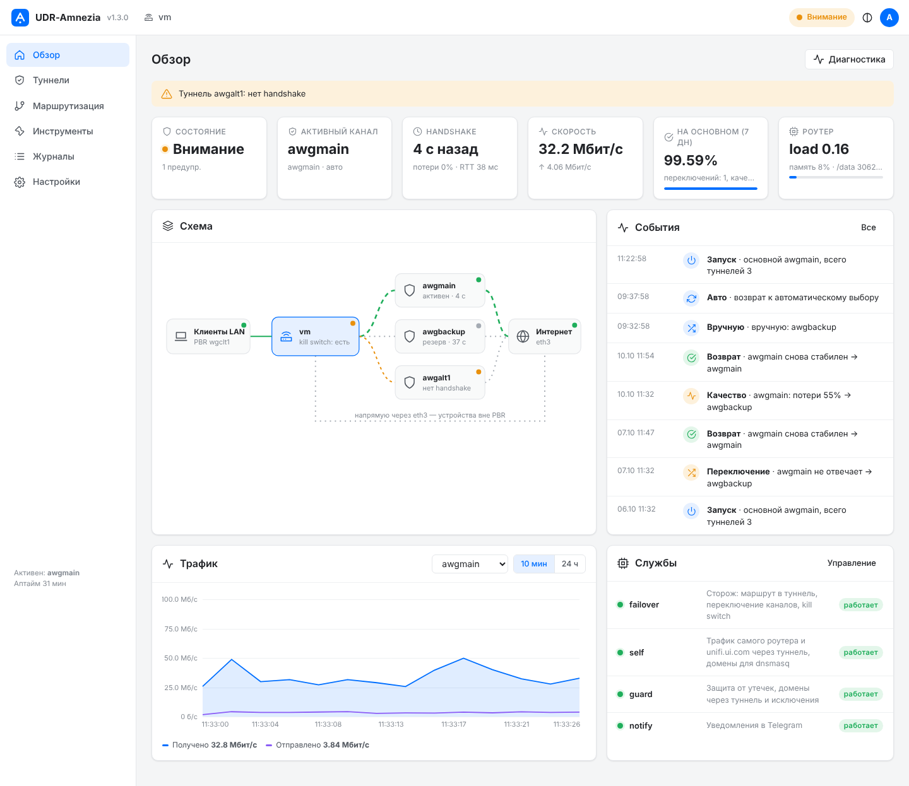

Выберите свой сценарий
Роутер у всех один и тот же, а задачи разные. Отметьте свой вариант: в оглавлении и в заголовках частей появится, что делать обязательно, а что можно пропустить. Скрипты одинаковые для всех сценариев, различаются только настройки в файле awg.env.
Установщик одной командой
Установщик install.sh делает всё, что описано в частях 0–11, и включает расширенные возможности версии 1.2: проверяет роутер, собирает бинарники AmneziaWG из официальных исходников, принимает конфиг, поднимает и проверяет туннели, сам настраивает ваш VPS по SSH, находит таблицу и метку PBR, запускает сторожа и проверяет переключение. Каждый шаг заканчивается проверкой, при ошибке установщик объясняет причину и предлагает варианты.
bash <(curl -fsSL https://raw.githubusercontent.com/stebasha/UDR-Amnezia/main/install.sh)| Мастер спросит | Что проверит |
|---|---|
| Сценарий A, B или C | aarch64, UniFi OS, /dev/net/tun, место на /data, доступ к GitHub, остатки старых установок |
| Откуда взять бинарники: собрать на вашем VPS, на своём компьютере, своя папка или ссылка | контрольные суммы обоих файлов (по SHA256SUMS или введённым суммам), что они запускаются на роутере |
| Конфиг основного туннеля (вставить текстом или путь к файлу) | секции, ключи, Address, Endpoint; предупредит, если это обычный WireGuard |
| Для своего VPS: IP, SSH-порт, порт AWG, параметры обфускации | SSH и root, ОС; соберёт и настроит сервер, заберёт конфиг; при сбое — tcpdump одновременно на роутере и на VPS |
| Какой профиль VPN Client использовать как рельсу | есть ли правило PBR; если нет — создаст фиктивный конфиг и покажет шаги в UniFi |
| Подсети VPN-сервера роутера, время возврата | что сторож положил маршрут и blackhole в таблицу PBR; переключение на запасной канал |
| Расширенное: защита от утечек, трафик роутера и unifi.ui.com, домены через туннель и исключения, качество канала, MTU | что правила стоят на своих местах (guard.sh check, self.sh check) |
| Сервисное: панель, аудит, Telegram и бот, метрики, автовосстановление, защита VPS | токен бота, chat id, доставку тестового сообщения; в конце — самопроверку всей схемы |
/data/awg/install.sh # меню: обновление, компоненты, диагностика, удаление
/data/awg/install.sh --update # обновить скрипты из репозитория, конфиги сохраняются
/data/awg/install.sh --restore # после обновления прошивки UniFi
awgctl status # активный канал, потери и задержка каждого туннеля
awgctl selftest # самопроверка всей схемы
/data/awg/install.sh --uninstallСтарые установщики при --update перезаписывали сами себя прямо во время работы. Новый файл к этому готов, но надёжнее обновляться так, чтобы работал уже новый установщик:
bash <(curl -fsSL https://raw.githubusercontent.com/stebasha/UDR-Amnezia/main/install.sh) --updateОбновление сохраняет конфиги и настройки, убирает накопившиеся дубликаты правил iptables (у прежних версий сторож вызывал iptables без -w) и перезапускает службы. Бинарники не меняет: собрать официальные можно в меню «Компоненты → Туннели → Обновить бинарники».
Части ниже — те же шаги вручную. Они нужны, чтобы понимать, что делает установщик, и для диагностики, если что-то пошло не так. Расширенные возможности описаны в части ★.
Как это устроено
Главная хитрость в том, что UniFi сам умеет выбирать, какой трафик пускать в VPN, но не умеет AmneziaWG. Поэтому мы разделяем работу: UniFi решает, что направить в туннель, а наш туннель решает, как это доставить.
Устройство
Попало под правило Policy-Based Route в UniFi: телефон, ТВ, домен, подсетьUniFi
Ставит пакету меткуfwmark, правило ip rule отправляет его в таблицу профиля VPN ClientТаблица PBR (у нас 178)
- Туннель AmneziaWG поднимает userspace-демон
amneziawg-go. Модуля AWG в ядре UDR7 нет, а/dev/net/tunесть. - «Рельса». Профиль VPN Client в UniFi нужен только ради метки и таблицы PBR. Его собственный туннель не используется и может даже не подниматься.
- Сторож (
failover.sh) каждые 5 секунд кладёт в эту таблицу маршрут на живой AWG-туннель с метрикой 5. Она меньше, чем у маршрута UniFi, поэтому выбирается наш. - Блокировка вместо утечки. Маршрут
blackholeс метрикой 200 гарантирует: если туннели лежат, PBR-трафик остановится, а не уйдёт напрямую через провайдера. - Остальной трафик не трогаем. Всё, что не попало под PBR, идёт как обычно через WAN.
- Всё хранится в
/data/awg. Этот раздел переживает обновления прошивки, а автозапуск восстанавливается одной командой.
Это первый урок из реальной установки. Обычный WireGuard до своего сервера поднимался, проходил handshake, отдавал 4–5 пингов и через 5–8 секунд замолкал в обе стороны. Обычный UDP на тот же сервер и порт жил без обрывов (40 из 40 пакетов), смена порта не помогала. Так ведёт себя DPI, который распознаёт WireGuard и рубит поток. AmneziaWG маскирует handshake и размеры пакетов, и с ним тот же сервер работал стабильно. Как проверить это у себя, описано в части 12 «Диагностика и грабли».
Вживую на UDR7 работает вся схема: основной туннель от провайдера с параметрами AWG 2.0 (S3, S4, I1, HeaderProtectionKey), запасной до своего VPS, PBR по доменам и адресам, клиенты VPN-сервера роутера, переключение и возврат, панель, аудит, уведомления. Бинарники собираются из официальных исходников amnezia-vpn (теги v3.1.…); с 1.6 на роутере работают amneziawg-go v3.1 и awg v3.1, собранные на своём VPS кнопкой «Обновить на роутере», — с ними работает и AmneziaWG 3.1 через 3x-ui.
На заглушках проверены универсальные версии скриптов из этого гайда: автоопределение таблицы и метки (awg-detect.sh), файл awg.env, режим одного туннеля, фиктивный профиль-«рельса», установка сервера одним скриптом, удаление и восстановление. Логика у них та же, что в рабочей установке, но на чужом роутере они ещё не запускались. Поэтому каждый шаг заканчивается проверкой. Расширенные возможности версии 1.2 (часть ★) и новые проверки проверены только тестами на заглушках (tests/ в репозитории).
Подготовка
Что понадобится
| Что | Зачем | Сценарий |
|---|---|---|
| UDR7 с доступом по SSH (root) | Установка | все |
Конфиг AmneziaWG .conf со строкой Address | Основной туннель | A, C |
| VPS: Ubuntu 22.04/24.04 x86_64, публичный IPv4, root | Свой сервер AWG | B, C |
| Два тестовых устройства: одно под правилом PBR, другое нет | Проверка, что в туннель уходит только нужное | все |
| Бот Telegram | Уведомления | по желанию |
Белый IP роутеру не нужен: AmneziaWG-клиент только подключается наружу и работает за NAT провайдера (CGNAT). Белый IP нужен серверу, к которому подключаетесь.
Правила безопасности
- Один конфиг = одно устройство. Если один ключ работает на двух клиентах сразу (например, роутер и старый контейнер), сервер будет перекидывать endpoint между ними, и оба канала станут нестабильными. Для роутера запросите у провайдера отдельный конфиг.
- Ключи и токены не вставляются в чаты, тикеты и скриншоты. Всё, что туда попало, считается скомпрометированным: ключ перевыпускается, токен бота отзывается в @BotFather.
- Файлы с ключами получают права
600. Все команды гайда создают их так. - Перед вставкой команды смотрите на приглашение терминала:
root@UDR7илиroot@ваш-vps. Скрипты сервера сами отказываются работать на роутере, но лучше не ошибаться.
Как читать блоки команд
У каждого блока есть метка, где его выполнять, и кнопка «Копировать». Большие блоки вида cat > файл <<'EOF' … EOF вставляйте целиком, одним куском: они создают файл.
| Метка | Где |
|---|---|
| Роутер | SSH на UDR7 под root |
| VPS | SSH на ваш сервер под root |
| ПК | Терминал вашего компьютера (PowerShell в Windows 10/11 тоже подойдёт) |
| UniFi | Веб-интерфейс UniFi Network |
Включите SSH и подключитесь
В веб-интерфейсе UniFi включите SSH для консоли и задайте пароль root. Пункт находится в настройках консоли UniFi OS (Control Plane → Console, раздел SSH); точное название зависит от версии.
ssh root@192.168.1.1Проверьте платформу
uname -m; uname -r
ls -l /dev/net/tun
df -h /data | tail -1
command -v curl python3 tcpdump iptables ipsetaarch64
5.4.213-ui-ipq5322-wireless
crw-rw-rw- 1 root root 10, 200 ... /dev/net/tun
/dev/... ... ... ... ..% /data
/usr/bin/curl
/usr/bin/python3
...Архитектура aarch64, устройство /dev/net/tun существует, на /data есть хотя бы 50 МБ свободного места. Без /dev/net/tun userspace-туннель не создать, дальше идти нет смысла.
Бинарники AmneziaWG на роутер
Нужны два файла под aarch64: демон amneziawg-go (создаёт интерфейс туннеля) и утилита awg (настраивает его, аналог wg). Берём их только из официальных исходников AmneziaVPN: amnezia-vpn/amneziawg-go и amnezia-vpn/amneziawg-tools. Готовых сборок под роутер у AmneziaVPN нет, а компилятора на роутере нет, поэтому собираем на VPS или любом компьютере с Ubuntu/Debian (подойдёт и WSL).
Установщик делает это сам: пункт «Собрать из официальных исходников на моём VPS по SSH». Он передаёт на VPS скрипт сборки, забирает два файла и сверяет их контрольные суммы. Ниже то же самое вручную.
Соберите бинарники
Скрипт server/awg-build-router.sh клонирует только два репозитория amnezia-vpn на закреплённых тегах, собирает статические файлы под linux/arm64 (на x86_64 — кросс-компилятором) и пишет SHA256SUMS и BUILDINFO с коммитами исходников. Нужно около 1 ГБ свободного места и памяти и доступ к github.com, go.dev и proxy.golang.org.
curl -fsSL https://raw.githubusercontent.com/stebasha/UDR-Amnezia/main/server/awg-build-router.sh -o awg-build-router.sh
bash awg-build-router.sh
cat /root/awgbuild/router/SHA256SUMSТеги можно поменять: AWG_GO_REF=v3.1.20260828 AWG_TOOLS_REF=v3.1.20260812 bash awg-build-router.sh. Сервер (часть 3) собирается с теми же тегами, поэтому версии протокола совпадают.
Перенесите файлы на роутер и сверьте суммы
ssh root@192.168.1.1 mkdir -p /tmp/awgbin
scp /root/awgbuild/router/* root@192.168.1.1:/tmp/awgbin/cd /tmp/awgbin && sha256sum -c SHA256SUMS && cat BUILDINFO
mkdir -p /data/awg && chmod 700 /data/awg
cp amneziawg-go awg /data/awg/ && chmod 755 /data/awg/amneziawg-go /data/awg/awg
/data/awg/awg --version; /data/awg/amneziawg-go --version | head -1amneziawg-go: OK
awg: OK
amneziawg-tools v3.1.20260812 - https://amnezia.org
amneziawg-go v3.1.20260828Обе строки OK и обе версии печатаются. FAILED в проверке сумм — файлы повреждены при переносе. Exec format error — файлы собраны не под aarch64.
Если бинарники у вас уже есть (собраны раньше или скачаны из источника, которому вы доверяете), установщик примет папку на роутере или ссылку. Контрольные суммы он сверяет по файлу SHA256SUMS рядом с бинарниками или по суммам, которые вы введёте (для прямых ссылок на два файла они обязательны); без сумм он предупредит и спросит подтверждение. Сторонние сборки и установщики, которые патчат веб-интерфейс UniFi, в этой схеме не нужны: если раньше пробовали такой (папка /data/awg-native), установщик предложит удалить его остатки.
Профиль-«рельса» и правила PBR
Штатный VPN Client UniFi поддерживает только обычный WireGuard. Зато когда вы создаёте профиль VPN Client и правило Policy-Based Route, UniFi сам делает всю «механику» отбора трафика: метит пакеты нужных устройств и доменов и отправляет их в отдельную таблицу маршрутов. Этот профиль мы и используем как рельсу: в его таблицу сторож положит маршрут на AWG-туннель.
Сгенерируйте конфиг для рельсы
Подойдёт любой корректный WireGuard-конфиг. Проще всего сделать фиктивный: свои ключи, несуществующий сервер из документационного диапазона 192.0.2.0/24. Туннель этого профиля никогда не поднимется, и это нормально.
cd /data/awg
RK=$(./awg genkey); RP=$(./awg genkey | ./awg pubkey)
cat > /tmp/rail.conf <<EOF
[Interface]
PrivateKey = $RK
Address = 10.255.255.2/32
[Peer]
PublicKey = $RP
AllowedIPs = 0.0.0.0/0
Endpoint = 192.0.2.1:51820
EOF
unset RK RP
cat /tmp/rail.confПеренесите файл на компьютер одним из способов: скопируйте текст из терминала в файл rail.conf или заберите его командой:
scp root@192.168.1.1:/tmp/rail.conf .Например, от того же провайдера. Его можно поставить рельсой вместо фиктивного. Тогда он ещё и станет третьим резервом: его маршрут в таблице имеет метрику 37, хуже наших 5, но лучше blackhole. В нашей установке рельсой был старый WireGuard-канал, после его отключения всё продолжило работать.
Создайте профиль VPN Client
Create New → VPN Type: WireGuard
Name: AWG-rail
Configuration: Upload File → rail.conf (или вручную: ключ, адрес, peer, endpoint)
Apply / SaveПрофиль останется в статусе «не подключён» или с ошибкой. Не выключайте и не удаляйте его: вместе с ним UniFi уберёт метку и таблицу, и PBR-трафик перестанет попадать в туннель.
Создайте правило Policy-Based Route
Create Entry
Interface / VPN: AWG-rail
Source: устройства или сети, которые пускаем в туннель
Destination: Any, домены или IP-адреса
Kill Switch: On
SaveРельса не поднимается, а с включённым Kill Switch UniFi блокирует трафик правила, пока сторож из части 5 не положит маршрут на AWG-туннель. Поэтому первое правило делайте для одного тестового устройства, а не для всей сети или для своего рабочего компьютера.
Для первой проверки достаточно одного правила: одно тестовое устройство, назначение Any. Остальные правила добавите потом, их число и вид роли не играют: все они ведут в одну таблицу. В нашей установке их было десять: по доменам и по адресам.
Определите таблицу и метку
У каждого роутера номер таблицы, метка и имя профиля свои (у нас были 178, 0x6a0000 и wgclt1). Скрипт найдёт их сам и запишет в /data/awg/awg.env.
cat > /data/awg/awg-detect.sh <<'EOF'
#!/bin/bash
# awg-detect.sh — находит PBR-обвязку UniFi (таблица, метка, профиль-«рельса»)
# и записывает её в /data/awg/awg.env.
# awg-detect.sh если профиль VPN Client один
# awg-detect.sh wgclt2 если профилей несколько: укажите нужный
# Систему не меняет. Обновляет в awg.env только TABLE, MARK, PRIO, RAIL_IF (и WANIF, если его не было); остальное сохраняется.
DD=${DD:-/data/awg}
mkdir -p "$DD"
[ -r "$DD/awg.env" ] && . "$DD/awg.env"
# Правило PBR профиля UniFi выглядит так:
# 32504: from all fwmark 0x6a0000/0x7e0000 lookup 178.wgclt1
rules=$(ip -4 rule show | awk '
/fwmark/ && /lookup [0-9]+\.[a-z]+clt[0-9]+/ {
prio=$1; sub(":","",prio); m=""; t=""
for(i=1;i<=NF;i++){ if($i=="fwmark") m=$(i+1); if($i=="lookup") t=$(i+1) }
split(t,a,"."); print prio, m, a[1], a[2]
}')
if [ -z "$rules" ]; then
echo "ОШИБКА: правило PBR для VPN Client не найдено."
echo "Проверьте: профиль VPN Client создан и включён, и на него ссылается"
echo "хотя бы одно правило Policy-Based Route. Затем запустите скрипт снова."
exit 1
fi
n=$(echo "$rules" | wc -l)
echo "Найдено PBR-правил VPN Client: $n"
echo "$rules" | awk '{printf " приоритет %s, метка %s, таблица %s, профиль %s\n",$1,$2,$3,$4}'
if [ -n "$1" ]; then
line=$(echo "$rules" | awk -v w="$1" '$4==w{print; exit}')
[ -z "$line" ] && { echo "ОШИБКА: профиль $1 в правилах не найден"; exit 3; }
elif [ "$n" -gt 1 ]; then
echo "Профилей несколько. Запустите: $0 <профиль>, например: $0 $(echo "$rules" | awk 'NR==1{print $4}')"
exit 2
else
line=$rules
fi
read -r PRIO_D MARK_D TABLE_D RAIL_D <<< "$line"
WAN_D=$(ip -4 route get 1.1.1.1 2>/dev/null | awk '{for(i=1;i<=NF;i++) if($i=="dev"){print $(i+1); exit}}')
case "$WAN_D" in ""|awg*|wg*) WAN_D=eth3 ;; esac
umask 077
# Ключи обновляются на месте: остальные настройки awg.env (туннели, подсети, домены, awg-self, guard, Telegram…) не трогаются.
F=$DD/awg.env
[ -f "$F" ] || printf '# Параметры AWG. После ручной правки: systemctl restart awg-failover\n' > "$F"
setk(){ # setk КЛЮЧ ЗНАЧЕНИЕ [только_если_нет]
if grep -q "^$1=" "$F"; then
[ -n "$3" ] && return 0
awk -v k="$1" -v v="$2" 'index($0, k"=")==1 {print k"="v; next} {print}' "$F" > "$F.t" && mv "$F.t" "$F"
else
printf '%s=%s\n' "$1" "$2" >> "$F"
fi
}
setk TABLE "$TABLE_D"
setk MARK "$MARK_D"
setk PRIO "$PRIO_D"
setk RAIL_IF "$RAIL_D"
setk WANIF "${WANIF:-$WAN_D}"
setk MAIN "${MAIN:-awgmain}" keep
setk BACKUP "${BACKUP-}" keep
setk VPS_IP "${VPS_IP-}" keep
setk RECOVER_SEC "${RECOVER_SEC:-600}" keep
setk EXTRA_SUBNETS "\"${EXTRA_SUBNETS-}\"" keep
chmod 600 "$F"
echo
echo "Записано в $DD/awg.env:"
sed 's/^/ /' "$DD/awg.env"
EOF
chmod 755 /data/awg/awg-detect.sh
/data/awg/awg-detect.sh
rm -f /tmp/rail.confНайдено PBR-правил VPN Client: 1
приоритет 32504, метка 0x6a0000/0x7e0000, таблица 178, профиль wgclt1
Записано в /data/awg/awg.env:
TABLE=178
MARK=0x6a0000/0x7e0000
PRIO=32504
RAIL_IF=wgclt1
WANIF=eth3
MAIN=awgmain
BACKUP=
...Строка «Найдено PBR-правил: 1». Если правил не нашлось, значит, профиль выключен или на него не ссылается ни одно правило PBR. Если профилей VPN Client несколько, скрипт попросит указать нужный: /data/awg/awg-detect.sh wgclt2.
Свой сервер AmneziaWG на VPS
В сценарии B это ваш единственный туннель, в сценарии C это запасной канал. На сервере собирается тот же amneziawg-go из тех же официальных исходников и с теми же тегами, что и для роутера, поэтому версии протокола совпадают. Сервер живёт отдельно от любых панелей, порт по умолчанию 51823/udp, подсеть туннеля 10.0.1.0/24.
Xray-core не поддерживает AmneziaWG. А его WireGuard-inbound в нашей установке не записывал peers в рабочий config.json: порт слушался, пакеты приходили, но сервер молча их отбрасывал. Если на VPS стоит 3x-ui, пусть стоит, просто выберите для AWG свободный порт.
Соберите amneziawg-go и awg
cat > /root/awg-server-build.sh <<'EOF'
#!/bin/bash
# awg-server-build.sh — сборка amneziawg-go и awg на VPS (Ubuntu/Debian, x86_64 или arm64), от root.
# Только официальные исходники AmneziaVPN:
# https://github.com/amnezia-vpn/amneziawg-go (userspace-реализация, Go)
# https://github.com/amnezia-vpn/amneziawg-tools (утилита awg, C)
# Версии задаются тегами и совпадают с теми, что собираются для роутера (awg-build-router.sh):
# AWG_GO_REF=v3.1.20260828 AWG_TOOLS_REF=v3.1.20260812 bash awg-server-build.sh
# Устанавливает /usr/local/bin/amneziawg-go и /usr/local/bin/awg; прежние сохраняются как *.prev,
# теги сборки — в /usr/local/share/amnezia-build.txt.
# RESTART=1 — перезапустить awg-server на новых файлах; ROLLBACK_BINS=1 bash awg-server-build.sh — вернуть *.prev
set -euo pipefail
BIN=${BIN:-/usr/local/bin}
INFO=${INFO:-/usr/local/share/amnezia-build.txt}
if [ "${ROLLBACK_BINS:-}" = 1 ]; then
[ -f "$BIN/amneziawg-go.prev" ] && [ -f "$BIN/awg.prev" ] || { echo "ERROR нет $BIN/*.prev"; exit 1; }
cp -p "$BIN/amneziawg-go.prev" "$BIN/amneziawg-go"; cp -p "$BIN/awg.prev" "$BIN/awg"
[ -f "$INFO.prev" ] && cp -p "$INFO.prev" "$INFO"
systemctl restart awg-server 2>/dev/null || true
echo "ROLLED_BACK"; exit 0
fi
AWG_GO_REF=${AWG_GO_REF:-v3.1.20260828}
AWG_TOOLS_REF=${AWG_TOOLS_REF:-v3.1.20260812}
GO_FALLBACK=${GO_FALLBACK:-1.25.12} # версия Go с go.dev, если нет snap (дальше GOTOOLCHAIN=auto скачает нужную)
SRC=${SRC:-/root/awgbuild/src}
[ -d /data/unifi-core ] && { echo "Это роутер UniFi. Скрипт запускается на VPS."; exit 1; }
[ "$(id -u)" = 0 ] || { echo "Нужен root"; exit 1; }
export DEBIAN_FRONTEND=noninteractive
apt-get update -q
apt-get install -y -q git make gcc libc6-dev curl ca-certificates
ensure_go(){
export PATH=$PATH:/snap/bin:/usr/local/go/bin
command -v go >/dev/null 2>&1 && return 0
if command -v snap >/dev/null 2>&1 && snap install go --classic; then return 0; fi
local ga; case "$(uname -m)" in x86_64) ga=amd64;; aarch64) ga=arm64;; *) echo "неизвестная архитектура $(uname -m)"; exit 1;; esac
curl -fL --proto =https --proto-redir =https "https://go.dev/dl/go${GO_FALLBACK}.linux-$ga.tar.gz" -o /tmp/go.tgz
rm -rf /usr/local/go && tar -C /usr/local -xzf /tmp/go.tgz && rm -f /tmp/go.tgz
}
ensure_go
export GOTOOLCHAIN=auto # если исходникам нужна более новая версия Go, она скачается сама (с go.dev)
mkdir -p "$SRC"; cd "$SRC"
rm -rf amneziawg-go amneziawg-tools
git -c advice.detachedHead=false clone -q --depth 1 --branch "$AWG_GO_REF" https://github.com/amnezia-vpn/amneziawg-go
git -c advice.detachedHead=false clone -q --depth 1 --branch "$AWG_TOOLS_REF" https://github.com/amnezia-vpn/amneziawg-tools
printf 'package main\n\nconst Version = "%s"\n' "$AWG_GO_REF" > amneziawg-go/version.go
# сначала собрать всё во временную папку: при ошибке сборки работающие файлы не трогаются
( cd amneziawg-go && CGO_ENABLED=0 go build -trimpath -ldflags '-s -w' -o "$SRC/amneziawg-go.bin" . )
( cd amneziawg-tools/src && make -s clean >/dev/null 2>&1 || true; make -s && cp wg "$SRC/awg.bin" )
"$SRC/amneziawg-go.bin" --version >/dev/null && "$SRC/awg.bin" --version >/dev/null
mkdir -p "$(dirname "$INFO")"
if [ -f "$BIN/amneziawg-go" ] && [ -f "$BIN/awg" ]; then
cp -p "$BIN/amneziawg-go" "$BIN/amneziawg-go.prev"; cp -p "$BIN/awg" "$BIN/awg.prev"
[ -f "$INFO" ] && cp -p "$INFO" "$INFO.prev"
fi
install -m 755 "$SRC/amneziawg-go.bin" "$BIN/amneziawg-go"; install -m 755 "$SRC/awg.bin" "$BIN/awg"
rm -f "$SRC/amneziawg-go.bin" "$SRC/awg.bin"
printf 'amneziawg-go %s\namneziawg-tools %s\nbuilt %s\n' "$AWG_GO_REF" "$AWG_TOOLS_REF" "$(date -u '+%F %T')" > "$INFO"
[ "${RESTART:-}" = 1 ] && systemctl restart awg-server
echo
"$BIN/amneziawg-go" --version | head -1
"$BIN/awg" --version
echo "собрано из amnezia-vpn/amneziawg-go@$AWG_GO_REF и amnezia-vpn/amneziawg-tools@$AWG_TOOLS_REF"
echo "BUILT_OK"
EOF
chmod 755 /root/awg-server-build.sh
/root/awg-server-build.shamneziawg-go 0.0.20250522
amneziawg-tools v3.1.20260812 - https://amnezia.orgОбе версии напечатались. Утилита собирается под именем wg и устанавливается как /usr/local/bin/awg, чтобы не путаться с обычным WireGuard.
Создайте сервер, ключи и конфиг для роутера
Скрипт генерирует ключи и параметры обфускации, пишет /etc/amnezia/server.conf и конфиг клиента для роутера, ставит службу awg-server (автозапуск, NAT, ip_forward) и открывает порт в ufw, если он включён. Повторный запуск ключи не трогает, только переустанавливает автозапуск.
cat > /root/awg-server-setup.sh <<'EOF'
#!/bin/bash
# awg-server-setup.sh — сервер AmneziaWG на VPS (от root, после awg-server-build.sh).
# Создаёт ключи, параметры обфускации, /etc/amnezia/server.conf, конфиг клиента для роутера
# и службу awg-server (автозапуск, NAT, ip_forward).
# VPS_IP=203.0.113.10 ./awg-server-setup.sh
# Необязательно: PORT=51823 SUBNET=10.0.1 MTU=1380
# OBF_FILE=/root/obf.txt — взять Jc/Jmin/Jmax/S1/S2/H1-H4 из файла (например, из конфига,
# который точно проходит через вашего провайдера); иначе параметры генерируются случайно.
set -e
PORT=${PORT:-51823}
SUBNET=${SUBNET:-10.0.1}
MTU=${MTU:-1380}
ETC=/etc/amnezia
OUT=/root/awgbuild
[ -d /data/unifi-core ] && { echo "Это роутер UniFi. Скрипт запускается на VPS."; exit 1; }
command -v awg >/dev/null && command -v amneziawg-go >/dev/null || { echo "Сначала awg-server-build.sh"; exit 1; }
umask 077; mkdir -p $ETC $OUT
if [ -e $ETC/server.conf ]; then
echo "$ETC/server.conf уже есть: ключи не трогаю, переустанавливаю только автозапуск."
else
VPS_IP=${VPS_IP:?задайте внешний IP сервера: VPS_IP=203.0.113.10 $0}
if ss -ulpn | grep -q ":$PORT "; then echo "UDP-порт $PORT занят, выберите другой: PORT=... $0"; exit 1; fi
if [ -n "$OBF_FILE" ]; then
OBF=$(grep -E '^[[:space:]]*(Jc|Jmin|Jmax|S1|S2|H1|H2|H3|H4)[[:space:]]*=' "$OBF_FILE" | sed 's/^[[:space:]]*//')
[ "$(echo "$OBF" | wc -l)" = 9 ] || { echo "В $OBF_FILE нужно ровно 9 строк Jc..H4"; exit 1; }
else
rnd(){ shuf -i "$1"-"$2" -n 1; }
JC=$(rnd 4 8); JMIN=$(rnd 40 80); JMAX=$((JMIN + $(rnd 60 200)))
S1=$(rnd 15 150); S2=$(rnd 15 150)
while [ $((S1+56)) -eq $S2 ] || [ $S1 -eq $S2 ]; do S2=$(rnd 15 150); done
mapfile -t HH < <(shuf -i 5-2147483647 -n 4)
OBF=$(printf 'Jc = %s\nJmin = %s\nJmax = %s\nS1 = %s\nS2 = %s\nH1 = %s\nH2 = %s\nH3 = %s\nH4 = %s' \
$JC $JMIN $JMAX $S1 $S2 ${HH[0]} ${HH[1]} ${HH[2]} ${HH[3]})
fi
SK=$(awg genkey); SP=$(echo "$SK" | awg pubkey)
CK=$(awg genkey); CP=$(echo "$CK" | awg pubkey)
cat > $ETC/server.conf <<CONF
[Interface]
PrivateKey = $SK
ListenPort = $PORT
$OBF
[Peer]
PublicKey = $CP
AllowedIPs = $SUBNET.2/32
CONF
cat > $OUT/client.conf <<CONF
[Interface]
PrivateKey = $CK
Address = $SUBNET.2/32
MTU = $MTU
$OBF
[Peer]
PublicKey = $SP
AllowedIPs = 0.0.0.0/0
Endpoint = $VPS_IP:$PORT
PersistentKeepalive = 25
CONF
chmod 600 $ETC/server.conf $OUT/client.conf
echo "Созданы $ETC/server.conf и $OUT/client.conf"
fi
cat > /usr/local/bin/awg-up.sh <<UP
#!/bin/bash
ip link show awg0 >/dev/null 2>&1 && exit 0
amneziawg-go awg0
for k in 1 2 3 4 5 6 7 8 9 10; do ip link show awg0 >/dev/null 2>&1 && break; sleep 0.3; done
awg setconf awg0 $ETC/server.conf
ip addr add $SUBNET.1/24 dev awg0
ip link set awg0 up mtu $MTU
IFACE=\$(ip -4 route show default | awk '{print \$5; exit}')
iptables -w 10 -t nat -C POSTROUTING -s $SUBNET.0/24 -o \$IFACE -j MASQUERADE 2>/dev/null || iptables -w 10 -t nat -A POSTROUTING -s $SUBNET.0/24 -o \$IFACE -j MASQUERADE
iptables -w 10 -C FORWARD -i awg0 -j ACCEPT 2>/dev/null || iptables -w 10 -I FORWARD -i awg0 -j ACCEPT
iptables -w 10 -C FORWARD -o awg0 -j ACCEPT 2>/dev/null || iptables -w 10 -I FORWARD -o awg0 -j ACCEPT
UP
chmod 755 /usr/local/bin/awg-up.sh
cat > /etc/systemd/system/awg-server.service <<'UNIT'
[Unit]
Description=AmneziaWG server awg0
After=network-online.target
Wants=network-online.target
[Service]
Type=oneshot
RemainAfterExit=yes
ExecStart=/usr/local/bin/awg-up.sh
ExecStop=/sbin/ip link del awg0
[Install]
WantedBy=multi-user.target
UNIT
echo 'net.ipv4.ip_forward=1' > /etc/sysctl.d/99-awg.conf
sysctl -q -p /etc/sysctl.d/99-awg.conf
P=$(awk -F'=' '/^ListenPort/{gsub(/ /,"",$2); print $2}' $ETC/server.conf)
if command -v ufw >/dev/null && ufw status | grep -q "Status: active"; then ufw allow "$P/udp"; fi
systemctl daemon-reload
systemctl enable awg-server >/dev/null 2>&1
systemctl restart awg-server # restart, а не enable --now: у oneshot-службы с RemainAfterExit повторный --now ничего не делает
echo
awg show awg0 | head -4 || true
ss -ulpn | grep ":$P " || echo "ВНИМАНИЕ: UDP $P пока не слушается: journalctl -u awg-server -n 20"
echo
echo "Конфиг для роутера: $OUT/client.conf (перенесите на роутер как /data/awg/backup.conf или main.conf)"
echo "Не забудьте открыть UDP $P в файрволе хостера, если он есть."
EOF
chmod 755 /root/awg-server-setup.sh
VPS_IP=203.0.113.10 /root/awg-server-setup.shinterface: awg0
public key: …
private key: (hidden)
listening port: 51823
UNCONN 0 0 0.0.0.0:51823 0.0.0.0:* users:(("amneziawg-go",pid=…,fd=4))
Конфиг для роутера: /root/awgbuild/client.confПо умолчанию Jc, Jmin, Jmax, S1, S2, H1–H4 генерируются случайно с соблюдением правил AWG (например, S1 + 56 ≠ S2). Если у вас уже есть конфиг AWG, который точно проходит через вашего провайдера, можно взять параметры из него. В нашей установке так и сделали:
# положите в файл строки Jc..H4 (только их, без ключей!)
nano /root/obf.txt
OBF_FILE=/root/obf.txt VPS_IP=203.0.113.10 /root/awg-server-setup.shСовпадение параметров с чужим сервером ничем не грозит: ключи и адреса у вас свои. Важно только, чтобы параметры на сервере и в client.conf совпадали, а скрипт это гарантирует.
Откройте порт у хостера
Если у хостера есть свой файрвол (Security Groups, «Сетевой экран» в панели), разрешите в нём входящий UDP 51823. Скрипт его не видит. Признак закрытого порта: на сервере tcpdump -ni any udp port 51823 молчит, пока роутер шлёт handshake.
Перенесите конфиг на роутер
Сценарий C: файл станет запасным туннелем backup.conf. Сценарий B: это ваш основной туннель, назовите его main.conf.
scp root@203.0.113.10:/root/awgbuild/client.conf /data/awg/backup.conf
chmod 600 /data/awg/backup.conf
grep -c '^Jc' /data/awg/backup.confscp root@203.0.113.10:/root/awgbuild/client.conf /data/awg/main.conf
chmod 600 /data/awg/main.conf
grep -c '^Jc' /data/awg/main.confgrep должен вывести 1. Если scp недоступен, выведите файл на сервере (cat /root/awgbuild/client.conf), а на роутере выполните cat > /data/awg/backup.conf, вставьте текст и нажмите Ctrl+D. Когда файл на месте, удалите копию с сервера:
shred -u /root/awgbuild/client.confАудит сервера
cat > /root/audit-server.sh <<'EOF'
#!/bin/bash
# audit-server.sh — проверка VPS с сервером AmneziaWG. Только чтение.
[ -d /data/unifi-core ] && { echo "Это роутер UniFi: запускайте на VPS"; exit 1; }
iptables(){ command iptables -w 10 "$@"; }
ok=0; warn=0; bad=0
if [ -t 1 ] && [ -z "$NO_COLOR" ]; then G=$'\e[32m'; R=$'\e[31m'; Y=$'\e[33m'; B=$'\e[1m'; N=$'\e[0m'; else G=; R=; Y=; B=; N=; fi
P(){ echo " ${G}OK${N} $1"; ok=$((ok+1)); }
W(){ echo " ${Y}WARN${N} $1"; [ -n "$2" ] && echo " fix: $2"; warn=$((warn+1)); }
F(){ echo " ${R}FAIL${N} $1"; [ -n "$2" ] && echo " fix: $2"; bad=$((bad+1)); }
sec(){ echo; echo "${B}== $1 ==${N}"; }
CONF=/etc/amnezia/server.conf
PORT=$(awk -F'=' '/^ListenPort/{gsub(/ /,"",$2); print $2}' $CONF 2>/dev/null)
sec "AmneziaWG (awg0)"
ip link show awg0 >/dev/null 2>&1 && P "awg0 поднят" || F "awg0 отсутствует" "systemctl restart awg-server; journalctl -u awg-server -n 20"
en=$(systemctl is-enabled awg-server 2>/dev/null)
[ "$en" = enabled ] && P "awg-server: автозапуск включён" || F "awg-server: ${en:-не найден}" "awg-server-setup.sh"
c=$(pgrep -c amneziawg-go 2>/dev/null); [ "${c:-0}" = 1 ] && P "процессов amneziawg-go: 1" || W "процессов amneziawg-go: ${c:-0} (нужен 1)" "pgrep -a amneziawg-go"
if ip link show awg0 >/dev/null 2>&1; then
np=$(awg show awg0 peers 2>/dev/null | wc -l); [ "$np" -ge 1 ] && P "peer на awg0: $np" || W "на awg0 нет peer" "awg show awg0"
ts=$(awg show awg0 latest-handshakes 2>/dev/null | awk 'NR==1{print $2}')
if [ -n "$ts" ] && [ "$ts" != 0 ]; then P "handshake роутера: $(( $(date +%s) - ts ))с назад"; else W "handshake с роутера не было" "проверьте туннель на роутере"; fi
fi
[ "$(stat -c %a $CONF 2>/dev/null)" = 600 ] && P "$CONF: права 600" || W "$CONF: нет файла или права не 600" "chmod 600 $CONF"
[ -n "$PORT" ] && { ss -ulpn 2>/dev/null | grep ":$PORT " | grep -q amneziawg-go && P "UDP $PORT слушает amneziawg-go" || F "UDP $PORT не слушается amneziawg-go" "ss -ulpn | grep :$PORT"; }
sec "Маршрутизация и NAT"
[ "$(sysctl -n net.ipv4.ip_forward 2>/dev/null)" = 1 ] && P "ip_forward = 1" || F "ip_forward не 1" "sysctl -w net.ipv4.ip_forward=1"
ls /etc/sysctl.d/*awg* /etc/sysctl.d/*wg* >/dev/null 2>&1 && P "ip_forward закреплён в /etc/sysctl.d" || W "ip_forward не закреплён" "echo 'net.ipv4.ip_forward=1' > /etc/sysctl.d/99-awg.conf"
SUB=$(ip -4 -br addr show awg0 2>/dev/null | awk '{print $3}' | cut -d. -f1-3)
if [ -n "$SUB" ]; then
c=$(iptables -t nat -S POSTROUTING 2>/dev/null | grep -c -- "-s $SUB.0/24")
[ "$c" = 1 ] && P "NAT для $SUB.0/24: 1 правило" || W "NAT для $SUB.0/24: $c (нужно 1)" "iptables -t nat -S POSTROUTING"
fi
c=$(iptables -S FORWARD 2>/dev/null | grep -c -E -- '(-i|-o) awg0 -j ACCEPT')
[ "$c" = 2 ] && P "FORWARD для awg0: 2 правила" || W "FORWARD для awg0: $c (нужно 2)" "iptables -S FORWARD | grep awg0"
sec "Файрвол"
if command -v ufw >/dev/null 2>&1 && ufw status 2>/dev/null | grep -q "Status: active"; then
ufw status | grep -q "^$PORT/udp" && P "ufw: $PORT/udp открыт" || F "ufw: $PORT/udp не открыт" "ufw allow $PORT/udp"
else
echo " ufw не активен: его правила не применяются"
fi
echo " Файрвол в панели хостера скрипт не видит: UDP $PORT должен быть открыт и там."
sec "Файлы с ключами"
for f in /root/awgbuild/client.conf /root/awgbuild/server.conf; do
[ -e "$f" ] && W "остаток: $f (после переноса на роутер не нужен)" "shred -u $f"
done
k=$(grep -E -c '[A-Za-z0-9+/]{43}=' /root/.bash_history 2>/dev/null)
[ "${k:-0}" = 0 ] && P "в .bash_history нет строк, похожих на ключи" || W ".bash_history: строк, похожих на ключи: $k" "history -c; : > /root/.bash_history"
sec "Итог"
echo " ${G}OK: $ok${N} ${Y}WARN: $warn${N} ${R}FAIL: $bad${N}"
echo " Скрипт ничего не меняет."
EOF
chmod 755 /root/audit-server.sh
/root/audit-server.shВсе пункты OK, кроме «handshake с роутера не было»: роутер ещё не подключён. Запустите аудит повторно: в сценарии B после шага 4.2, в сценарии C после шага 6.1. Там должно появиться «handshake роутера: …с назад».
Основной туннель awgmain
Конфиг AmneziaWG кладётся в /data/awg/main.conf как есть, со всеми строками. Скрипт up.sh сам выкинет то, что утилита awg не понимает (Address, DNS, MTU, директивы wg-quick), назначит адрес и MTU и оставит в AllowedIPs только IPv4: маршрутами управляет сторож, а IPv6 через туннель не идёт.
Положите конфиг
Сценарий B: файл уже на месте после шага 3.4, пропустите. Сценарии A и C: вставьте конфиг провайдера прямо в терминал роутера (в чат, мессенджер или тикет его не отправляйте):
cat > /data/awg/main.confchmod 600 /data/awg/main.conf
grep -E -c '^(Address|Endpoint|Jc)' /data/awg/main.confДолжно получиться 3. Поддерживаются конфиги AWG 1.x и 2.0: в нашей установке основной конфиг провайдера содержал S3, S4, I1 = <r 198>, HeaderProtectionKey, RekeyAfterTime и т. п., и бинарник из части 1 их принял.
Создайте up.sh и поднимите туннель
cat > /data/awg/up.sh <<'EOF'
#!/bin/bash
# up.sh — поднимает туннели AmneziaWG из конфигов в /data/awg
# up.sh все туннели: MAIN, BACKUP и TUNNELS_EXTRA (из awg.env)
# up.sh awgmain один туннель (интерфейс пересоздаётся; так применяют новый конфиг)
# up.sh --conf-of ИМЯ имя файла конфига туннеля (для сторожа)
# IPv6 (#23): при LEAK_V6=route IPv6-адрес из Address тоже назначается, AllowedIPs = 0.0.0.0/0, ::/0.
# Конфиги: main.conf — основной, backup.conf (или client.conf) — запасной, <имя>.conf — дополнительные.
DD=${DD:-/data/awg}
cd "$DD" || exit 1
[ -r awg.env ] && . ./awg.env
MAIN=${MAIN:-awgmain}; BACKUP=${BACKUP:-}; TUNNELS_EXTRA=${TUNNELS_EXTRA:-}; LEAK_V6=${LEAK_V6:-block}
umask 077
conf_of(){
if [ "$1" = "$MAIN" ]; then echo main.conf
elif [ -n "$BACKUP" ] && [ "$1" = "$BACKUP" ]; then
if [ -f backup.conf ] || [ ! -f client.conf ]; then echo backup.conf; else echo client.conf; fi
else
case " $TUNNELS_EXTRA " in *" $1 "*) echo "$1.conf";; esac
fi
}
# Endpoint с именем хоста заменяем на IPv4: awg собран статически, и разрешение имён внутри него
# зависит от библиотек роутера. Имя разрешает сам роутер (getent), как и wg-quick при запуске.
resolve_endpoint(){ # resolve_endpoint ФАЙЛ ИНТЕРФЕЙС
local f=$1 ep host port ip cache=$DD/.endpoint-$2
ep=$(awk -F'=' 'tolower($1) ~ /^[ \t]*endpoint[ \t]*$/ {gsub(/[ \t\r]/,"",$2); print $2; exit}' "$f")
[ -n "$ep" ] || return 0
host=${ep%:*}; port=${ep##*:}
case "$host" in \[*|*[!0-9.]*) ;; *) return 0;; esac # уже IPv4
case "$host" in \[*) return 0;; esac # IPv6 — оставляем как есть
ip=$(getent ahostsv4 "$host" 2>/dev/null | awk 'NR==1{print $1}')
if [ -n "$ip" ]; then
echo "$host $ip" > "$cache"
elif [ -s "$cache" ] && [ "$(cut -d' ' -f1 "$cache")" = "$host" ]; then
# DNS сейчас недоступен (например, весь DNS роутера идёт через туннель, а туннеля ещё нет): берём прошлый адрес
ip=$(cut -d' ' -f2 "$cache"); echo "ВНИМАНИЕ: $host не разрешается, беру последний известный адрес $ip"
else
echo "ВНИМАНИЕ: не удалось разрешить $host, оставляю имя в Endpoint"; return 0
fi
sed -i -E "s|^([[:space:]]*[Ee][Nn][Dd][Pp][Oo][Ii][Nn][Tt][[:space:]]*=[[:space:]]*).*|\1$ip:$port|" "$f"
echo "Endpoint $host → $ip"
}
bring_up(){
local n=$1 conf raw tmp addr addr6="" mtu allowed="0.0.0.0\/0"
conf=$(conf_of "$n")
[ -z "$conf" ] && { echo "ОШИБКА: $n не указан в awg.env (MAIN, BACKUP или TUNNELS_EXTRA)"; return 1; }
[ -f "$conf" ] || { echo "ОШИБКА: нет файла $DD/$conf"; return 1; }
raw=${AWG_RUN:-/run}/$n.raw; tmp=${AWG_RUN:-/run}/$n.awg.conf
sed 's/\r$//' "$conf" > "$raw"
# Address и MTU утилита awg не понимает: берём их сами, из Address только IPv4
addr=$(awk -F'=' 'tolower($1) ~ /^[ \t]*address[ \t]*$/ {print $2; exit}' "$raw" | tr ',' '\n' | tr -d ' \t' | grep -m1 '\.')
mtu=$(awk -F'=' 'tolower($1) ~ /^[ \t]*mtu[ \t]*$/ {gsub(/[ \t]/,"",$2); print $2; exit}' "$raw")
[ -z "$addr" ] && { echo "ОШИБКА: в $conf нет IPv4-адреса в строке Address"; rm -f "$raw"; return 1; }
case "$addr" in */*) ;; *) addr=$addr/32 ;; esac
[[ "$mtu" =~ ^[0-9]+$ ]] || mtu=1380
if [ "$LEAK_V6" = route ]; then # IPv6 через туннель (#23): адрес IPv6 из Address, если сервер его выдал
addr6=$(awk -F'=' 'tolower($1) ~ /^[ \t]*address[ \t]*$/ {print $2; exit}' "$raw" | tr ',' '\n' | tr -d ' \t' | grep -m1 ':')
[ -n "$addr6" ] && { case "$addr6" in */*) ;; *) addr6=$addr6/128 ;; esac; allowed="0.0.0.0\/0, ::\/0"; }
fi
# убираем директивы wg-quick; маршрутизирует сторож, поэтому AllowedIPs = только default (IPv4, и IPv6 при #23)
grep -v -i -E '^[[:space:]]*(Address|DNS|MTU|Table|PreUp|PostUp|PreDown|PostDown|SaveConfig)[[:space:]]*=' "$raw" \
| sed -E "s/^[[:space:]]*AllowedIPs[[:space:]]*=.*/AllowedIPs = $allowed/" > "$tmp"
rm -f "$raw"
resolve_endpoint "$tmp" "$n"
ip link show "$n" >/dev/null 2>&1 && ip link del "$n"
# amneziawg-go — в собственной группе процессов (scope systemd), а не в группе службы, которая поднимает туннель
# (сторож, панель, маршрут): иначе перезапуск этой службы (смена настроек, обновление) убивал процесс, интерфейс
# пропадал и туннель лежал, пока сторож не поднимет его заново.
if { [ -n "${AWG_FORCE_SCOPE:-}" ] || { [ "${EUID:-1}" = 0 ] && [ -d /run/systemd/system ]; }; } && [ -z "${AWG_NO_SCOPE:-}" ] \
&& command -v systemd-run >/dev/null 2>&1; then
systemd-run --scope --quiet --collect --description="AmneziaWG $n" "$DD/amneziawg-go" "$n" >/dev/null 2>&1 \
|| { ip link show "$n" >/dev/null 2>&1 || ./amneziawg-go "$n" >/dev/null 2>&1; }
else
./amneziawg-go "$n" >/dev/null 2>&1
fi
for _ in 1 2 3 4 5 6 7 8 9 10; do ip link show "$n" >/dev/null 2>&1 && break; sleep 0.3; done
if ! ./awg setconf "$n" "$tmp"; then
echo "ОШИБКА: awg setconf $n (строка, которую awg не понял, указана выше)"
ip link del "$n" 2>/dev/null; rm -f "$tmp"; return 1
fi
rm -f "$tmp"
ip addr add "$addr" dev "$n"
if [ -n "$addr6" ]; then sysctl -qw "net.ipv6.conf.$n.disable_ipv6=0" 2>/dev/null; ip -6 addr add "$addr6" dev "$n" nodad 2>/dev/null; fi
ip link set "$n" up mtu "$mtu"
sysctl -qw "net.ipv4.conf.$n.rp_filter=0" 2>/dev/null
echo "$n поднят: адрес $addr${addr6:+ и $addr6}, MTU $mtu, конфиг $conf"
}
if [ "$1" = --conf-of ]; then conf_of "$2"; exit 0; fi
if [ -n "$1" ]; then bring_up "$1"; exit $?; fi
rc=0
bring_up "$MAIN" || rc=1
if [ -n "$BACKUP" ]; then bring_up "$BACKUP" || rc=1; fi
for t in $TUNNELS_EXTRA; do bring_up "$t" || rc=1; done
exit $rc
EOF
chmod 755 /data/awg/up.sh
/data/awg/up.sh awgmainawgmain поднят: адрес 10.8.2.13/32, MTU 1406, конфиг main.confПроверьте туннель с самого роутера
curl -s -m 8 --interface awgmain https://ifconfig.me; echo
/data/awg/awg show awgmain | grep -E 'endpoint|handshake|transfer'198.51.100.20 ← внешний IP сервера VPN, не ваш домашний
endpoint: 198.51.100.20:51822
latest handshake: 3 seconds ago
transfer: 4.12 KiB received, 1.98 KiB sentcurl показывает IP сервера VPN, handshake свежий, received больше нуля. Если в конфиге нет PersistentKeepalive, handshake появляется только после первого трафика, поэтому сначала идёт curl.
ОШИБКА: awg setconfи строка с непонятным параметром: бинарник старее конфига. Соберите свежий (часть 13, «Сборка бинарников для роутера») или попросите у провайдера конфиг без новых параметров.- Handshake нет,
received: 0 B: пакеты не доходят или сервер их не принимает. Смотрите часть 12, «Handshake не проходит». - Handshake есть, но
ping -I awgmain 1.1.1.1молчит, аcurlработает: у части провайдеров ICMP через туннель не ходит. Это не поломка, сторож проверяет канал по HTTPS.
Сторож и автозапуск
После этой части основа готова: PBR-трафик идёт в туннель, после перезагрузки всё поднимается само, а при падении туннеля трафик блокируется, а не утекает. Сторож — один скрипт под systemd. Он поднимает туннели, если их нет, держит NAT, MSS clamping и разрешения форварда, проверяет каналы и раз в 5 секунд подтверждает маршрут в таблице PBR: UniFi при перепровижне может её пересобрать.
| Параметр | Значение | Что значит |
|---|---|---|
| Проверка канала | каждые 5 с | HTTPS к 1.1.1.1 и 8.8.8.8 через интерфейс туннеля; если не ответил, то ping. Живой, если ответил хоть один. Пока из туннеля идёт трафик (от 64 КБ за проход), отдельный запрос не нужен — настоящая проверка не реже раза в минуту (1.8). |
| Падение | 3 сбоя подряд, ~15 с | При запасном канале: переключение на него, если он жив. Без запасного: запись в журнал, трафик блокируется. |
| Возврат | RECOVER_SEC, по умолчанию 600 с | Основной должен отвечать 10 минут без единого сбоя. Любой сбой обнуляет отсчёт. Основной, который не отвечает дольше 2 минут, проверяется раз в 30 с (дольше 10 минут — раз в минуту): проверка мёртвого туннеля не тормозит слежение за рабочим (1.8). |
| Запасной сломался | 3 сбоя | Если основной в этот момент жив, возврат на него сразу, без ожидания. |
| Оба канала лежат | — | Маршрут остаётся на основном, за ним blackhole: PBR-трафик стоит, в WAN не утекает. |
Создайте сторожа и службу
cat > /data/awg/failover.sh <<'EOF'
#!/bin/bash
# failover.sh — сторож: держит AWG-туннель в таблице PBR UniFi и переключает каналы.
# failover.sh основной цикл (запускает systemd: awg-failover.service)
# failover.sh cleanup убрать свои маршруты из таблицы PBR
# failover.sh dedup убрать дубликаты правил iptables для туннелей awg* (накапливались у версий без -w)
# failover.sh forget ИМЯ убрать все правила iptables для интерфейса ИМЯ (туннель удалён из схемы)
# failover.sh --route ID … то же для дополнительного маршрута (#22): свой профиль VPN Client UniFi (рельса), своя
# таблица и метка PBR, своя цепочка туннелей — из route.d/ID.env (служба awg-failover-ID)
# IPv6 через туннель (#23, LEAK_V6=route, по желанию): IPv6 с меткой PBR — в таблицу PBR IPv6 на активный туннель,
# если у туннеля есть IPv6-адрес; иначе unreachable (устройство сразу переходит на IPv4). NAT66 на туннеле.
# Туннели по приоритету: MAIN, BACKUP, затем TUNNELS_EXTRA из awg.env. Активен один, остальные на подхвате:
# - падение активного (FAIL_MAX проверок подряд) → переход на первый живой по приоритету;
# - возврат на более приоритетный: он должен быть жив и «здоров» RECOVER_SEC секунд подряд;
# - качество (QUALITY=yes): потери/задержка активного хуже порога QUALITY_FAILS проб подряд → переход на здоровый;
# - ручное управление: /run/awg-force (awgctl switch / awgctl auto);
# - события пишутся в events.log (epoch|тип|текст), состояние — в /run/awg-state.
# Параметры: /data/awg/awg.env (создаёт awg-detect.sh).
# iptables всегда с ожиданием блокировки xtables. Без -w iptables 1.8.7 (legacy) при занятой блокировке
# (её постоянно берут UniFi и другие службы) сразу завершается с ошибкой, и проверка «есть ли правило»
# ошибочно отвечает «нет» — так копились дубликаты правил.
iptables(){ command iptables -w 10 "$@"; }
# ensure ТАБЛИЦА -I|-A ПРАВИЛО…: добавить правило, только если iptables -C ответил «такого правила нет» (код 1).
# Любой другой код (блокировка не освободилась, ошибка) — ничего не делаем: попробуем на следующем круге.
ensure(){ local t=$1 op=$2; shift 2; iptables -t "$t" -C "$@" 2>/dev/null; [ $? -eq 1 ] && iptables -t "$t" "$op" "$@"; return 0; }
DD=${DD:-/data/awg}
RS_ENV=$RECOVER_SEC # RECOVER_SEC из окружения важнее awg.env (для тестов)
[ -r "$DD/awg.env" ] && . "$DD/awg.env"
[ -n "$RS_ENV" ] && RECOVER_SEC=$RS_ENV
LEAK_V6=${LEAK_V6:-block}
# дополнительный маршрут (#22): своя рельса UniFi, таблица, метка и цепочка туннелей; состояние и ручной выбор — свои
ROUTE=""
if [ "${1:-}" = --route ]; then
ROUTE=${2:-}; shift 2 || shift
[[ $ROUTE =~ ^[a-z][a-z0-9]{0,11}$ ]] && [ -r "$DD/route.d/$ROUTE.env" ] || { echo "ОШИБКА: нет маршрута ${ROUTE:-?} ($DD/route.d/ID.env)"; exit 1; }
TABLE=""; MARK=""; PRIO=""; RAIL_IF=""; TUNNELS=""
# shellcheck disable=SC1090
. "$DD/route.d/$ROUTE.env"
read -r MAIN BACKUP TUNNELS_EXTRA <<< "$TUNNELS"
[ -n "$MAIN" ] || { echo "ОШИБКА: в маршруте $ROUTE нет туннелей (TUNNELS)"; exit 1; }
ROUTE_ONLY=""
STATEF=${STATEF:-/run/awg-state}-$ROUTE; FORCEF=${FORCEF:-/run/awg-force}-$ROUTE; SIM=${SIM:-/tmp/awg-sim-down}-$ROUTE
AWG_NO_FWCHECK=1
fi
# правила iptables одного туннеля (их же убирает forget). Записаны так, как их печатает «iptables -S»:
# тогда наличие правила проверяется по одному снимку таблицы, без отдельного вызова iptables на каждое правило.
fw_rules(){ # fw_rules ИНТЕРФЕЙС → строки «таблица|правило»
echo "nat|POSTROUTING -o $1 -j MASQUERADE"
echo "mangle|FORWARD -o $1 -p tcp -m tcp --tcp-flags SYN,RST SYN -j TCPMSS --clamp-mss-to-pmtu"
echo "mangle|FORWARD -i $1 -p tcp -m tcp --tcp-flags SYN,RST SYN -j TCPMSS --clamp-mss-to-pmtu"
echo "filter|FORWARD -o $1 -j ACCEPT"
echo "filter|FORWARD -i $1 -m conntrack --ctstate RELATED,ESTABLISHED -j ACCEPT"
}
# Удалить лишние копии одинаковых правил, где участвует интерфейс awg* или цепочка AWG_*. Одна копия остаётся.
dedup(){
local t line n k removed=0 lines
# пока чистим, awg-guard и awg-self не пересобирают свои цепочки (общие замки); после — пусть сверятся заново
if command -v flock >/dev/null && { exec 7>"${AWG_RUN:-/run}/awg-guard.lock" 8>"${AWG_RUN:-/run}/awg-self.lock"; } 2>/dev/null; then flock -w 30 7; flock -w 30 8; fi
for t in nat mangle filter; do
lines=$(iptables -t "$t" -S 2>/dev/null) || continue # нет ответа (блокировка) — пропускаем таблицу
while IFS= read -r line; do
[ -n "$line" ] || continue
case "$line" in *\"*|*\'*) continue;; esac # правила с кавычками не трогаем
n=$(printf '%s\n' "$lines" | grep -c -x -F -- "$line")
for ((k=1; k<n; k++)); do
# shellcheck disable=SC2086
iptables -t "$t" -D ${line#-A } 2>/dev/null && removed=$((removed+1))
done
done < <(printf '%s\n' "$lines" | grep '^-A ' | grep -E -- '(-[io] awg[a-z0-9]*( |$))|AWG_' | sort | uniq -d)
done
[ "$removed" -gt 0 ] && rm -f /tmp/awg-guard.hash /tmp/awg-self.hash
{ exec 7>&- 8>&-; } 2>/dev/null
echo "$removed"
}
# те же правила для IPv6 через туннель (#23): NAT66, MSS, FORWARD
ip6tables(){ command ip6tables -w 10 "$@"; }
forget(){ # убрать правила интерфейса (все копии)
local i=$1 l t r
[ -n "$i" ] || return 1
while IFS='|' read -r t r; do
# shellcheck disable=SC2086
for _ in 1 2 3 4 5 6 7 8 9 10; do iptables -t "$t" -D $r 2>/dev/null || break; done
# shellcheck disable=SC2086
if command -v ip6tables >/dev/null; then for _ in 1 2 3 4 5 6 7 8 9 10; do ip6tables -t "$t" -D $r 2>/dev/null || break; done; fi
done < <(fw_rules "$i")
for _ in 1 2 3 4 5 6 7 8 9 10; do iptables -t mangle -D POSTROUTING -o "$i" -p tcp --tcp-flags SYN,RST SYN -j TCPMSS --clamp-mss-to-pmtu 2>/dev/null || break; done
iptables -t mangle -S PREROUTING 2>/dev/null | grep -E -- "^-A PREROUTING -i $i -p tcp .*TCPMSS --set-mss" | sed 's/^-A /-D /' | while read -r r; do
# shellcheck disable=SC2086
iptables -t mangle $r 2>/dev/null
done
return 0
}
case "$1" in
dedup) n=$(dedup); echo "убрано дубликатов: $n"; exit 0;;
forget) forget "$2"; exit $?;;
esac
TABLE=${TABLE:?нет TABLE в awg.env: запустите awg-detect.sh}
MARK=${MARK:?нет MARK в awg.env: запустите awg-detect.sh}
PRIO=${PRIO:-32504}
MAIN=${MAIN:-awgmain}
BACKUP=${BACKUP:-}
RECOVER_SEC=${RECOVER_SEC:-600} # сколько более приоритетный канал должен проработать без сбоев до возврата
QUALITY=${QUALITY:-yes}
QUALITY_LOSS=${QUALITY_LOSS:-40} # % потерь, с которых канал считается деградировавшим
QUALITY_RTT=${QUALITY_RTT:-0} # мс; 0 — задержку не учитывать
QUALITY_FAILS=${QUALITY_FAILS:-3} # столько проб подряд
QUALITY_INTERVAL=${QUALITY_INTERVAL:-30} # секунд между пробами
MIN_DWELL=${MIN_DWELL:-120} # после любого переключения не переключаться по качеству столько секунд
TARGETS=${TARGETS:-"1.1.1.1 8.8.8.8 9.9.9.9"} # независимые узлы: канал жив, если ответил хотя бы один
METRIC=5 # метрика активного туннеля в таблице PBR
INTERVAL=${INTERVAL:-5} # секунд между проверками
RECHECK_AFTER=${RECHECK_AFTER:-120} # более приоритетный канал не отвечает столько секунд — проверять его реже:
RECHECK_SLOW=${RECHECK_SLOW:-30} # раз в столько секунд,
RECHECK_MAX=${RECHECK_MAX:-60} # а после 10 минут — раз в столько
FAIL_MAX=${FAIL_MAX:-3} # сбоев подряд до переключения
SIM=${SIM:-/tmp/awg-sim-down} # флаг имитации падения основного канала
FORCEF=${FORCEF:-/run/awg-force}
STATEF=${STATEF:-/run/awg-state}
EVF=$DD/events.log
LOGF=$DD/failover${ROUTE:+-$ROUTE}.log
# туннели только для дополнительных маршрутов (ROUTE_ONLY, #22) основной маршрут не использует; основной туннель — всегда
TUNS=("$MAIN")
for t in $BACKUP ${TUNNELS_EXTRA:-}; do case " ${ROUTE_ONLY:-} " in *" $t "*) continue;; esac; TUNS+=("$t"); done
N=${#TUNS[@]}
V6=0; [ "$LEAK_V6" = route ] && command -v ip6tables >/dev/null && V6=1
RT=${ROUTE:+маршрут $ROUTE: } # приставка к событиям и журналу дополнительного маршрута
SYSNET=${AWG_SYSNET:-/sys/class/net}
RUNDIR=${AWG_RUN:-/run}
SNAPF=$RUNDIR/awg-fw.snap # общий снимок цепочек iptables (см. prepare)
CHECK_RX_MIN=${CHECK_RX_MIN:-65536} # байт из туннеля за проход: трафик идёт — канал жив без отдельной проверки HTTPS
CHECK_MAX_AGE=${CHECK_MAX_AGE:-60} # но настоящая проверка — не реже раза в столько секунд
# Проход сторожа повторяется каждые 5 с (и у каждого маршрута свой сторож), поэтому в цикле — только встроенные
# средства bash там, где можно: время — printf %(%s)T, интерфейс — /sys/class/net, сравнения — шаблоны, пауза — read -t.
epoch(){ printf -v "$1" '%(%s)T' -1; }
link_up(){ [ -e "$SYSNET/$1" ]; }
log(){
local m; m="$(date '+%F %T') $RT$*"
echo "$m"; logger -t awg-failover "$*" 2>/dev/null; echo "$m" >> "$LOGF"
if [ "$(wc -l < "$LOGF")" -gt 1000 ]; then tail -n 500 "$LOGF" > "$LOGF.tmp" && mv "$LOGF.tmp" "$LOGF"; fi
}
ev(){ local t; epoch t; echo "$t|$1|$RT$2" >> "$EVF"; if [ "$(wc -l < "$EVF")" -gt 3000 ]; then tail -n 2000 "$EVF" > "$EVF.tmp" && mv "$EVF.tmp" "$EVF"; fi; }
# Канал жив, если через него открывается HTTPS хотя бы к одному из независимых узлов TARGETS
# (отказ одного сайта канал не роняет). Если HTTPS не прошёл ни к одному — пробуем ping (ICMP у части
# операторов не ходит, поэтому он вторым). Канал мёртв, только если не ответил никто.
declare -A RXL CHKT
check(){
[ "$1" = "$MAIN" ] && [ -e "$SIM" ] && return 1
local t c rx now
# из туннеля за проход пришло ≥ CHECK_RX_MIN байт (это не keepalive: тот ~100 байт) — сервер отвечает, канал жив;
# без такого трафика или раз в CHECK_MAX_AGE — настоящая проверка HTTPS. Падение канала обрывает трафик —
# и следующий же проход идёт к HTTPS, так что переключение не запаздывает.
if [ "${CHECK_RX_MIN:-0}" -gt 0 ]; then
rx=""; { read -r rx < "$SYSNET/$1/statistics/rx_bytes"; } 2>/dev/null; epoch now
if [[ $rx =~ ^[0-9]+$ ]] && [ -n "${RXL[$1]:-}" ] && [ $((rx - RXL[$1])) -ge "$CHECK_RX_MIN" ] && [ $((now - ${CHKT[$1]:-0})) -lt "$CHECK_MAX_AGE" ]; then
RXL[$1]=$rx; return 0
fi
[[ $rx =~ ^[0-9]+$ ]] && RXL[$1]=$rx
fi
# сторожа дополнительных маршрутов проверяют те же туннели: успешная проверка другого сторожа в этом же проходе
# (не старше INTERVAL) засчитывается и здесь — без второго запроса HTTPS через тот же туннель. Сбой не делится:
# его каждый сторож перепроверяет сам.
local okf="$RUNDIR/awg-chk-$1" ts=""
{ read -r ts < "$okf"; } 2>/dev/null; epoch now
if [[ $ts =~ ^[0-9]+$ ]] && [ $((now - ts)) -ge 0 ] && [ $((now - ts)) -lt "$INTERVAL" ]; then CHKT[$1]=$now; return 0; fi
for t in $TARGETS; do
c=$(curl -sk -o /dev/null --connect-timeout 3 -m 5 --interface "$1" -w '%{http_code}' "https://$t/" 2>/dev/null)
[ -n "$c" ] && [ "$c" != 000 ] && { chk_ok "$1"; return 0; }
done
for t in $TARGETS; do ping -I "$1" -c 1 -W 2 "$t" >/dev/null 2>&1 && { chk_ok "$1"; return 0; }; done
return 1
}
chk_ok(){ epoch "CHKT[$1]"; printf '%s\n' "${CHKT[$1]}" > "$RUNDIR/awg-chk-$1" 2>/dev/null; }
# DNS через туннель (DoH-запрос к 1.1.1.1): handshake и HTTPS есть, а DNS нет — частая «тихая» поломка. Для diagnose и метрик.
declare -A DNSOK
dns_probe(){
local r; r=$(curl -s -m 5 --interface "$1" -H 'accept: application/dns-json' 'https://1.1.1.1/dns-query?name=example.com&type=A' 2>/dev/null)
case "$r" in *'"Status":0'*) DNSOK[$1]=1;; *) DNSOK[$1]=0;; esac
}
# Проба качества: заполняет QLOSS (потери %) и QRTT (RTT мс). Возвращает 0, если канал деградировал.
# Сначала ICMP (5 пингов до 1.1.1.1). Если ICMP через канал не ходит (часто у VPN-провайдеров), меряем TCP:
# время установки соединения :443 до трёх независимых узлов, «потеря» — неудавшееся соединение.
declare -A ICMP_SEEN QLOSS QRTT QMETH
probe_tcp(){
local i=$1 t c ok=0 n=0 sum=0
for t in $TARGETS; do
n=$((n+1))
c=$(curl -sk -o /dev/null --connect-timeout 2 -m 3 --interface "$i" -w '%{time_connect}' "https://$t/" 2>/dev/null)
case "$c" in ""|0|0.000000|0,000000) continue;; esac
ok=$((ok+1)); sum=$(( sum + $(awk -v x="$c" 'BEGIN{printf "%d", x*1000+0.5}') ))
done
[ $n -gt 0 ] || n=1
QLOSS[$i]=$(( (n-ok)*100/n )); QRTT[$i]=0; [ $ok -gt 0 ] && QRTT[$i]=$(( sum/ok )); QMETH[$i]=tcp
}
declare -A ICMP_OFF ICMP_MISS
probe(){
local i=$1 out l r now
epoch now
# ICMP через этот туннель не ходит, а TCP ходит — 5 пингов (~2,5 с) каждую пробу не тратим полчаса
if [ "${ICMP_SEEN[$i]:-0}" != 1 ] && [ "$now" -lt "${ICMP_OFF[$i]:-0}" ]; then
probe_tcp "$i"
else
out=$(ping -I "$i" -c 5 -i 0.3 -W 1 -q 1.1.1.1 2>/dev/null)
l=$(echo "$out" | awk '/packet loss/{for(k=1;k<=NF;k++) if($k ~ /%/){gsub("%","",$k); print int($k); exit}}')
r=$(echo "$out" | awk -F'=' '/min\/avg\/max/{split($2,a,"/"); printf "%d", a[2]+0.5; exit}')
[ -z "$l" ] && l=100
[ "$l" -lt 100 ] && ICMP_SEEN[$i]=1
fi
if [ "${ICMP_SEEN[$i]:-0}" = 1 ]; then
QLOSS[$i]=$l; QRTT[$i]=${r:-0}; QMETH[$i]=icmp
# ICMP раньше ходил, а теперь не ходит совсем — сначала TCP: оператор мог закрыть ICMP, а канал жив
if [ "$l" = 100 ]; then
probe_tcp "$i"
if [ "${QLOSS[$i]}" -lt 100 ]; then
# дважды подряд: ICMP нет, TCP есть — оператор закрыл ICMP; один раз — мог просто ожить канал между пробами
ICMP_MISS[$i]=$(( ${ICMP_MISS[$i]:-0} + 1 ))
[ "${ICMP_MISS[$i]}" -ge 2 ] && { ICMP_SEEN[$i]=0; ICMP_OFF[$i]=$((now + 1800)); ICMP_MISS[$i]=0; }
else QLOSS[$i]=100; QRTT[$i]=0; QMETH[$i]=icmp; fi # не отвечает ничего — канал лежит, метод остаётся ICMP
else ICMP_MISS[$i]=0
fi
elif [ "$now" -ge "${ICMP_OFF[$i]:-0}" ]; then
probe_tcp "$i"; l=${QLOSS[$i]}
if [ "${QLOSS[$i]}" -lt 100 ]; then
ICMP_MISS[$i]=$(( ${ICMP_MISS[$i]:-0} + 1 ))
[ "${ICMP_MISS[$i]}" -ge 2 ] && { ICMP_OFF[$i]=$((now + 1800)); ICMP_MISS[$i]=0; }
fi
fi
[ "${QLOSS[$i]}" -ge "$QUALITY_LOSS" ] && return 0
[ "$QUALITY_RTT" -gt 0 ] && [ "${QRTT[$i]}" -ge "$QUALITY_RTT" ] && return 0
return 1
}
declare -A FWR
prepare(){
# Каждая таблица читается один раз за проход (3 вызова iptables вместо ~25): меньше спора за блокировку xtables
# с UniFi. Если снимок не получен — в этот проход ничего не меняем. Правило, которого нет в снимке,
# перепроверяется точным «iptables -C» и добавляется, только если его действительно нет.
local i t r rules now l sec="" ok=0
declare -A S
# Снимок цепочек — общий для сторожей основного и дополнительных маршрутов: если другой сторож прочитал их меньше
# INTERVAL секунд назад, берём его снимок (файл в /run, читает сам bash) вместо трёх вызовов iptables. Устаревшая
# на секунды картина безопасна: недостающее правило всё равно перепроверяется точным «iptables -C».
epoch now
{ mapfile -t SNAP < "$SNAPF"; } 2>/dev/null
if [ "${#SNAP[@]}" -gt 2 ] && [[ ${SNAP[0]} =~ ^[0-9]+$ ]] && [ $((now - SNAP[0])) -ge 0 ] && [ $((now - SNAP[0])) -lt "$INTERVAL" ] \
&& [ "${SNAP[-1]}" = "@@end" ]; then
S[nat]=$'\n'; S[mangle]=$'\n'; S[filter]=$'\n'
for l in "${SNAP[@]:1}"; do
case "$l" in @@nat|@@mangle|@@filter) sec=${l#@@};; @@end) ok=1;; *) [ -n "$sec" ] && S[$sec]+="$l"$'\n';; esac
done
fi
if [ $ok != 1 ]; then
# только нужные цепочки, а не таблицы целиком (у UniFi в mangle и filter сотни правил)
S[nat]=$'\n'$(iptables -t nat -S POSTROUTING 2>/dev/null)$'\n' || return 0
S[mangle]=$'\n'$(iptables -t mangle -S FORWARD 2>/dev/null)$'\n' || return 0
S[filter]=$'\n'$(iptables -t filter -S FORWARD 2>/dev/null)$'\n' || return 0
printf '%s\n@@nat%s@@mangle%s@@filter%s@@end\n' "$now" "${S[nat]}" "${S[mangle]}" "${S[filter]}" > "$SNAPF" 2>/dev/null
fi
for i in "${TUNS[@]}"; do
[ -n "${FWR[$i]:-}" ] || FWR[$i]=$(fw_rules "$i")
while IFS='|' read -r t r; do
[[ ${S[$t]} == *$'\n'"-A $r"$'\n'* ]] && continue
# shellcheck disable=SC2086
ensure "$t" -I $r
done <<< "${FWR[$i]}"
done
# правило PBR (если UniFi его потерял) добавляем со своей меткой proto 99: так удаление отличит его от правила UniFi
rules=$(ip rule show 2>/dev/null)
[[ $rules == *"fwmark $MARK"* ]] || ip rule add fwmark "$MARK" lookup "$TABLE" priority "$PRIO" proto 99 2>/dev/null \
|| ip rule add fwmark "$MARK" lookup "$TABLE" priority "$PRIO"
[ "$V6" = 1 ] && prepare6
return 0
}
prepare6(){ # IPv6 через туннель (#23): правило PBR IPv6 и NAT66/MSS/FORWARD для каждого туннеля
local i t r S6
ip -6 rule show 2>/dev/null | grep -q "fwmark $MARK" || ip -6 rule add fwmark "$MARK" lookup "$TABLE" priority "$PRIO" proto 99 2>/dev/null
for t in nat mangle filter; do
if [ "$t" = nat ]; then S6=$(ip6tables -t nat -S POSTROUTING 2>/dev/null) || continue
else S6=$(ip6tables -t "$t" -S FORWARD 2>/dev/null) || continue; fi
for i in "${TUNS[@]}"; do
while IFS='|' read -r tt r; do
[ "$tt" = "$t" ] || continue
grep -q -x -F -- "-A $r" <<< "$S6" && continue
# shellcheck disable=SC2086
{ ip6tables -t "$t" -C $r 2>/dev/null; [ $? -eq 1 ] && ip6tables -t "$t" -I $r 2>/dev/null; }
done < <(fw_rules "$i")
done
done
}
has_v6(){ ip -6 -o addr show dev "$1" scope global 2>/dev/null | grep -q inet6; }
v6_sync(){ # при включённом IPv6 через туннель: туннель с IPv6 в конфиге, но без адреса на интерфейсе — поднять заново
local i cf
for i in "${TUNS[@]}"; do
cf=$("$DD/up.sh" --conf-of "$i" 2>/dev/null); [ -n "$cf" ] && [ -f "$DD/$cf" ] || continue
grep -i -E '^[[:space:]]*Address[[:space:]]*=' "$DD/$cf" | grep -q ':' || continue
link_up "$i" && ! has_v6 "$i" && { log "$i: IPv6 через туннель — поднимаю заново с IPv6-адресом"; up_once "$i" force; }
done
return 0
}
v6_off(){ # IPv6 через туннель выключен: убрать свои правило и маршруты IPv6 (правила UniFi не трогаем — только proto 99)
ip -6 rule show 2>/dev/null | grep "fwmark $MARK" | grep -q "proto 99" && ip -6 rule del fwmark "$MARK" lookup "$TABLE" priority "$PRIO" proto 99 2>/dev/null
local j
for j in "${TUNS[@]}"; do ip -6 route del default dev "$j" table "$TABLE" 2>/dev/null; done
ip -6 route del unreachable default metric 200 table "$TABLE" 2>/dev/null # маршруты UniFi в таблице не трогаем
return 0
}
declare -A NEXT_TRY
ensure_tunnels(){
local i now; epoch now
for i in "${TUNS[@]}"; do
link_up "$i" && continue
[ "${NEXT_TRY[$i]:-0}" -gt "$now" ] && continue
NEXT_TRY[$i]=$((now + 30))
log "$i отсутствует, поднимаю"
up_once "$i" || log "$i: не удалось поднять (проверьте: $DD/up.sh $i)"
done
}
# поднять туннель один раз, даже если его одновременно поднимает сторож другого маршрута (#22); force — пересоздать
up_once(){
if command -v flock >/dev/null; then
( flock -w 30 9 || exit 1; [ "${2:-}" != force ] && link_up "$1" && exit 0; "$DD/up.sh" "$1" >/dev/null 2>&1 ) 9>"${AWG_RUN:-/run}/awg-up-$1.lock"
else "$DD/up.sh" "$1" >/dev/null 2>&1; fi
}
route_ok(){ # таблица PBR уже такая, как нужно: маршрут в $1 (метрика METRIC), blackhole, и никаких других туннелей
local cur j l ok_a=0 ok_b=0
cur=$(ip -4 route show table "$TABLE" 2>/dev/null) || return 1
while IFS= read -r l; do
case "$l" in
"default dev $1 "*"metric $METRIC"|"default dev $1 "*"metric $METRIC "*) ok_a=1;; # не «metric 50» при METRIC=5
"blackhole default"*"metric 200"*) ok_b=1;;
"default dev "*) for j in "${TUNS[@]}"; do [[ $l == "default dev $j "* ]] && return 1; done;;
esac
done <<< "$cur"
[ $ok_a = 1 ] && [ $ok_b = 1 ]
}
set_active(){
local a=${TUNS[$1]} j
# интерфейса ещё нет (старт до up.sh): маршрут не ставим, остаётся blackhole; цикл поставит его, когда туннель поднимется
# в обычном проходе таблица уже верная — одно чтение вместо трёх изменений
if ! { link_up "$a" && route_ok "$a"; }; then
link_up "$a" && ip route replace default dev "$a" metric $METRIC table "$TABLE"
for j in "${TUNS[@]}"; do [ "$j" != "$a" ] && ip route del default dev "$j" table "$TABLE" 2>/dev/null; done
ip route replace blackhole default metric 200 table "$TABLE" 2>/dev/null
fi
if [ "$V6" = 1 ]; then
if link_up "$a" && has_v6 "$a"; then ip -6 route replace default dev "$a" metric $METRIC table "$TABLE" 2>/dev/null
else ip -6 route del default metric $METRIC table "$TABLE" 2>/dev/null; fi
for j in "${TUNS[@]}"; do [ "$j" != "$a" ] && ip -6 route del default dev "$j" table "$TABLE" 2>/dev/null; done
# у активного туннеля нет IPv6: отказ сразу (устройства переходят на IPv4), а не тишина и не WAN
ip -6 route replace unreachable default metric 200 table "$TABLE" 2>/dev/null
fi
}
cleanup(){ # cleanup [all] — убрать маршруты туннелей; blackhole остаётся (kill switch на время перезапуска), all — и его
local j
for j in "${TUNS[@]}"; do ip route del default dev "$j" table "$TABLE" 2>/dev/null; ip -6 route del default dev "$j" table "$TABLE" 2>/dev/null; done
[ "$1" = all ] && { ip route del blackhole default metric 200 table "$TABLE" 2>/dev/null; v6_off; }
return 0
}
STATE_LAST=""; STATE_T=0
write_state(){
# файл переписывается (mv — отдельный процесс), только если состояние изменилось или прошло 10 с: UPDATED служит
# «сердцебиением» для панели, awgctl и метрик (тревога — при возрасте больше 30–60 с)
local i EPOCH_NOW body; epoch EPOCH_NOW
body="ACTIVE=${TUNS[$idx]}"$'\n'"FORCED=$forced"$'\n'
body+="TUNNELS=\"${TUNS[*]}\""$'\n'"ROUTE=$ROUTE"$'\n'"RAIL=${RAIL_IF:-}"$'\n'"TABLE=$TABLE"$'\n'"V6=$V6"$'\n'
for i in "${TUNS[@]}"; do body+="LOSS_$i=${QLOSS[$i]:-}"$'\n'"RTT_$i=${QRTT[$i]:-}"$'\n'"QMETH_$i=${QMETH[$i]:-}"$'\n'"DNS_$i=${DNSOK[$i]:-}"$'\n'; done
[ "$body" = "$STATE_LAST" ] && [ $((EPOCH_NOW - STATE_T)) -lt 10 ] && [ -f "$STATEF" ] && return 0
printf 'UPDATED=%s\n%s' "$EPOCH_NOW" "$body" > "$STATEF.tmp" && mv "$STATEF.tmp" "$STATEF" && { STATE_LAST=$body; STATE_T=$EPOCH_NOW; }
}
tun_addr(){ ip -4 -o addr show dev "$1" 2>/dev/null | awk '{print $4}' | cut -d/ -f1 | head -n1; }
tun_addr6(){ ip -6 -o addr show dev "$1" scope global 2>/dev/null | awk '{print $4}' | cut -d/ -f1 | head -n1; }
# туннель активен у сторожа другого маршрута (#22)? Тогда его соединения не сбрасываем: они чужие и живые
busy_elsewhere(){
local f base=$STATEF
[ -n "$ROUTE" ] && base=${STATEF%-"$ROUTE"}
for f in "$base" "$base"-*; do
[ "$f" = "$STATEF" ] && continue
[ -f "$f" ] && grep -qx "ACTIVE=$1" "$f" 2>/dev/null && return 0
done
return 1
}
ct_flush(){ # ct_flush ТУННЕЛЬ — сбросить записи conntrack, заNATенные на адрес туннеля
command -v conntrack >/dev/null || return 0
busy_elsewhere "$1" && return 0
local a; a=$(tun_addr "$1"); [ -n "$a" ] && conntrack -D -q "$a" >/dev/null 2>&1
if [ "$V6" = 1 ]; then a=$(tun_addr6 "$1"); [ -n "$a" ] && conntrack -D -f ipv6 -q "$a" >/dev/null 2>&1; fi
return 0
}
index_of(){ local k; for k in "${!TUNS[@]}"; do [ "${TUNS[$k]}" = "$1" ] && { echo "$k"; return 0; }; done; return 1; }
[ "$1" = cleanup ] && { cleanup "$2"; exit 0; }
# сигнал только ставит флажок, остановка — в основном цикле. Обработчик, запущенный посреди «read -t» (паузы), bash
# прерывает, когда истекает время паузы: при длинной уборке сторож не завершался (уборка обрывалась после записи в журнал,
# дальше шёл обычный цикл) — systemd ждал 90 с и убивал его
STOP=""
trap 'STOP=1' INT TERM
stop_now(){ cleanup; log "остановка: маршруты туннелей убраны, blackhole оставлен (трафик PBR блокируется)"; ev stop "сторож остановлен"; rm -f "$STATEF"; exit 0; }
# kill switch сразу, ещё до паузы и проверок: пока маршрута в туннель нет, трафик PBR не уйдёт в WAN
ip route replace blackhole default metric 200 table "$TABLE" 2>/dev/null
# после загрузки роутера даём UniFi 30 с собрать свои правила и таблицы
[ "$(cut -d. -f1 /proc/uptime)" -lt 300 ] && sleep "${BOOT_WAIT:-30}"
n=$(dedup); [ "${n:-0}" -gt 0 ] && log "убрано дубликатов правил iptables: $n"
idx=0; fails=0; both_flag=0; forced=""; qbad=0; last_q=0; last_sw=0
declare -A OKS QOK RDEAD RNEXT
for k in "${!TUNS[@]}"; do OKS[$k]=0; QOK[$k]=1; done
# сначала поднять отсутствующие туннели, потом ставить маршрут (иначе «Cannot find device» в журнале при каждом старте)
ensure_tunnels
# сторож начинает с основного канала: записи conntrack, заNATенные на другие туннели (например, на запасной до перезапуска), сбросить
if [ "$V6" = 1 ]; then v6_sync; else v6_off; fi
set_active 0
for k in "${!TUNS[@]}"; do [ "$k" = 0 ] && continue; ct_flush "${TUNS[$k]}"; done
# прошивка UniFi сменилась? (#9) — восстановление и самопроверка в фоне, сторож не ждёт
[ -x "$DD/awg-restore.sh" ] && [ -z "${AWG_NO_FWCHECK:-}" ] && { setsid "$DD/awg-restore.sh" --fw-check >> "$DD/restore.log" 2>&1 < /dev/null & }
log "старт: туннели ${TUNS[*]}, таблица $TABLE${RAIL_IF:+ (профиль $RAIL_IF)}, возврат через ${RECOVER_SEC}с, качество: $QUALITY$( [ "$V6" = 1 ] && echo ", IPv6 через туннель")"
ev start "основной $MAIN, всего туннелей $N"
# состояние — сразу: первый проход с пробами качества и DNS длится 10–20 с, и всё это время панель, бот и метрики
# видели «сторож не отвечает» (файла состояния нет)
write_state
switch_to(){ # switch_to индекс тип сообщение
local old=${TUNS[$idx]}
# соединения, заNATенные на адрес прежнего туннеля, иначе так и пойдут в новый туннель со старым адресом и умрут
# (UDP с постоянным портом — VoIP, игры, WireGuard клиентов — не восстановились бы сами)
local prev=$idx
idx=$1; fails=0; qbad=0; both_flag=0; epoch last_sw
set_active "$idx" # сначала маршрут на новый туннель, потом сброс записей: иначе они тут же создадутся заново
[ "$idx" != "$prev" ] && ct_flush "$old"
for k in "${!TUNS[@]}"; do OKS[$k]=0; RDEAD[$k]=0; RNEXT[$k]=0; done
ev "$2" "$3"
}
exec {SLEEPFD}<> <(:) # канал, в который никто не пишет: read -t на нём — просто пауза
# сторож дополнительного маршрута сдвинут на полпаузы от основного: иначе (оба стартуют вместе) они читают цепочки
# одновременно и не пользуются общим снимком друг друга
[ -n "$ROUTE" ] && read -r -t "$((INTERVAL / 2)).5" -u "$SLEEPFD" _ 2>/dev/null
while true; do
[ -n "$STOP" ] && stop_now
ensure_tunnels
prepare
epoch now
# ---- ручное управление ----
if [ -s "$FORCEF" ]; then
f=$(head -n1 "$FORCEF" | tr -d ' \r')
if fidx=$(index_of "$f"); then
if [ "$forced" != "$f" ]; then
if [ "$fidx" = "$idx" ] || check "$f"; then
[ "$fidx" != "$idx" ] && log "ПЕРЕКЛЮЧЕНИЕ вручную на $f"
forced=$f; switch_to "$fidx" force "ручное переключение на $f"
else
log "ручное переключение на $f отклонено: канал не отвечает"; ev refused "канал $f не отвечает"; rm -f "$FORCEF"
fi
fi
else
log "ручное переключение: нет туннеля «$f»"; rm -f "$FORCEF"
fi
else
[ -n "$forced" ] && { forced=""; log "автоматический режим восстановлен"; ev auto "возврат к автоматическому выбору"; }
fi
active=${TUNS[$idx]}
if check "$active"; then
[ $both_flag -eq 1 ] && log "ВОССТАНОВЛЕН канал $active, трафик по PBR снова идёт"
fails=0; both_flag=0
else
fails=$((fails+1))
fi
if [ $fails -ge $FAIL_MAX ]; then
if [ -n "$forced" ]; then
log "канал $forced (выбран вручную) не отвечает: возвращаю автоматический режим"; rm -f "$FORCEF"; forced=""
fi
cand=-1
for k in "${!TUNS[@]}"; do [ "$k" = "$idx" ] && continue; check "${TUNS[$k]}" && { cand=$k; break; }; done
if [ $cand -ge 0 ]; then
if [ $cand -eq 0 ]; then log "канал $active не отвечает, основной жив: возврат на ${TUNS[0]}"; switch_to $cand return "$active не отвечает, возврат на ${TUNS[0]}"
else log "ПЕРЕКЛЮЧЕНИЕ на запасной канал ${TUNS[$cand]}"; switch_to $cand switch "$active не отвечает, переход на ${TUNS[$cand]}"; fi
elif [ $both_flag -eq 0 ]; then
both_flag=1
if [ "$N" -gt 1 ]; then log "оба канала не отвечают, остаюсь на $active (трафик по PBR блокируется)"
else log "единственный канал $active не отвечает (трафик по PBR блокируется)"; fi
ev both "все каналы не отвечают"
fi
elif [ -z "$forced" ] && [ "$idx" -gt 0 ]; then
# ---- возврат на более приоритетный ----
for ((k=0; k<idx; k++)); do
t=${TUNS[$k]}
[ "${OKS[$k]}" = 0 ] && [ "$now" -lt "${RNEXT[$k]:-0}" ] && continue # давно лежит — проверяем реже (ниже)
alive=0; check "$t" && alive=1
if [ $alive = 1 ] && [ "${QOK[$k]}" = 1 ]; then
RDEAD[$k]=0; RNEXT[$k]=0
[ "${OKS[$k]}" = 0 ] && { OKS[$k]=$now; log "$t снова отвечает, жду ${RECOVER_SEC}с без сбоев"; }
if [ $(( now - ${OKS[$k]} )) -ge "$RECOVER_SEC" ]; then
if [ "$k" -eq 0 ]; then log "ВОЗВРАТ на основной канал $t"; else log "возврат на более приоритетный канал $t"; fi
switch_to "$k" return "возврат на $t"; break
fi
else
[ "${OKS[$k]}" != 0 ] && log "$t снова сбоит, отсчёт возврата сброшен"
OKS[$k]=0
# канал, который не отвечает больше RECHECK_AFTER секунд, проверяем раз в RECHECK_SLOW, а дольше 10 минут — раз
# в RECHECK_MAX: проверка мёртвого туннеля — это 3 HTTPS по 3 с и ping, проход растягивался до ~15 с, и сторож
# медленнее замечал падение работающего (активного) канала. Возврат запаздывает не больше чем на RECHECK_MAX.
# Отвечает, но с плохим качеством — не «лежит»: проверяется как обычно (иначе проба качества, которая его
# оправдает, тоже откладывалась бы).
if [ $alive = 1 ]; then RDEAD[$k]=0; RNEXT[$k]=0
else
[ "${RDEAD[$k]:-0}" = 0 ] && RDEAD[$k]=$now
if [ $((now - RDEAD[$k])) -ge 600 ]; then RNEXT[$k]=$((now + RECHECK_MAX))
elif [ $((now - RDEAD[$k])) -ge "$RECHECK_AFTER" ]; then RNEXT[$k]=$((now + RECHECK_SLOW)); fi
fi
fi
done
fi
# ---- DNS через активный туннель, раз в минуту (только наблюдение: канал из-за DNS не переключаем) ----
if [ $fails -eq 0 ] && [ $(( now - ${last_dns:-0} )) -ge 60 ]; then last_dns=$now; dns_probe "${TUNS[$idx]}"; fi
# ---- качество ----
if [ "$QUALITY" = yes ] && [ "$N" -gt 1 ] && [ -z "$forced" ] && [ $fails -eq 0 ] && [ $(( now - last_q )) -ge "$QUALITY_INTERVAL" ]; then
last_q=$now
active=${TUNS[$idx]}
if probe "$active"; then qbad=$((qbad+1)); else qbad=0; fi
for ((k=0; k<idx; k++)); do [ "$now" -lt "${RNEXT[$k]:-0}" ] && continue; probe "${TUNS[$k]}" && QOK[$k]=0 || QOK[$k]=1; done
if [ $qbad -ge "$QUALITY_FAILS" ] && [ $(( now - last_sw )) -ge "$MIN_DWELL" ]; then
for k in "${!TUNS[@]}"; do
[ "$k" = "$idx" ] && continue
t=${TUNS[$k]}
if check "$t" && ! probe "$t"; then
log "ДЕГРАДАЦИЯ $active (потери ${QLOSS[$active]}%, RTT ${QRTT[$active]} мс): ПЕРЕКЛЮЧЕНИЕ на $t"
switch_to "$k" degrade "$active: потери ${QLOSS[$active]}%, RTT ${QRTT[$active]} мс; переход на $t"
break
fi
done
[ $qbad -ge "$QUALITY_FAILS" ] && qbad=0
fi
fi
set_active "$idx"
# UniFi пересоздал профиль-«рельсу» с другой меткой или таблицей: сторож работает со старыми — предупредить один раз
if [ -n "$RAIL_IF" ] && [ $(( now - ${last_drift:-0} )) -ge 60 ]; then
last_drift=$now
# все правила fwmark → <N>.<рельса>; правило, которое добавил сам сторож, совпадает с awg.env и в счёт не идёт
dr=$(ip -4 rule show | awk -v r="$RAIL_IF" -v want="$MARK ${TABLE}.$RAIL_IF" '/fwmark/ && $0 ~ ("lookup [0-9]+\\." r "[[:space:]]*$") {for(i=1;i<=NF;i++){ if($i=="fwmark") m=$(i+1); if($i=="lookup") t=$(i+1)} if (m" "t != want) {print m, t; exit}}')
if [ -n "$dr" ]; then
[ "$drift_logged" = "$dr" ] || { log "ВНИМАНИЕ: правило PBR профиля $RAIL_IF теперь «$dr», а в awg.env MARK=$MARK TABLE=$TABLE: запустите $DD/install.sh → Компоненты → Туннели → Заново определить PBR"; ev drift "PBR: $dr"; drift_logged=$dr; }
fi
fi
write_state
[ -n "$STOP" ] && stop_now
read -r -t "$INTERVAL" -u "$SLEEPFD" _ 2>/dev/null # пауза без внешнего sleep; сигнал TERM прерывает её сразу
done
EOF
chmod 755 /data/awg/failover.shcat > /data/awg/awg-failover.service <<'EOF'
[Unit]
Description=AmneziaWG failover for UniFi PBR
After=network-online.target
Wants=network-online.target
[Service]
ExecStart=/data/awg/failover.sh
ExecStopPost=/data/awg/failover.sh cleanup
Restart=always
RestartSec=5
[Install]
WantedBy=multi-user.target
EOF
cp /data/awg/awg-failover.service /etc/systemd/system/
systemctl daemon-reload
systemctl enable --now awg-failoverПроверьте таблицу PBR
sleep 8
. /data/awg/awg.env; ip route show table $TABLE
tail -n 3 /data/awg/failover.logdefault dev wgclt1 proto VPN scope link metric 37 ← маршрут UniFi (может отсутствовать, если рельса не поднята)
default dev awgmain scope link metric 5
blackhole default metric 200
2026-10-11 09:00:01 старт: основной awgmain, запасной нет, таблица 178, возврат через 600сВ таблице ровно один маршрут dev awg… с metric 5 и blackhole с metric 200.
Проверьте с устройств
| Устройство | Откройте 2ip.io или ifconfig.me |
|---|---|
| Под правилом PBR | IP сервера VPN (тот же, что в шаге 4.3) |
| Вне PBR | Ваш обычный домашний IP |
Если правило PBR по доменам, проверяйте на сайте из списка: 2ip.io при этом может показать домашний адрес, и это верно.
Перезагрузите роутер
Когда никто не пользуется сетью, перезагрузите роутер и через 2–3 минуты повторите шаги 5.2 и 5.3. Сразу после загрузки сторож ждёт 30 секунд, пока UniFi соберёт свои правила.
Подготовьтесь к обновлениям прошивки
Обновление UniFi может очистить /etc/systemd/system и /root/.bashrc. Раздел /data сохраняется, а с ним и копии всех юнитов. Этот скрипт возвращает автозапуск одной командой. Он восстанавливает только то, что у вас установлено: панель, Telegram и очистку баннера из частей 8–10, если вы их потом поставите, тоже.
cat > /data/awg/awg-restore.sh <<'EOF'
#!/bin/bash
# awg-restore.sh: вернуть службы и удобства после обновления прошивки UniFi (она может очистить /etc и /root).
# awg-restore.sh восстановить всё
# awg-restore.sh --if-needed только если чего-то не хватает или сменилась прошивка (автозапуск из on_boot.d)
# awg-restore.sh --fw-check только если сменилась прошивка UniFi OS или версия Network (запускает сторож при старте)
# Смена прошивки (#9): версии запоминаются в $DD/.fwver; при смене — полное восстановление, самопроверка,
# событие «Прошивка» в журнале и сообщение в Telegram (если настроен).
D=${DD:-/data/awg}
SYSD=${SYSD:-/etc/systemd/system}
BASHRC=${BASHRC:-/root/.bashrc}
# одновременно один запуск: сторож (--fw-check) и on_boot.d (--if-needed) после смены прошивки стартуют вместе —
# без замка оба восстанавливали бы службы и слали два сообщения. Второй дождётся первого и увидит, что всё сделано.
command -v flock >/dev/null && { exec 9>"${AWG_RUN:-/run}/awg-restore.lock"; } 2>/dev/null && flock -w 300 9
ALL="awg-failover awg-notify awg-motd awg-subnets awg-self awg-guard awg-bot awg-metrics awg-ha"
# что включено у пользователя: список ведёт установщик (/data/awg/.units); если его нет — всё, чьи файлы есть
if [ -s "$D/.units" ]; then UNITS=$(cat "$D/.units"); else UNITS=""; for u in $ALL; do [ -f "$D/$u.service" ] && UNITS="$UNITS $u"; done; fi
need=0
for u in $UNITS; do [ -f "$SYSD/$u.service" ] || need=1; done
grep -q AWGS_SHOWN $BASHRC 2>/dev/null || { [ -f "$D/.panel" ] && need=1; }
bk_auto(){ grep -qE '^BK_AUTO="?(daily|weekly)' "$D/backup.env" 2>/dev/null; }
bk_auto && [ ! -f "$SYSD/awg-backup.timer" ] && need=1
fw_now(){
local os net pk v
os=$(ubnt-device-info firmware 2>/dev/null | head -n1)
for pk in unifi unifi-native unifi-network; do v=$(dpkg-query -W -f='${Version}' "$pk" 2>/dev/null) && [ -n "$v" ] && { net=$v; break; }; done
echo "os=${os:-?} net=${net:-?}"
}
FWF=$D/.fwver; fw_changed=""; fw_cur=""
if [ "$1" = --if-needed ] || [ "$1" = --fw-check ]; then
fw_cur=$(fw_now); fw_old=$(cat "$FWF" 2>/dev/null)
if [ "$fw_cur" = "os=? net=?" ]; then : # не роутер или версии не читаются — ничего не решаем
elif [ -z "$fw_old" ]; then echo "$fw_cur" > "$FWF" # первый запуск: запомнить
elif [ "$fw_cur" != "$fw_old" ]; then fw_changed="$fw_old → $fw_cur"; need=1; fi
fi
[ "$1" = --fw-check ] && [ -z "$fw_changed" ] && exit 0
if [ "$1" = --if-needed ] && [ $need = 0 ]; then exit 0; fi
[ -n "$fw_changed" ] && echo "сменилась прошивка: $fw_changed — восстанавливаю"
for u in $UNITS; do [ -f "$D/$u.service" ] && cp "$D/$u.service" "$SYSD/"; done
systemctl daemon-reload
for u in $UNITS; do [ -f "$D/$u.service" ] && systemctl enable --now "$u" >/dev/null 2>&1 && echo "служба $u восстановлена"; done
bk_auto && [ -x "$D/backup.sh" ] && SYSD=$SYSD "$D/backup.sh" timer
if ! grep -q AWGS_SHOWN $BASHRC 2>/dev/null; then
cat >> $BASHRC <<'RC'
alias awgs='/data/awg/status.sh'
alias awg-audit='/data/awg/audit.sh'
alias awgctl='/data/awg/awgctl.sh'
alias awg-selftest='/data/awg/selftest.sh'
alias awg-setup='/data/awg/install.sh'
case $- in *i*) [ -n "$SSH_CONNECTION" ] && [ -z "$AWGS_SHOWN" ] && { export AWGS_SHOWN=1; /data/awg/status.sh; } ;; esac
RC
fi
for a in awgctl awg-selftest awg-setup; do grep -q "alias $a=" $BASHRC 2>/dev/null || case $a in
awgctl) echo "alias awgctl='/data/awg/awgctl.sh'" >> $BASHRC;;
awg-selftest) echo "alias awg-selftest='/data/awg/selftest.sh'" >> $BASHRC;;
awg-setup) echo "alias awg-setup='/data/awg/install.sh'" >> $BASHRC;;
esac; done
# команды без интерактивной оболочки (ssh роутер awgctl …): ссылки в /usr/local/bin, чужие файлы не трогаем
BD=${AWG_BINDIR:-/usr/local/bin}
if [ -d "$BD" ] && [ -w "$BD" ]; then
for a in awgctl=awgctl.sh awg-selftest=selftest.sh awgs=status.sh; do
l=$BD/${a%%=*}; { [ -L "$l" ] || ! [ -e "$l" ]; } && ln -sfn "$D/${a#*=}" "$l" 2>/dev/null
done
fi
[ -f "$D/motd.orig" ] && [ -f "$D/awg-motd.service" ] && : > /etc/motd 2>/dev/null
if [ -n "$fw_changed" ]; then
echo "$fw_cur" > "$FWF"
sleep "${FW_SETTLE:-20}" # дать сторожу поднять туннели и маршруты
sum=$(timeout 180 "$D/selftest.sh" 2>/dev/null | tr -d '\033' | sed 's/\[[0-9;]*m//g' | grep -E '^Итог' | tail -n1)
sum=${sum#Итог: }
echo "$(date +%s)|firmware|прошивка: ${fw_changed}; службы восстановлены; самопроверка: ${sum:-не выполнена}" >> "$D/events.log"
if { [ -r "$D/telegram.env" ] || [ -r "$D/hooks.env" ]; } && [ -x "$D/notify.sh" ]; then
"$D/notify.sh" --html "🔄 <b>Обновилась прошивка UniFi</b> · $(hostname)
$fw_changed
Службы UDR-Amnezia восстановлены. Самопроверка: ${sum:-не выполнена}" >/dev/null 2>&1
fi
echo "самопроверка после смены прошивки: ${sum:-не выполнена}"
fi
echo "готово; проверьте: awgctl selftest"
EOF
chmod 755 /data/awg/awg-restore.shЗапускать сейчас не нужно. Как пользоваться после обновления, описано в части 11.
Запасной канал и автопереключение
Нужны готовый сервер из части 3 и /data/awg/backup.conf на роутере. Запасной туннель держится поднятым постоянно, поэтому переключение занимает около 15 секунд, а не время на подключение.
Включите запасной туннель
sed -i 's/^BACKUP=.*/BACKUP=awgbackup/; s/^VPS_IP=.*/VPS_IP=203.0.113.10/' /data/awg/awg.env
/data/awg/up.sh awgbackup
curl -s -m 8 --interface awgbackup https://ifconfig.me; echo
systemctl restart awg-failover
sleep 5; tail -n 2 /data/awg/failover.logawgbackup поднят: адрес 10.0.1.2/32, MTU 1380, конфиг backup.conf
203.0.113.10
2026-10-11 09:10:02 остановка: маршруты убраны
2026-10-11 09:10:02 старт: основной awgmain, запасной awgbackup, таблица 178, возврат через 600сПерезапуск сторожа даёт около 5 секунд без PBR-трафика. Теперь на сервере /root/audit-server.sh должен показать свежий handshake роутера.
Проверьте переключение
Падение основного канала имитируется файлом-флагом: пока он есть, сторож считает основной мёртвым. Раньше мы имитировали сбой правилом iptables, но UniFi пересобирал свои цепочки и стирал его. Флаг надёжнее.
touch /tmp/awg-sim-down
sleep 20; . /data/awg/awg.env; ip route show table $TABLE; tail -n 2 /data/awg/failover.logdefault dev awgbackup scope link metric 5
blackhole default metric 200
2026-10-11 09:12:20 ПЕРЕКЛЮЧЕНИЕ на запасной канал awgbackupУстройство под PBR теперь показывает IP вашего VPS. Уже открытые соединения рвутся и переподключаются сами: у них меняется внешний адрес.
rm /tmp/awg-sim-down
tail -f /data/awg/failover.logСразу появится «основной снова отвечает, жду 600с без сбоев», через 10 минут «ВОЗВРАТ на основной канал awgmain». Выход из tail: Ctrl+C.
Остановите службу и запустите сторожа вручную с коротким возвратом. Во втором окне SSH делайте touch и rm флага. Ctrl+C корректно убирает маршруты (раньше версия без обработчика оставляла маршрут запасного канала, так что после теста обязательно верните службу).
systemctl stop awg-failover
RECOVER_SEC=60 /data/awg/failover.sh
# ... тест, затем Ctrl+C и:
systemctl start awg-failoverВремя возврата
Меняется в /data/awg/awg.env (RECOVER_SEC=600), затем systemctl restart awg-failover.
Клиенты VPN-сервера роутера через туннель
Если на UDR7 работает VPN-сервер (WireGuard Server или Teleport) и вы хотите, чтобы его клиенты, например ваш телефон вне дома, выходили в интернет через AWG. Правила привязаны к подсети VPN-сервера, а не к настройкам PBR в UniFi: служба awg-subnets держит два правила ip rule и маршрут и сверяет их каждые 5 секунд, потому что UniFi при перепровижнинге может их стереть.
| Правило | Что делает |
|---|---|
6100: from <подсеть> lookup main suppress_prefixlength 0 | Обращения к роутеру, LAN и другим локальным сетям остаются локальными |
6101: from <подсеть> lookup <таблица PBR> | Всё остальное (интернет) идёт в таблицу, где сторож держит маршрут на туннель и blackhole |
<подсеть> dev <интерфейс VPN-сервера> в таблице PBR | Устройства LAN под PBR по-прежнему видят клиентов VPN-сервера |
Версии до 1.1 добавляли подсеть в ipset UBIOS4local_network. Новой схеме это не нужно; если у вас была своя служба wgsrv-routing или wgsrv-pbr, установщик предложит её отключить.
Узнайте подсеть VPN-сервера
Она указана в настройках сервера: Settings → VPN → VPN Server. Или посмотрите адреса интерфейсов на роутере:
ip -4 -br addr | grep -v -E '^(lo|eth|br|awg|wgclt)'Создайте службу awg-subnets
cat > /data/awg/subnets.sh <<'EOF'
#!/bin/bash
# subnets.sh (служба awg-subnets): подсети VPN-сервера роутера (WireGuard Server, Teleport и т.п.) целиком идут через AWG-туннель.
# subnets.sh run служба: каждые 5 с сверяет правила
# subnets.sh apply один проход
# subnets.sh remove убрать все правила и маршруты этой службы
# subnets.sh check проверка: OK / WARN / FAIL
# subnets.sh status правила и таблица PBR
# Для каждой подсети из EXTRA_SUBNETS (awg.env):
# 1) ip rule from <подсеть> lookup main suppress_prefixlength 0 (приоритет 6100): роутер, LAN и другие VPN-подсети остаются локальными;
# 2) ip rule from <подсеть> lookup <ТАБЛИЦА PBR> (приоритет 6101): остальное (интернет) — в таблицу PBR, где маршрут сторожа на туннель;
# 3) маршрут <подсеть> dev <интерфейс VPN-сервера> в таблице PBR: устройства LAN под PBR по-прежнему достают клиентов VPN-сервера.
# NAT на туннеле делает сторож. UniFi при перепровижнинге может стереть правила, поэтому служба сверяет их каждые 5 секунд.
iptables(){ command iptables -w 10 "$@"; }
DD=${DD:-/data/awg}
P_LOCAL=${SUBNET_PRIO_LOCAL:-6100}
P_PBR=${SUBNET_PRIO_PBR:-6101}
load(){ EXTRA_SUBNETS=""; TABLE=""; [ -r "$DD/awg.env" ] && . "$DD/awg.env"; }
sub_iface(){ ip -4 route show table all to "$1" 2>/dev/null | awk '{for(i=1;i<=NF;i++) if($i=="dev"){print $(i+1); exit}}'; }
probe_host(){ local a b c d; IFS=. read -r a b c d <<< "${1%/*}"; d=$((d+2)); [ "$d" -gt 254 ] && d=$((d-3)); echo "$a.$b.$c.$d"; }
has_rule(){ ip -4 rule show | grep -q -E "^$1:[[:space:]]+from $2 lookup $3( |\$)"; } # has_rule ПРИОРИТЕТ ПОДСЕТЬ ТАБЛИЦА
cleanup(){ # убрать правила для подсетей не из списка и правила, ведущие не в текущую таблицу; лишние копии тоже
local p src tbl keep s n
ip -4 rule show | awk -v a="$P_LOCAL:" -v b="$P_PBR:" '$1==a || $1==b {print $1, $3, $5}' | sort | uniq -c | while read -r n p src tbl; do
keep=0
for s in $EXTRA_SUBNETS; do [ "$s" = "$src" ] && keep=1; done
[ "$p" = "$P_PBR:" ] && [ "${tbl%%.*}" != "$TABLE" ] && keep=0
if [ $keep = 0 ]; then
while ip -4 rule del from "$src" priority "${p%:}" 2>/dev/null; do :; done
[ "$p" = "$P_PBR:" ] && ip -4 route del "$src" table "$TABLE" 2>/dev/null
elif [ "$n" -gt 1 ]; then
for ((; n>1; n--)); do ip -4 rule del from "$src" priority "${p%:}" 2>/dev/null; done
fi
done
}
# Проход повторяется каждые 5 с: одно чтение правил и таблицы за проход, разбор — средствами bash; изменения — только если нужны
rule_in(){ # rule_in СНИМОК ПРИОРИТЕТ ПОДСЕТЬ ТАБЛИЦА(main | номер) — правило есть
local l
while IFS= read -r l; do
[[ $l =~ ^"$2:"[[:space:]]+"from $3 lookup "([^ ]+) ]] || continue
if [ "$4" = main ]; then [ "${BASH_REMATCH[1]}" = main ] && return 0
else [ "${BASH_REMATCH[1]%%.*}" = "$4" ] && return 0; fi
done <<< "$1"
return 1
}
cleanup_from(){ # как cleanup, по снимку правил; ip rule del — только если есть что убирать
local l p src tbl key keep s n; local -A cnt=()
while IFS= read -r l; do
read -r p _ src _ tbl _ <<< "$l"
[ "$p" = "$P_LOCAL:" ] || [ "$p" = "$P_PBR:" ] || continue
cnt["$p $src $tbl"]=$(( ${cnt["$p $src $tbl"]:-0} + 1 ))
done <<< "$1"
for key in "${!cnt[@]}"; do
read -r p src tbl <<< "$key"; n=${cnt[$key]}
keep=0
for s in $EXTRA_SUBNETS; do [ "$s" = "$src" ] && keep=1; done
[ "$p" = "$P_PBR:" ] && [ "${tbl%%.*}" != "$TABLE" ] && keep=0
if [ $keep = 0 ]; then
while ip -4 rule del from "$src" priority "${p%:}" 2>/dev/null; do :; done
[ "$p" = "$P_PBR:" ] && ip -4 route del "$src" table "$TABLE" 2>/dev/null
elif [ "$n" -gt 1 ]; then
for ((; n>1; n--)); do ip -4 rule del from "$src" priority "${p%:}" 2>/dev/null; done
fi
done
}
apply_body(){
load
[ -n "$TABLE" ] && [ "$TABLE" != 0 ] || return 0
local R RT s i o
R=$(ip -4 rule show 2>/dev/null) || return 0
cleanup_from "$R"
[ -n "$EXTRA_SUBNETS" ] || return 0
RT=$(ip -4 route show table "$TABLE" 2>/dev/null)
for s in $EXTRA_SUBNETS; do
rule_in "$R" "$P_LOCAL" "$s" main || ip -4 rule add from "$s" lookup main suppress_prefixlength 0 priority "$P_LOCAL" 2>/dev/null
rule_in "$R" "$P_PBR" "$s" "$TABLE" || ip -4 rule add from "$s" lookup "$TABLE" priority "$P_PBR" 2>/dev/null
o=$(ip -4 route show table all to "$s" 2>/dev/null); i=""
[[ $o =~ (^|[[:space:]])dev[[:space:]]+([^[:space:]]+) ]] && i=${BASH_REMATCH[2]}
[ -n "$i" ] && [[ $'\n'$RT == *$'\n'"$s dev $i "* ]] && continue
[ -n "$i" ] && ip -4 route replace "$s" dev "$i" table "$TABLE" 2>/dev/null
done
return 0
}
apply(){ # один проход за раз (служба и ручной запуск не мешают друг другу)
if command -v flock >/dev/null; then ( flock -w 30 9 || exit 0; apply_body ) 9>"${AWG_RUN:-/run}/awg-subnets.lock"; else apply_body; fi
return 0
}
check(){
load
local s i h out dev rc=0 n
[ -n "$EXTRA_SUBNETS" ] || { echo "INFO подсети не заданы"; return 0; }
for s in $EXTRA_SUBNETS; do
n=$(ip -4 rule show | grep -c -E "^$P_LOCAL:[[:space:]]+from $s lookup main")
if [ "$n" -ge 1 ]; then echo "OK $s: локальные адреса остаются локальными (правило $P_LOCAL)"
else echo "FAIL $s: нет правила $P_LOCAL (служба awg-subnets запущена?)"; rc=1; fi
[ "$n" -gt 1 ] && echo "WARN $s: правил $P_LOCAL — $n (служба уберёт лишние)"
if has_rule "$P_PBR" "$s" "${TABLE}[^ ]*"; then echo "OK $s: интернет-трафик отправляется в таблицу PBR $TABLE (правило $P_PBR)"
else echo "FAIL $s: нет правила $P_PBR в таблицу $TABLE"; rc=1; fi
i=$(sub_iface "$s")
[ -n "$i" ] || echo "WARN $s: сейчас нет интерфейса с этой подсетью (VPN-сервер выключен?)"
h=$(probe_host "$s")
out=$(ip -4 route get 1.1.1.1 from "$h" ${i:+iif $i} 2>&1 | head -n 1)
dev=$(echo "$out" | awk '{for(i=1;i<=NF;i++) if($i=="dev"){print $(i+1); exit}}')
case "$dev" in
awg*) echo "OK $s: интернет через $dev"
iptables -t nat -S POSTROUTING 2>/dev/null | grep -q -- "-o $dev -j MASQUERADE" || { echo "FAIL нет NAT MASQUERADE на $dev (сторож не запущен?)"; rc=1; } ;;
"") if echo "$out" | grep -qiE 'unreachable|prohibit|blackhole'; then echo "OK $s: туннели сейчас недоступны, трафик блокируется (без утечки в WAN)"
else echo "WARN $s: маршрут не определён (${out:-нет ответа})"; fi ;;
*) echo "FAIL $s: интернет идёт через «$dev», а не через awg-туннель (сторож awg-failover ещё не положил маршрут?)"; rc=1 ;;
esac
done
return $rc
}
case "${1:-run}" in
run) STOP=""; trap 'STOP=1' TERM INT; exec {SLEEPFD}<> <(:) # сигнал — флажок (см. failover.sh)
while [ -z "$STOP" ]; do apply; [ -z "$STOP" ] && read -r -t 5 -u "$SLEEPFD" _ 2>/dev/null; done; exit 0;;
apply) apply;;
remove) load; EXTRA_SUBNETS=""; cleanup;;
check) check;;
status) load; ip -4 rule show | grep -E "^($P_LOCAL|$P_PBR):"; echo "-- таблица $TABLE:"; ip -4 route show table "$TABLE";;
*) echo "использование: $0 [run|apply|remove|check|status]"; exit 1;;
esac
EOF
chmod 755 /data/awg/subnets.shcat > /data/awg/awg-subnets.service <<'EOF'
[Unit]
Description=AWG: route VPN-server subnets (WireGuard Server, Teleport) through the tunnel
After=awg-failover.service network-online.target
[Service]
ExecStart=/data/awg/subnets.sh run
Restart=always
RestartSec=5
[Install]
WantedBy=multi-user.target
EOF
cp /data/awg/awg-subnets.service /etc/systemd/system/
systemctl daemon-reloadУкажите подсеть и включите службу
sed -i 's|^EXTRA_SUBNETS=.*|EXTRA_SUBNETS="192.168.3.0/24"|' /data/awg/awg.env
grep -q '^EXTRA_SUBNETS=' /data/awg/awg.env || echo 'EXTRA_SUBNETS="192.168.3.0/24"' >> /data/awg/awg.env
systemctl enable --now awg-subnets
sleep 3; /data/awg/subnets.sh checkOK 192.168.3.0/24: локальные адреса остаются локальными (правило 6100)
OK 192.168.3.0/24: интернет-трафик отправляется в таблицу PBR 178 (правило 6101)
OK 192.168.3.0/24: интернет через awgmainС телефона, подключённого к VPN-серверу роутера по мобильному интернету, откройте 2ip.io: должен быть IP туннеля. Если включена защита от утечек (часть ★), IPv6 этих клиентов в WAN не выпускается: туннель только IPv4.
Панель состояния при входе по SSH
При каждом входе по SSH вместо стандартного баннера UniFi вы видите сводку: состояние (HEALTHY / DEGRADED / CRITICAL), предупреждения, активный канал, handshake и скорость обоих туннелей, нагрузку, последние 20 событий, где лежат файлы и шпаргалку команд. Вызвать вручную можно командой awgs.
Панель, аудит, Telegram и обслуживание не требуют друг друга: ставьте любые и в любом порядке, лишь бы были готовы части 0–5. Скрипты сами смотрят, что установлено: панель показывает строки про аудит и восстановление, только если эти скрипты есть, аудит проверяет панель и Telegram, только если их ставили, а awg-restore.sh возвращает только то, что было.
Скрипт панели
cat > /data/awg/status.sh <<'EOF'
#!/bin/bash
# awgs — панель состояния AmneziaWG failover (только чтение)
# awgs полная панель awgs -s кратко awgs -i с внешними IP туннелей
DD=${DD:-/data/awg}
AWG=${AWG:-$DD/awg}
LOG=$DD/failover.log
[ -r "$DD/awg.env" ] && . "$DD/awg.env"
TABLE=${TABLE:-0}; MARK=${MARK:-0x0/0x0}; RAIL_IF=${RAIL_IF:-wgclt1}; WANIF=${WANIF:-eth3}
MAIN=${MAIN:-awgmain}; BACKUP=${BACKUP:-}; IFACES="$MAIN${BACKUP:+ $BACKUP}${TUNNELS_EXTRA:+ $TUNNELS_EXTRA}"
FORCED=""; [ -r /run/awg-state ] && FORCED=$(. /run/awg-state 2>/dev/null; echo "$FORCED")
MODE=full; WANT_IP=0
for a in "$@"; do case $a in
-s) MODE=short;;
-i) WANT_IP=1;;
-h|--help) echo "awgs [-s кратко] [-i внешние IP через туннели]"; exit 0;;
esac; done
if [ -t 1 ] && [ -z "$NO_COLOR" ]; then
G=$'\e[32m'; R=$'\e[31m'; Y=$'\e[33m'; C=$'\e[36m'; B=$'\e[1m'; D=$'\e[2m'; N=$'\e[0m'
else G=; R=; Y=; C=; B=; D=; N=; fi
W=78
if [ "$AWGS_ASCII" = 1 ]; then LN='-'; else LN='━'; fi
rep(){ local s='' k; for ((k=0;k<$2;k++)); do s+=$1; done; printf '%s' "$s"; }
hdr(){ local t=" $1 "; echo "${D}$(rep "$LN" 2)${N}${B}${t}${N}${D}$(rep "$LN" $((W-${#t}-2)))${N}"; }
hum(){ awk -v b="${1:-0}" 'BEGIN{split("B KiB MiB GiB TiB",u," ");i=1;while(b>=1024&&i<5){b/=1024;i++} if(i==1) printf("%d %s",b,u[i]); else printf("%.1f %s",b,u[i])}'; }
mbit(){ awk -v b="${1:-0}" 'BEGIN{printf("%.2f",b*8/1000000)}'; }
age_s(){ local ts; ts=$($AWG show "$1" latest-handshakes 2>/dev/null | awk 'NR==1{print $2}'); if [ -z "$ts" ] || [ "$ts" = 0 ]; then echo -1; else echo $(( $(date +%s) - ts )); fi; }
age_f(){ local s=$1; if [ "$s" -lt 0 ]; then echo never; elif [ "$s" -lt 120 ]; then echo "${s}s"; elif [ "$s" -lt 7200 ]; then echo "$((s/60))m$((s%60))s"; elif [ "$s" -lt 172800 ]; then echo "$((s/3600))h$(((s%3600)/60))m"; else echo "$((s/86400))d"; fi; }
st_of(){ local a=$1; if [ "$a" -lt 0 ]; then echo DOWN; elif [ "$a" -lt 180 ]; then echo UP; elif [ "$a" -lt 900 ]; then echo IDLE; else echo STALE; fi; }
col_of(){ case $1 in UP) printf '%s' "$G";; IDLE) printf '%s' "$Y";; *) printf '%s' "$R";; esac; }
rd(){ cat "/sys/class/net/$1/statistics/$2" 2>/dev/null || echo 0; }
declare -A r0 t0 r1 t1
for i in $IFACES; do r0[$i]=$(rd $i rx_bytes); t0[$i]=$(rd $i tx_bytes); done
sleep 1
for i in $IFACES; do r1[$i]=$(rd $i rx_bytes); t1[$i]=$(rd $i tx_bytes); done
rt=$(ip route show table "$TABLE" 2>/dev/null)
active=$(echo "$rt" | awk '$1=="default"{for(i=1;i<=NF;i++) if($i=="dev" && $(i+1) ~ /^awg/){print $(i+1); exit}}')
svc=$(systemctl is-active awg-failover 2>/dev/null)
a_main=$(age_s "$MAIN"); a_bak=-1; [ -n "$BACKUP" ] && a_bak=$(age_s "$BACKUP")
s_main=$(st_of $a_main); s_bak=$(st_of $a_bak)
alerts=(); level=0
add(){ alerts+=("$2|$1"); [ "$2" -gt "$level" ] && level=$2; }
[ "$TABLE" = 0 ] && add "Нет $DD/awg.env: запустите awg-detect.sh" 2
[ "$svc" != active ] && add "Сторож awg-failover не запущен (systemctl start awg-failover)" 2
[ -z "$active" ] && add "В таблице PBR $TABLE нет маршрута на AWG-туннель: трафик по PBR не проходит" 2
[ -n "$active" ] && [ "$active" != "$MAIN" ] && add "Работает ЗАПАСНОЙ канал $active, основной: $s_main" 1
[ -n "$FORCED" ] && add "Канал выбран вручную: $FORCED (вернуть автомат: awgctl auto)" 1
[ "$active" = "$MAIN" ] && [ "$s_main" != UP ] && add "Основной канал: handshake $s_main ($(age_f $a_main))" 1
[ -n "$BACKUP" ] && [ "$s_bak" != UP ] && add "Запасной канал: $s_bak, защиты от падения основного нет" 1
[ -e /tmp/awg-sim-down ] && add "Включён флаг имитации падения /tmp/awg-sim-down (rm /tmp/awg-sim-down)" 1
ip rule show 2>/dev/null | grep -q "fwmark ${MARK%%/*}" || add "Нет PBR-правила fwmark ${MARK%%/*}" 2
dr=$(ip -4 rule show 2>/dev/null | awk -v r="$RAIL_IF" -v want="$MARK ${TABLE}.$RAIL_IF" '/fwmark/ && $0 ~ ("lookup [0-9]+\\." r "[[:space:]]*$") {for(i=1;i<=NF;i++){ if($i=="fwmark") m=$(i+1); if($i=="lookup") t=$(i+1)} if (m" "t != want) {print m, t; exit}}')
[ -n "$dr" ] && add "UniFi сменил правило PBR профиля $RAIL_IF («$dr»): $DD/install.sh → Компоненты → Туннели → Заново определить PBR" 2
for f in main.conf backup.conf client.conf telegram.env awg.env; do
[ -e "$DD/$f" ] && [ "$(stat -c %a "$DD/$f" 2>/dev/null)" != 600 ] && add "Права $DD/$f не 600 (chmod 600 $DD/$f)" 1
done
du_pct=$(df /data 2>/dev/null | awk 'NR==2{gsub("%","",$5); print $5}')
[ -n "$du_pct" ] && [ "$du_pct" -ge 90 ] && add "Раздел /data заполнен на ${du_pct}%" 1
case $level in
0) badge="${G}${B}● HEALTHY${N}";;
1) badge="${Y}${B}▲ DEGRADED${N}";;
*) badge="${R}${B}✖ CRITICAL${N}";;
esac
echo
echo "${B}${C}AmneziaWG Failover${N} ${D}$(hostname) · $(date '+%F %T') · $(uptime -p 2>/dev/null)${N}"
hdr "STATUS"
if [ -n "$active" ] && [ "$active" = "$MAIN" ]; then ap="${G}${B}$active${N} (основной)"
elif [ -n "$active" ]; then ap="${Y}${B}$active${N} (ЗАПАСНОЙ)"
else ap="${R}${B}нет${N}"; fi
[ "$svc" = active ] && sv="${G}active${N}" || sv="${R}${svc:-unknown}${N}"
echo " Состояние : $badge"
echo " Канал PBR : $ap"
echo " Сторож : $sv"
lastline=$(grep -E "ПЕРЕКЛЮЧЕНИЕ|ВОЗВРАТ|возврат на" "$LOG" 2>/dev/null | tail -n 1)
if [ -n "$lastline" ]; then
lts=$(date -d "${lastline:0:19}" +%s 2>/dev/null)
la=""; [ -n "$lts" ] && la=" ($(age_f $(( $(date +%s) - lts ))) назад)"
echo " Последняя смена: ${lastline}${la}"
echo " Переключений в логе: $(grep -c 'ПЕРЕКЛЮЧЕНИЕ' "$LOG" 2>/dev/null)"
fi
if [ -n "$BACKUP" ]; then
iv=${INTERVAL:-5}; fm=${FAIL_MAX:-3}
echo " Политика : проверка каждые ${iv}с, переключение после ${fm} сбоев (~$((iv*fm))с), возврат после ${RECOVER_SEC:-600}с без сбоев"
else
echo " Политика : один туннель, проверка каждые ${INTERVAL:-5}с; если он упал, PBR-трафик блокируется (без утечки в WAN)"
fi
if [ $WANT_IP = 1 ]; then
for i in $IFACES; do ( curl -s -m 4 --interface $i https://ifconfig.me > /tmp/awgs.$i 2>/dev/null ) & done; wait
echo " Внешний IP : $(for i in $IFACES; do printf '%s=%s ' $i "$(cat /tmp/awgs.$i 2>/dev/null)"; done)"
rm -f /tmp/awgs.*
fi
if [ ${#alerts[@]} -gt 0 ]; then
echo
hdr "ALERTS"
for e in "${alerts[@]}"; do
l=${e%%|*}; m=${e#*|}
if [ "$l" = 2 ]; then echo " ${R}✖${N} $m"; else echo " ${Y}▲${N} $m"; fi
done
fi
echo
hdr "TUNNELS"
printf "${B} %-10s %-7s %-7s %-9s %-22s %10s %10s %8s %8s${N}\n" TUNNEL ROLE STATE HANDSHK ENDPOINT RX TX "DN Mb/s" "UP Mb/s"
for i in $IFACES; do
if [ "$i" = "$MAIN" ]; then role=main; a=$a_main; s=$s_main
elif [ "$i" = "$BACKUP" ]; then role=backup; a=$a_bak; s=$s_bak
else role=extra; a=$(age_s "$i"); s=$(st_of "$a"); fi
mark=" "; [ "$i" = "$active" ] && mark="▶"
if ! ip link show "$i" >/dev/null 2>&1; then
printf " %s ${B}%-10s${N} %-7s ${R}%-7s${N}\n" "$mark" "$i" "$role" "NO-IFACE"; continue
fi
ep=$($AWG show "$i" endpoints 2>/dev/null | awk 'NR==1{print $2}')
read -r rx tx < <($AWG show "$i" transfer 2>/dev/null | awk '{r+=$2;t+=$3} END{print r+0, t+0}')
dr=$(( ${r1[$i]} - ${r0[$i]} )); dt=$(( ${t1[$i]} - ${t0[$i]} ))
printf " %s ${B}%-10s${N} %-7s $(col_of $s)%-7s${N} %-9s %-22s %10s %10s %8s %8s\n" "$mark" "$i" "$role" "$s" "$(age_f $a)" "${ep:--}" "$(hum $rx)" "$(hum $tx)" "$(mbit $dr)" "$(mbit $dt)"
done
ip link show "$RAIL_IF" >/dev/null 2>&1 && echo " ${D} $RAIL_IF: профиль-«рельса» UniFi, держит PBR-правило, трафик не несёт${N}"
echo " ${D}▶ активный канал PBR · скорость за 1 с внутри туннеля · UP = handshake < 3 мин${N}"
echo
hdr "SYSTEM"
load=$(cut -d' ' -f1-3 /proc/loadavg 2>/dev/null)
mem=$(free -m 2>/dev/null | awk '/^Mem:/{printf "%d/%d MiB (%d%%)",$3,$2,$3*100/$2}')
disk=$(df -h /data 2>/dev/null | awk 'NR==2{print $3"/"$2" ("$5")"}')
temp=""; for z in /sys/class/thermal/thermal_zone*/temp; do [ -r "$z" ] && { temp=" · temp $(( $(cat "$z") / 1000 ))°C"; break; }; done
wan=$(ip -4 -br addr show "$WANIF" 2>/dev/null | awk '{print $2, $3}')
echo " Нагрузка : ${load:-?} · RAM ${mem:-?} · /data ${disk:-?}${temp}"
echo " WAN $WANIF : ${wan:-нет данных}"
if systemctl is-enabled awg-notify >/dev/null 2>&1; then echo " Telegram : awg-notify $(systemctl is-active awg-notify 2>/dev/null)"; fi
sv=""; for u in awg-subnets awg-self awg-guard awg-bot awg-metrics awg-ha; do
[ -f "/etc/systemd/system/$u.service" ] && sv="$sv ${u#awg-}=$(systemctl is-active $u 2>/dev/null)"
done
[ -n "$sv" ] && echo " Службы :$sv"
echo
hdr "EVENTS (last 20)"
if [ -s "$LOG" ]; then ev=$(tail -n 20 "$LOG"); else ev=$(journalctl -t awg-failover -n 20 --no-pager -o short 2>/dev/null | sed -E 's/ [^ ]+ awg-failover(\[[0-9]+\])?:/ /'); fi
[ -z "$ev" ] && ev="(событий пока нет)"
echo "$ev" | sed -e "s/^/ /" -e "s/ПЕРЕКЛЮЧЕНИЕ/${R}&${N}/" -e "s/ВОЗВРАТ/${G}&${N}/" -e "s/ВОССТАНОВЛЕН/${G}&${N}/" -e "s/не отвечает/${Y}&${N}/" -e "s/оба канала/${R}&${N}/"
[ "$MODE" = short ] && { echo; exit 0; }
f(){ printf " ${C}%-48s${N} %s\n" "$1" "$2"; }
echo
hdr "FILES"
f "$DD/awg.env" "параметры: таблица PBR, метка, имена туннелей, возврат"
f "$DD/main.conf" "конфиг основного туннеля ($MAIN), ключи, chmod 600"
[ -n "$BACKUP" ] && f "$DD/backup.conf" "конфиг запасного туннеля ($BACKUP), ключи"
f "$DD/up.sh" "поднять туннели: up.sh [имя туннеля]"
f "$DD/failover.sh" "сторож: проверка, переключение, возврат"
f "$DD/failover.log" "журнал сторожа (~1000 строк)"
f "$DD/status.sh" "эта панель (awgs)"
[ -x "$DD/audit.sh" ] && f "$DD/audit.sh" "аудит (awg-audit)"
f "/etc/systemd/system/awg-*.service" "автозапуск (копии юнитов в $DD)"
[ -x "$DD/awg-restore.sh" ] && f "$DD/awg-restore.sh" "вернуть автозапуск после обновления прошивки"
[ -n "$VPS_IP" ] && f "сервер $VPS_IP: /etc/amnezia/server.conf" "сервер запасного канала (служба awg-server)"
echo
hdr "CHEAT SHEET"
f "awgs | awgs -s | awgs -i" "панель | кратко | с внешними IP"
[ -x "$DD/awgctl.sh" ] && f "awgctl status | switch <имя> | auto" "состояние, ручное переключение, автомат"
[ -x "$DD/selftest.sh" ] && f "awgctl selftest" "самопроверка всей схемы"
[ -x "$DD/audit.sh" ] && f "awg-audit" "проверка на лишние правила и файлы (только чтение)"
f "tail -f $DD/failover.log" "события сторожа в реальном времени"
f "ip route show table $TABLE" "активный канал PBR (metric 5)"
f "$DD/awg show $MAIN" "детали туннеля"
f "curl -s --interface $MAIN https://ifconfig.me" "внешний IP через туннель"
[ -n "$BACKUP" ] && f "touch /tmp/awg-sim-down / rm /tmp/awg-sim-down" "имитация падения основного / отмена"
f "$DD/up.sh $MAIN" "применить новый main.conf"
f "systemctl restart awg-failover" "перезапуск сторожа (несколько секунд без PBR-трафика, утечки нет)"
echo
EOF
chmod 755 /data/awg/status.sh
/data/awg/status.shПоказ при входе и команда awgs
grep -q AWGS_SHOWN /root/.bashrc 2>/dev/null || cat >> /root/.bashrc <<'RC'
alias awgs='/data/awg/status.sh'
case $- in *i*) [ -n "$SSH_CONNECTION" ] && [ -z "$AWGS_SHOWN" ] && { export AWGS_SHOWN=1; /data/awg/status.sh; } ;; esac
RCПанель выводится только в интерактивной сессии, поэтому scp и rsync не ломаются. Если терминал неправильно рисует линии, добавьте в /root/.bashrc строку export AWGS_ASCII=1. Живой режим: watch -n2 -c '/data/awg/status.sh -s'.
Уберите стандартный баннер UniFi
Баннер с логотипом и текстом NOTICE берётся из /etc/motd. Строка PrintMotd no в sshd его не отключает. Оригинал сохраняем в /data/awg/motd.orig, файл очищаем, а маленькая служба очищает его при каждой загрузке, если прошивка его вернёт.
touch /root/.hushlogin
cp -a /etc/motd /data/awg/motd.orig
: > /etc/motd
cat > /data/awg/awg-motd.service <<'EOF'
[Unit]
Description=Clear UniFi SSH banner (/etc/motd)
After=local-fs.target
[Service]
Type=oneshot
ExecStart=/bin/sh -c ': > /etc/motd'
[Install]
WantedBy=multi-user.target
EOF
cp /data/awg/awg-motd.service /etc/systemd/system/
systemctl daemon-reload
systemctl enable awg-motdОткройте новое окно SSH: должна появиться только панель. Если панели нет, ваша оболочка не читает .bashrc: добавьте в /root/.profile строку [ -f ~/.bashrc ] && . ~/.bashrc.
AmneziaWG Failover UDR7 · 2026-10-11 09:31:25 · up 3 days, 2 hours
━━ STATUS ━━━━━━━━━━━━━━━━━━━━━━━━━━━━━━━━━━━━━━━━━━━━━━━━━━━━━━━━━━━━━━━━━━━━
Состояние : ● HEALTHY
Канал PBR : awgmain (основной)
Сторож : active
Последняя смена: 2026-10-10 08:22:50 ВОЗВРАТ на основной канал awgmain (1d)
Переключений в логе: 1
Политика : проверка каждые 5с, переключение после 3 сбоев (~15с), возврат после 600с без сбоев
━━ TUNNELS ━━━━━━━━━━━━━━━━━━━━━━━━━━━━━━━━━━━━━━━━━━━━━━━━━━━━━━━━━━━━━━━━━━━
TUNNEL ROLE STATE HANDSHK ENDPOINT RX TX DN Mb/s UP Mb/s
▶ awgmain main UP 41s 198.51.100.20:51822 812.4 MiB 96.1 MiB 3.41 0.52
awgbackup backup UP 72s 203.0.113.10:51823 2.1 MiB 1.9 MiB 0.00 0.00
wgclt1: профиль-«рельса» UniFi, держит PBR-правило, трафик не несёт
━━ SYSTEM ━━━━━━━━━━━━━━━━━━━━━━━━━━━━━━━━━━━━━━━━━━━━━━━━━━━━━━━━━━━━━━━━━━━━
Нагрузка : 0.31 0.28 0.25 · RAM 1201/1952 MiB (61%) · /data 2.1G/9.8G (22%) · temp 58°C
WAN eth3 : UP 188.0.2.34/24
Telegram : awg-notify active
━━ EVENTS (last 20) ━━━━━━━━━━━━━━━━━━━━━━━━━━━━━━━━━━━━━━━━━━━━━━━━━━━━━━━━━━
2026-10-10 08:12:40 ПЕРЕКЛЮЧЕНИЕ на запасной канал awgbackup
2026-10-10 08:12:58 основной снова отвечает, жду 600с без сбоев
2026-10-10 08:22:50 ВОЗВРАТ на основной канал awgmain
...
(дальше FILES и CHEAT SHEET)Аудит установки
После экспериментов на роутере остаются лишние правила, дубли, тестовые флаги и файлы с ключами. Именно так было у нас: аудит нашёл забытую старую службу, третий процесс amneziawg-go, дубли NAT и FORWARD от двух одновременно запущенных сторожей и ключи в истории команд. awg-audit ничего не меняет, а только показывает OK / WARN / FAIL с готовой командой исправления.
cat > /data/awg/audit.sh <<'EOF'
#!/bin/bash
# awg-audit — проверка установки на роутере: службы, туннели, правила, файлы. Только чтение.
# iptables с ожиданием блокировки xtables: без -w чтение правил при занятой блокировке падает и даёт ложные WARN
iptables(){ command iptables -w 10 "$@"; }
DD=${DD:-/data/awg}
AWG=${AWG:-$DD/awg}
[ -r "$DD/awg.env" ] && . "$DD/awg.env"
TABLE=${TABLE:-0}; MARK=${MARK:-0x0/0x0}; RAIL_IF=${RAIL_IF:-wgclt1}
MAIN=${MAIN:-awgmain}; BACKUP=${BACKUP:-}; TUNS="$MAIN${BACKUP:+ $BACKUP}${TUNNELS_EXTRA:+ $TUNNELS_EXTRA}"
NT=$(echo $TUNS | wc -w)
ok=0; warn=0; bad=0
if [ -t 1 ] && [ -z "$NO_COLOR" ]; then G=$'\e[32m'; R=$'\e[31m'; Y=$'\e[33m'; B=$'\e[1m'; N=$'\e[0m'; else G=; R=; Y=; B=; N=; fi
P(){ echo " ${G}OK${N} $1"; ok=$((ok+1)); }
W(){ echo " ${Y}WARN${N} $1"; [ -n "$2" ] && echo " fix: $2"; warn=$((warn+1)); }
F(){ echo " ${R}FAIL${N} $1"; [ -n "$2" ] && echo " fix: $2"; bad=$((bad+1)); }
sec(){ echo; echo "${B}== $1 ==${N}"; }
age_s(){ local ts; ts=$($AWG show "$1" latest-handshakes 2>/dev/null | awk 'NR==1{print $2}'); if [ -z "$ts" ] || [ "$ts" = 0 ]; then echo -1; else echo $(( $(date +%s) - ts )); fi; }
sec "Параметры"
if [ "$TABLE" = 0 ]; then F "нет $DD/awg.env" "$DD/awg-detect.sh"
else P "awg.env: таблица $TABLE, метка $MARK, рельса $RAIL_IF, туннели: $TUNS"; fi
for b in amneziawg-go awg; do [ -x "$DD/$b" ] && P "бинарник $b на месте" || F "нет $DD/$b" "часть 1, шаг 1.1"; done
sec "Службы и процессы"
st=$(systemctl is-active awg-failover 2>/dev/null); en=$(systemctl is-enabled awg-failover 2>/dev/null)
[ "$st" = active ] && P "awg-failover: active" || F "awg-failover: ${st:-нет}" "systemctl start awg-failover"
[ "$en" = enabled ] && P "awg-failover: автозапуск включён" || W "awg-failover: автозапуск ${en:-нет}" "systemctl enable awg-failover"
UL=$(cat "$DD/.units" 2>/dev/null); [ -n "$UL" ] || UL="awg-failover awg-notify awg-motd"
for u in $UL; do
[ -f "$DD/$u.service" ] || continue
[ $u = awg-notify ] && [ ! -f "$DD/telegram.env" ] && [ ! -f "$DD/hooks.env" ] && continue # уведомления не настраивались
[ $u = awg-motd ] && [ ! -f "$DD/motd.orig" ] && continue # баннер не отключался
cmp -s "/etc/systemd/system/$u.service" "$DD/$u.service" && P "$u.service совпадает с копией в $DD" \
|| W "$u.service в /etc отличается от копии в $DD или отсутствует" "cp $DD/$u.service /etc/systemd/system/ && systemctl daemon-reload && systemctl enable --now $u"
done
n=$(ps -eo pid,ppid,args | awk '/failover\.sh/ && !/awk/ && !/cleanup/ {p[$1]=$2; a[$1]=1} END{for(i in p) if(!(p[i] in a)) n++; print n+0}')
if [ "$st" = active ]; then [ "$n" = 1 ] && P "экземпляров failover.sh: 1" || W "экземпляров failover.sh: $n (нужен 1)" "systemctl stop awg-failover; pkill -f '/data/awg/failover[.]sh'; systemctl start awg-failover"
else [ "$n" = 0 ] && P "ручных экземпляров failover.sh нет" || W "failover.sh запущен вручную при остановленной службе" "pkill -f '/data/awg/failover[.]sh'; $DD/failover.sh cleanup"; fi
c=$(pgrep -c amneziawg-go 2>/dev/null); [ "${c:-0}" = "$NT" ] && P "процессов amneziawg-go: $NT" || W "процессов amneziawg-go: ${c:-0} (нужно $NT)" "pgrep -a amneziawg-go; лишний интерфейс: ip link del <имя>"
if [ -f "$DD/telegram.env" ]; then
[ "$(systemctl is-active awg-notify 2>/dev/null)" = active ] && P "awg-notify: active" || W "awg-notify не запущен" "systemctl enable --now awg-notify"
fi
sec "Туннели"
for i in $TUNS; do ip link show "$i" >/dev/null 2>&1 && P "$i существует" || F "$i отсутствует" "$DD/up.sh $i"; done
for i in $TUNS; do
a=$(age_s "$i")
if [ "$a" -ge 0 ] && [ "$a" -lt 180 ]; then P "$i: handshake ${a}с назад"
else W "$i: handshake давно или не было ($a)" "curl -s --interface $i https://ifconfig.me; $DD/awg show $i"; fi
done
ip link show "$RAIL_IF" >/dev/null 2>&1 && P "$RAIL_IF на месте (рельса PBR)" || W "$RAIL_IF отсутствует: UniFi мог убрать PBR-обвязку" "проверьте профиль VPN Client в UniFi, затем $DD/awg-detect.sh"
sec "Маршрутизация"
dr=$(ip -4 rule show | awk -v r="$RAIL_IF" -v want="$MARK ${TABLE}.$RAIL_IF" '/fwmark/ && $0 ~ ("lookup [0-9]+\\." r "[[:space:]]*$") {for(i=1;i<=NF;i++){ if($i=="fwmark") m=$(i+1); if($i=="lookup") t=$(i+1)} if (m" "t != want) {print m, t; exit}}')
[ -n "$dr" ] && F "правило PBR профиля $RAIL_IF теперь «$dr», а в awg.env MARK=$MARK TABLE=$TABLE" "$DD/install.sh → Компоненты → Туннели → Заново определить PBR"
n=$(ip rule show | grep -c "fwmark ${MARK%%/*}")
[ "$n" = 1 ] && P "правило PBR fwmark ${MARK%%/*}: одно" || W "правил fwmark ${MARK%%/*}: $n (нужно 1)" "ip rule show"
t=$(ip route show table "$TABLE" 2>/dev/null)
echo " таблица $TABLE:"; echo "$t" | sed 's/^/ /'
c=$(echo "$t" | grep -c 'dev awg')
[ "$c" = 1 ] && P "в таблице PBR ровно один AWG-маршрут" || { [ "$c" = 0 ] && F "в таблице PBR нет AWG-маршрута" "systemctl restart awg-failover" || W "AWG-маршрутов в таблице: $c (нужен 1)" "systemctl restart awg-failover"; }
echo "$t" | grep -q blackhole && P "blackhole на месте: при падении туннелей утечки в WAN нет" || W "в таблице нет blackhole" "systemctl restart awg-failover"
[ "$(sysctl -n net.ipv4.ip_forward 2>/dev/null)" = 1 ] && P "ip_forward = 1" || F "ip_forward не 1" "sysctl -w net.ipv4.ip_forward=1"
if [ -n "${EXTRA_SUBNETS// /}" ]; then
if [ -x "$DD/subnets.sh" ]; then
while IFS= read -r l; do case "$l" in OK*) P "${l#OK }";; WARN*) W "${l#WARN }";; FAIL*) F "${l#FAIL }" "systemctl restart awg-subnets; $DD/subnets.sh check";; esac; done < <("$DD/subnets.sh" check 2>&1)
else W "подсети VPN-сервера заданы ($EXTRA_SUBNETS), но subnets.sh нет" "$DD/install.sh --update"; fi
fi
r=$(ip -4 rule show | sort | uniq -d | wc -l)
[ "$r" = 0 ] && P "дублей ip rule нет" || W "повторяющихся ip rule: $r" "ip rule show | sort | uniq -d"
sec "iptables"
for i in $TUNS; do
c=$(iptables -t nat -S POSTROUTING 2>/dev/null | grep -c -- "-o $i -j MASQUERADE")
[ "$c" = 1 ] && P "NAT MASQUERADE на $i: 1" || W "NAT MASQUERADE на $i: $c (нужно 1)" "iptables -t nat -D POSTROUTING -o $i -j MASQUERADE (до одного правила)"
done
dl=""
for tb in nat mangle filter; do
d=$(iptables -t $tb -S 2>/dev/null | grep '^-A ' | sort | uniq -d)
[ -n "$d" ] && dl="$dl$(printf '%s\n' "$d" | sed "s/^/$tb: /")"$'\n'
done
if [ -z "${dl//$'\n'/}" ]; then P "дублей правил iptables нет (nat, mangle, filter)"
else
W "повторяющихся правил iptables: $(printf '%s' "$dl" | grep -c .)" "awgctl dedup — уберёт лишние копии правил туннелей (awg*, AWG_*); чужие правила удаляйте вручную"
printf '%s' "$dl" | head -n 10 | sed 's/^/ /'
fi
iptables -S OUTPUT 2>/dev/null | grep -q -E 'icmp.*(DROP|REJECT)' && W "в OUTPUT есть DROP для icmp (остаток теста?)" "iptables -S OUTPUT"
sec "Файлы"
for f in main.conf ${BACKUP:+backup.conf} awg.env; do
[ "$f" = backup.conf ] && [ ! -e "$DD/backup.conf" ] && [ -e "$DD/client.conf" ] && f=client.conf
[ -e "$DD/$f" ] || { F "нет $DD/$f"; continue; }
[ "$(stat -c %a "$DD/$f")" = 600 ] && P "$f: права 600" || W "$f: права $(stat -c %a "$DD/$f")" "chmod 600 $DD/$f"
done
[ -e "$DD/telegram.env" ] && { [ "$(stat -c %a "$DD/telegram.env")" = 600 ] && P "telegram.env: права 600" || W "telegram.env: права не 600" "chmod 600 $DD/telegram.env"; }
for f in /tmp/awg-src.tar.gz /tmp/awgx /tmp/awg-sim-down /tmp/rail.conf; do
[ -e "$f" ] && W "остаток: $f" "rm -rf $f"
done
ls /run/*.awg.conf /run/*.raw >/dev/null 2>&1 && W "в /run остались временные конфиги с ключами" "rm -f /run/*.awg.conf /run/*.raw"
k=$(grep -E -c '[A-Za-z0-9+/]{43}=' /root/.bash_history 2>/dev/null)
[ "${k:-0}" = 0 ] && P "в .bash_history нет строк, похожих на ключи" || W ".bash_history: строк, похожих на ключи: $k" "history -c; : > /root/.bash_history"
if [ -f "$DD/.panel" ] || { [ -x "$DD/status.sh" ] && [ ! -f "$DD/.installer" ]; }; then
grep -q AWGS_SHOWN /root/.bashrc 2>/dev/null && P "панель при входе по SSH настроена" || W "status.sh есть, но в /root/.bashrc нет показа панели" "часть 8, шаг 8.2"
fi
sec "Итог"
echo " ${G}OK: $ok${N} ${Y}WARN: $warn${N} ${R}FAIL: $bad${N}"
echo " Скрипт ничего не меняет. Команды fix выполняйте по одной, прочитав вывод."
EOF
chmod 755 /data/awg/audit.sh
grep -q "alias awg-audit=" /root/.bashrc 2>/dev/null || echo "alias awg-audit='/data/awg/audit.sh'" >> /root/.bashrc
/data/awg/audit.shКоманда awg-audit появится в новом окне SSH. Панель из части 8 для аудита не нужна: если её нет, пункт про .bashrc просто пропускается.
== Службы и процессы ==
OK awg-failover: active
OK экземпляров failover.sh: 1
OK процессов amneziawg-go: 2
== Маршрутизация ==
OK правило PBR fwmark 0x6a0000: одно
OK в таблице PBR ровно один AWG-маршрут
OK blackhole на месте: при падении туннелей утечки в WAN нет
...
== Итог ==
OK: 27 WARN: 0 FAIL: 0Команды из строк fix: выполняйте по одной, прочитав вывод. Если WARN про дубли не уходит через минуту, значит, работают два сторожа: systemctl stop awg-failover; pkill -f '/data/awg/failover[.]sh'; systemctl start awg-failover.
Уведомления в Telegram
Два скрипта. notify.sh отправляет сообщение через основной туннель, при неудаче через запасной, потом напрямую через WAN; если не вышло нигде, сообщение откладывается и уходит при первой возможности. Токен передаётся через stdin, в списке процессов его не видно. awg-notify.sh читает журнал сторожа и присылает события, раз в минуту проверяет здоровье, а раз в сутки шлёт отчёт.
| Сообщение | Когда |
|---|---|
| ⚠️ Переключение на запасной канал | сразу, со снимком: активный канал, handshake, внешний IP |
| ✅ Возврат на основной | сразу, плюс сколько проработали на запасном |
| 🛑 Нет рабочего канала / ✅ Канал восстановлен | не чаще раза в 5 минут |
| ⚠️ Запасной канал потерян | handshake запасного старше 5 минут три проверки подряд: самый опасный тихий сбой |
| 🛑 awg-failover остановлен | три проверки подряд |
| 📊 Суточный отчёт | в 09:00 по часам роутера: состояние, трафик за сутки, переключения, время на запасном, журнал, система |
| 🔄 Роутер загрузился | при старте службы |
Бот и chat id
- В Telegram откройте @BotFather →
/newbotи получите токен. Заведите отдельного бота для роутера, не берите бота, который уже используется, например в 3x-ui: утечка одного токена не заденет другой. - Откройте своего нового бота и нажмите Start: без этого бот не может вам писать (ошибка 400).
- Узнайте свой числовой chat id, например у бота @userinfobot. Это не секрет.
Сохраните токен на роутере
Токен вводится скрыто и в историю команд не попадает.
read -rsp "Токен бота: " T; echo
read -rp "Ваш chat id: " C
printf 'TG_TOKEN=%s\nTG_CHAT=%s\n' "$T" "$C" > /data/awg/telegram.env
chmod 600 /data/awg/telegram.env; unset T CДополнительно в этот файл можно дописать REPORT_TIME=0830 (время отчёта) и TG_NO_WAN=1 (не слать напрямую через провайдера).
Скрипты
cat > /data/awg/notify.sh <<'EOF'
#!/bin/bash
# notify.sh — уведомление: Telegram (с резервированием: основной туннель -> запасной -> WAN), вебхук и ntfy (#14).
# notify.sh [--html] [--only telegram|hooks] "текст"
# Telegram: telegram.env. Не доставилось никуда — сообщение откладывается в notify.spool и уходит при следующей удачной отправке.
# Вебхук и ntfy: hooks.env (HOOK_URL, HOOK_HEADER, NTFY_URL, NTFY_TOKEN). Идут обычным маршрутом роутера (в LAN или через WAN).
# Код: 0 — доставлено, 1 — не доставлено (Telegram — отложено), 2 — ничего не настроено.
export LC_ALL=C.UTF-8
DD=${DD:-/data/awg}
TG=0; HK=0
# shellcheck disable=SC1091
[ -r "$DD/telegram.env" ] && . "$DD/telegram.env" && [ -n "${TG_TOKEN:-}" ] && TG=1
# shellcheck disable=SC1091
[ -r "$DD/hooks.env" ] && . "$DD/hooks.env" && [ -n "${HOOK_URL:-}${NTFY_URL:-}" ] && HK=1
# shellcheck disable=SC1091
[ -r "$DD/awg.env" ] && . "$DD/awg.env"
MAIN=${MAIN:-awgmain}; BACKUP=${BACKUP:-}
MODE=""; ONLY=""
while :; do case "$1" in --html) MODE=html; shift;; --only) ONLY=$2; shift 2;; *) break;; esac; done
TEXT="${1:0:3900}"
[ -z "$TEXT" ] && exit 0
[ "$ONLY" = hooks ] && TG=0
[ "$ONLY" = telegram ] && HK=0
[ $TG = 0 ] && [ $HK = 0 ] && exit 2
LOG=$DD/notify.log
SPOOL=$DD/notify.spool
# Порядок попыток. Пустая строка = напрямую через WAN. Если WAN не нужен, задайте TG_NO_WAN=1 в telegram.env.
IFACES=("$MAIN")
[ -n "$BACKUP" ] && IFACES+=("$BACKUP")
[ "${TG_NO_WAN:-0}" = 1 ] || IFACES+=("")
log() {
echo "$(date '+%F %T') $*" >> "$LOG"
if [ "$(wc -l < "$LOG")" -gt 300 ]; then tail -n 200 "$LOG" > "$LOG.t" && mv "$LOG.t" "$LOG"; fi
}
# ---------- вебхук и ntfy (#14) ----------
plain(){ if [ "$MODE" = html ]; then printf '%s' "$1" | sed -e 's/<[^>]*>//g' -e 's/</</g' -e 's/>/>/g' -e 's/&/\&/g'; else printf '%s' "$1"; fi; }
level(){ case "$1" in *🛑*) echo critical;; *⚠️*|*🔴*|*❌*|*🟠*) echo warning;; *✅*|*🟢*) echo ok;; *) echo info;; esac; }
hook_send(){ # hook_send ТЕКСТ — 0, если доставлено хоть куда-то из настроенного
local t lv code rc=1 h ttl pr js
t=$(plain "$1"); lv=$(level "$1"); h=$(hostname)
if [ -n "${HOOK_URL:-}" ]; then
js=$(HOOK_T="$t" HOOK_LV="$lv" HOOK_H="$h" python3 -c 'import json,os,time; print(json.dumps({"source":"udr-amnezia","host":os.environ["HOOK_H"],"level":os.environ["HOOK_LV"],"time":int(time.time()),"text":os.environ["HOOK_T"]},ensure_ascii=False))')
# адрес и заголовок (там может быть секрет) — через stdin (-K -), в списке процессов их не видно
code=$( { printf 'url = "%s"\n' "$HOOK_URL"; [ -n "${HOOK_HEADER:-}" ] && printf 'header = "%s"\n' "$HOOK_HEADER"; } \
| curl -s -m 10 -o /dev/null -w '%{http_code}' -H 'Content-Type: application/json' --data-binary "$js" -K - 2>/dev/null)
case "$code" in 2??) rc=0;; *) log "вебхук: HTTP ${code:-000}";; esac
fi
if [ -n "${NTFY_URL:-}" ]; then
case "$lv" in critical) pr=5;; warning) pr=4;; *) pr=3;; esac
ttl="UDR-Amnezia · $h"
code=$( { printf 'url = "%s"\n' "$NTFY_URL"; [ -n "${NTFY_TOKEN:-}" ] && printf 'header = "Authorization: Bearer %s"\n' "$NTFY_TOKEN"; } \
| curl -s -m 10 -o /dev/null -w '%{http_code}' -H "Title: $ttl" -H "Priority: $pr" -H "Tags: $lv" --data-binary "$t" -K - 2>/dev/null)
case "$code" in 2??) rc=0;; *) log "ntfy: HTTP ${code:-000}";; esac
fi
return $rc
}
HRC=1
if [ $HK = 1 ]; then hook_send "$TEXT" && HRC=0; fi
[ $TG = 1 ] || exit $HRC
# Получатели: TG_CHAT (администраторы) и TG_VIEWERS (только просмотр), через пробел или запятую.
# Чат может временно выключить уведомления кнопкой бота (файл bot.mute: «chat_id до_epoch»);
# сообщения о полной потере каналов (🛑) приходят всегда.
CHATS=()
for c in $(printf '%s %s' "${TG_CHAT:-}" "${TG_VIEWERS:-}" | tr ',;' ' '); do
c=$(printf '%s' "$c" | tr -cd '0-9-'); [ -n "$c" ] || continue
case " ${CHATS[*]} " in *" $c "*) continue;; esac
if [ -r "$DD/bot.mute" ] && [ "${TEXT#*🛑}" = "$TEXT" ] && awk -v c="$c" -v n="$(date +%s)" '$1==c && $2>n {f=1} END{exit !f}' "$DD/bot.mute"; then
continue
fi
CHATS+=("$c")
done
[ ${#CHATS[@]} -gt 0 ] || { [ $HK = 1 ] && exit $HRC; exit 0; }
# кнопки под уведомлением, если работает бот (нажатие открывает его меню)
MARKUP=""
systemctl is-active --quiet awg-bot 2>/dev/null && MARKUP='{"inline_keyboard":[[{"text":"📊 Состояние","callback_data":"m:main"},{"text":"🔀 Каналы","callback_data":"m:tun"}]]}'
# $1=интерфейс или "", $2=таймаут, $3=текст, $4=chat id. Токен идёт через stdin: в списке процессов его не видно.
send_via() {
local args=(-4 -s -m "$2" -o /dev/null -w '%{http_code}')
[ -n "$1" ] && args+=(--interface "$1")
[ "$MODE" = html ] && args+=(--data-urlencode "parse_mode=HTML")
[ -n "$MARKUP" ] && args+=(--data-urlencode "reply_markup=$MARKUP")
printf 'url = "https://api.telegram.org/bot%s/sendMessage"\n' "$TG_TOKEN" |
curl "${args[@]}" -K - \
--data-urlencode "chat_id=$4" \
--data-urlencode "text=$3" \
--data-urlencode "disable_web_page_preview=true" 2>/dev/null
}
send_text() { # канал выбирается по первому получателю, остальным — тем же путём
local i to code c ok=1
for i in "${IFACES[@]}"; do
if [ "$i" = "$MAIN" ]; then to=10; else to=15; fi
code=$(send_via "$i" "$to" "$1" "${CHATS[0]}")
if [ "$code" = 200 ]; then
[ "$i" != "$MAIN" ] && log "доставлено через ${i:-WAN}"
for c in "${CHATS[@]:1}"; do
code=$(send_via "$i" "$to" "$1" "$c"); [ "$code" = 200 ] || log "чат $c: HTTP ${code:-000}"
done
ok=0; break
fi
log "не удалось через ${i:-WAN}: HTTP ${code:-000}"
done
return $ok
}
spool_add() {
printf '%s|%s\n' "$MODE" "$(printf '%s' "$1" | base64 -w0)" >> "$SPOOL"
chmod 600 "$SPOOL"
tail -n 20 "$SPOOL" > "$SPOOL.t" && mv "$SPOOL.t" "$SPOOL"
}
spool_flush() {
[ -s "$SPOOL" ] || return 0
local m b t keep=$MODE
mv "$SPOOL" "$SPOOL.run"
while IFS='|' read -r m b; do
t=$(printf '%s' "$b" | base64 -d)
MODE=$m
send_text "$t" || printf '%s|%s\n' "$m" "$b" >> "$SPOOL"
done < "$SPOOL.run"
rm -f "$SPOOL.run"
MODE=$keep
}
# одна отправка за раз (событие и отчёт могут совпасть)
exec 9>/tmp/awg-notify.lock
command -v flock >/dev/null && flock -w 120 9
if send_text "$TEXT"; then
spool_flush
exit 0
fi
log "ВСЕ КАНАЛЫ НЕДОСТУПНЫ, сообщение отложено"
spool_add "🕓 (отложено, событие в $(date '+%F %T'))"$'\n'"$TEXT"
exit 1
EOF
chmod 700 /data/awg/notify.shcat > /data/awg/awg-notify.sh <<'EOF'
#!/bin/bash
# awg-notify.sh — уведомления в Telegram о работе failover.
# awg-notify.sh демон (запускает systemd: awg-notify.service)
# awg-notify.sh report отправить суточный отчёт сейчас
# awg-notify.sh test тестовое сообщение со снимком состояния
export LC_ALL=C.UTF-8
DD=${DD:-/data/awg}
AWG=$DD/awg
LOGF=$DD/failover.log
EV=$DD/notify.events # epoch|тип (switch / return / both)
ST=$DD/notify.state # счётчики трафика на момент прошлого отчёта
LASTREP=$DD/notify.lastreport
[ -r "$DD/awg.env" ] && . "$DD/awg.env"
[ -r "$DD/telegram.env" ] && . "$DD/telegram.env"
TABLE=${TABLE:-0}; MAIN=${MAIN:-awgmain}; BACKUP=${BACKUP:-}; TUNS="$MAIN${BACKUP:+ $BACKUP}${TUNNELS_EXTRA:+ $TUNNELS_EXTRA}"
REPORT_TIME=${REPORT_TIME:-0900} # время суточного отчёта ЧЧММ по часам роутера (можно задать в telegram.env)
H=$(hostname)
# ---------- утилиты ----------
esc() { sed -e 's/&/\&/g' -e 's/</\</g' -e 's/>/\>/g'; }
trunc(){ cut -c1-"$1" | iconv -c -f UTF-8 -t UTF-8; } # обрезка без битых символов
send() { "$DD/notify.sh" --html "$1" >/dev/null 2>&1; }
hum() { awk -v b="$1" 'BEGIN{split("B KB MB GB TB",u," "); i=1; while(b>=1024&&i<5){b/=1024;i++}; f=(i==1?"%d %s":"%.1f %s"); printf f, b, u[i]}'; }
cnt() { cat "/sys/class/net/$1/statistics/$2_bytes" 2>/dev/null || echo 0; }
hs_age() {
local ts
ts=$($AWG show "$1" latest-handshakes 2>/dev/null | awk 'NR==1{print $2}')
if [ -z "$ts" ] || [ "$ts" = 0 ]; then echo -1; else echo $(( $(date +%s) - ts )); fi
}
fa() {
local a=$1
if [ "$a" -lt 0 ]; then echo "нет"
elif [ "$a" -lt 120 ]; then echo "${a}с назад"
elif [ "$a" -lt 7200 ]; then echo "$((a/60))м назад"
else echo "$((a/3600))ч назад"; fi
}
fd() {
local s=$1
if [ "$s" -ge 3600 ]; then printf '%dч %02dм' $((s/3600)) $((s%3600/60)); else printf '%dм %02dс' $((s/60)) $((s%60)); fi
}
active() {
local r
r=$(ip route show table "$TABLE" 2>/dev/null | awk '$1=="default" && /dev awg/ {for(i=1;i<=NF;i++) if($i=="dev") print $(i+1)}' | head -1)
echo "${r:-none}"
}
extip() {
local ip u
[ "$1" = none ] && { echo "-"; return; }
for u in https://api.ipify.org https://ifconfig.me; do
ip=$(curl -4 -s -m 6 --interface "$1" "$u" 2>/dev/null)
[[ "$ip" =~ ^[0-9.]+$ ]] && { echo "$ip"; return; }
done
echo "-"
}
health() { # $1=active $2=возраст handshake основного $3=запасного
if ! systemctl is-active --quiet awg-failover; then echo "CRITICAL: сторож awg-failover не работает"
elif [ "$1" = none ]; then echo "CRITICAL: нет AWG-маршрута в таблице PBR"
elif [ "$1" != "$MAIN" ]; then echo "DEGRADED: работаем на запасном канале $1"
elif [ -n "$BACKUP" ] && { [ "$3" -lt 0 ] || [ "$3" -gt 300 ]; }; then echo "DEGRADED: запасной канал не отвечает"
else echo "HEALTHY"; fi
}
snapshot() {
local a t; a=$(active)
echo "Активный канал : $a"
for t in $TUNS; do printf '%-14s : handshake %s\n' "$t" "$(fa "$(hs_age "$t")")"; done
echo "Внешний IP : $(extip "$a")"
echo "Время роутера : $(date '+%F %T')"
}
# ---------- статистика ----------
evcount() { awk -F'|' -v w=$(( $(date +%s) - 86400 )) -v t="$1" '$2==t && $1>=w {n++} END{print n+0}' "$EV" 2>/dev/null || echo 0; }
backup_secs() {
awk -F'|' -v now="$(date +%s)" 'BEGIN{w=now-86400; s=0; on=0; st=0}
$2=="switch" { if(!on){on=1; st=($1<w?w:$1)} }
$2=="return" { if(on){on=0; e=$1; if(e>st) s+=e-st} }
END{ if(on) s+=now-st; print s+0 }' "$EV" 2>/dev/null || echo 0
}
delta() {
local cur base
cur=$(cnt "$1" "$2")
base=$(awk -v i="$1" -v d="$2" '$1==i{print (d=="rx"?$2:$3)}' "$ST" 2>/dev/null)
base=${base:-0}
[ "$cur" -lt "$base" ] && base=0 # интерфейс пересоздавался
echo $((cur - base))
}
save_base() { local i; for i in $TUNS; do echo "$i $(cnt "$i" rx) $(cnt "$i" tx)"; done > "$ST"; }
# ---------- суточный отчёт ----------
report() {
local a m b ip up body journal evs t i
a=$(active); m=$(hs_age "$MAIN"); b=-1; [ -n "$BACKUP" ] && b=$(hs_age "$BACKUP"); ip=$(extip "$a")
up=$(awk '{s=int($1); printf "%dд %dч %dм", s/86400, s%86400/3600, s%3600/60}' /proc/uptime)
evs=$(grep -E 'ПЕРЕКЛЮЧЕНИЕ|ВОЗВРАТ|ВОССТАНОВЛЕН|не отвечает' "$LOGF" 2>/dev/null | tail -5 | trunc 110)
journal=$(tail -n 8 "$LOGF" 2>/dev/null | trunc 110)
body=$(
printf 'Состояние : %s\n' "$(health "$a" "$m" "$b")"
printf 'Активный : %s (внешний IP %s)\n' "$a" "$ip"
printf 'Аптайм : %s\n\n' "$up"
printf '%-10s %-10s %-10s %s\n' Tunnel RX-24h TX-24h handshake
for i in $TUNS; do
printf '%-10s %-10s %-10s %s\n' "$i" "$(hum "$(delta "$i" rx)")" "$(hum "$(delta "$i" tx)")" "$(fa "$(hs_age "$i")")"
done
printf '\nСобытия за 24 ч:\n'
if [ -n "$BACKUP" ]; then
printf ' переключений на запасной: %s\n' "$(evcount switch)"
printf ' возвратов на основной: %s\n' "$(evcount return)"
printf ' время на запасном: %s\n' "$(fd "$(backup_secs)")"
fi
printf ' канал(ы) не отвечали: %s раз\n' "$(evcount both)"
printf '\nПоследние события:\n'
if [ -n "$evs" ]; then echo "$evs" | sed 's/^/ /'; else echo " нет"; fi
printf '\nЖурнал failover (последние 8 строк):\n'
if [ -n "$journal" ]; then echo "$journal" | sed 's/^/ /'; else echo " пусто"; fi
printf '\nСистема:\n'
printf ' нагрузка: %s\n' "$(cut -d' ' -f1-3 /proc/loadavg)"
printf ' RAM: %s\n' "$(free -m | awk '/^Mem:/{print $3"/"$2" MB"}')"
t=/sys/class/thermal/thermal_zone0/temp
[ -r $t ] && printf ' температура: %s°C\n' $(( $(cat $t) / 1000 ))
printf ' /data: %s\n' "$(df -h "$DD" | awk 'NR==2{print $5" занято, свободно "$4}')"
printf ' службы: failover=%s notify=%s\n' "$(systemctl is-active awg-failover)" "$(systemctl is-active awg-notify)"
printf ' процессов amneziawg-go: %s\n' "$(pgrep -c amneziawg-go)"
printf ' сбоев доставки в Telegram за 24 ч: %s\n' "$(awk -v s="$(date -d '24 hours ago' '+%F %T')" '($1" "$2)>=s && /не удалось/{n++} END{print n+0}' "$DD/notify.log" 2>/dev/null)"
)
send "<b>📊 Суточный отчёт</b> · $H · $(date '+%F')"$'\n'"<pre>$(printf '%s' "$body" | esc)</pre>"
save_base
[ -f "$EV" ] && tail -n 500 "$EV" > "$EV.t" && mv "$EV.t" "$EV"
}
# ---------- реакция на строку журнала сторожа ----------
last_both=0
on_line() {
local l="$1" now title extra lastsw rt="" evf=$EV
now=$(date +%s)
# дополнительный маршрут (#22, #34): строка «… маршрут ID: …» из failover-ID.log — своя приставка, в суточную статистику
# основного канала не идёт
if [[ $l =~ ^[0-9-]+\ [0-9:]+\ маршрут\ ([a-z][a-z0-9]{0,11}):\ ]]; then rt=${BASH_REMATCH[1]}; evf=/dev/null; fi
case "$l" in
*ДЕГРАДАЦИЯ*)
echo "$now|switch" >> "$evf"
title="📉 Канал деградировал, переключение на ${l##* }"
extra="Потери или задержка выше порога. PBR-трафик идёт через ${l##* }." ;;
*"ПЕРЕКЛЮЧЕНИЕ вручную"*)
echo "$now|switch" >> "$evf"
title="🛠 Ручное переключение на ${l##* }"
extra="Вернуть автоматический выбор: awgctl auto (или /auto боту)." ;;
*ПЕРЕКЛЮЧЕНИЕ*)
echo "$now|switch" >> "$evf"
title="⚠️ Переключение на запасной канал ${l##* }"
extra="Активный канал не проходит проверку. PBR-трафик идёт через ${l##* }." ;;
*ВОЗВРАТ*|*"возврат на"*)
lastsw=$(awk -F'|' '$2=="switch"{t=$1} END{print t}' "$EV" 2>/dev/null)
echo "$now|return" >> "$evf"
title="✅ Возврат на канал ${l##* }"
extra="PBR-трафик снова через ${l##* }."
[ -n "$lastsw" ] && extra="$extra На запасном проработали: $(fd $((now - lastsw)))." ;;
*"оба канала не отвечают"*|*"единственный канал"*)
[ -z "$rt" ] && [ $((now - last_both)) -lt 300 ] && return
[ -z "$rt" ] && last_both=$now
echo "$now|both" >> "$evf"
title="🛑 Нет рабочего канала"
extra="PBR-трафик заблокирован (утечки в WAN нет)." ;;
*"правило PBR профиля"*)
title="⚠️ UniFi сменил правило PBR"
extra="Метка или таблица профиля-рельсы изменились: устройства под PBR могут идти не туда. Запустите /data/awg/install.sh → Компоненты → Туннели → Заново определить PBR." ;;
*ВОССТАНОВЛЕН*)
title="✅ Канал восстановлен"
extra="PBR-трафик снова идёт через туннель." ;;
*) return ;;
esac
sleep "${NOTIFY_SETTLE:-4}" # даём маршрутам устояться
[ -n "$rt" ] && title="🔀 Маршрут $rt — ${title}"
send "<b>${title}</b> · $H"$'\n'"$(printf '%s' "$extra" | esc)"$'\n'"<pre>$(snapshot | esc)</pre>"$'\n'"<code>$(printf '%s' "$l" | trunc 200 | esc)</code>"
}
# ---------- фоновый контроль раз в минуту ----------
declare -A BAD ALR
chk() { # $1=имя $2=1 если плохо $3=тревога $4=восстановление; тревога после 3 плохих проверок подряд
local n=$1
if [ "$2" = 1 ]; then
BAD[$n]=$(( ${BAD[$n]:-0} + 1 ))
if [ "${BAD[$n]}" -ge 3 ] && [ "${ALR[$n]:-0}" = 0 ]; then
ALR[$n]=1; send "<b>$3</b> · $H"$'\n'"<pre>$(snapshot | esc)</pre>"
fi
else
BAD[$n]=0
if [ "${ALR[$n]:-0}" = 1 ]; then
ALR[$n]=0; send "<b>$4</b> · $H"$'\n'"<pre>$(snapshot | esc)</pre>"
fi
fi
}
monitor() {
local a bad
while sleep 60; do
if [ -n "$BACKUP" ]; then
a=$(hs_age "$BACKUP"); bad=0; { [ "$a" -lt 0 ] || [ "$a" -gt 300 ]; } && bad=1
chk backup "$bad" "⚠️ Запасной канал потерян: при падении основного переключаться некуда" "✅ Запасной канал восстановлен"
fi
a=$(hs_age "$MAIN"); bad=0; { [ "$a" -lt 0 ] || [ "$a" -gt 300 ]; } && bad=1
chk main "$bad" "⚠️ $MAIN: handshake старше 5 минут" "✅ $MAIN: handshake в норме"
bad=0; systemctl is-active --quiet awg-failover || bad=1
chk svc "$bad" "🛑 awg-failover остановлен: автопереключения нет" "✅ awg-failover снова работает"
if [ $((10#$(date +%H%M))) -ge $((10#$REPORT_TIME)) ] && [ "$(cat "$LASTREP" 2>/dev/null)" != "$(date +%F)" ]; then
date +%F > "$LASTREP"
report
fi
done
}
daemon() {
local up t
[ -f "$ST" ] || save_base
monitor & MON=$!
trap 'kill $MON 2>/dev/null' EXIT INT TERM
sleep "${NOTIFY_BOOT_WAIT:-20}" # после загрузки даём туннелям подняться
up=$(awk '{print int($1)}' /proc/uptime)
if [ "$up" -lt 900 ]; then t="🔄 Роутер загрузился, наблюдатель запущен"; else t="🟢 Наблюдатель awg-notify перезапущен"; fi
send "<b>$t</b> · $H"$'\n'"<pre>$(snapshot | esc)</pre>"
# журналы сторожа: основной и дополнительных маршрутов (routes.sh перезапускает awg-notify при их добавлении и удалении)
local logs=("$LOGF") f
for f in "$DD"/failover-*.log; do [ -f "$f" ] && logs+=("$f"); done
tail -q -n0 -F "${logs[@]}" 2>/dev/null | while IFS= read -r l; do on_line "$l"; done
}
case "${1:-daemon}" in
report) report ;;
test) if send "<b>✅ Тест уведомлений</b> · $H"$'\n'"<pre>$(snapshot | esc)</pre>"; then echo "отправлено"; else echo "ошибка, см. $DD/notify.log"; fi ;;
daemon) daemon ;;
*) echo "использование: $0 [daemon|report|test]"; exit 1 ;;
esac
EOF
chmod 700 /data/awg/awg-notify.shТест без службы
/data/awg/awg-notify.sh test
/data/awg/awg-notify.sh report
cat /data/awg/notify.log 2>/dev/nullВ Telegram пришли два сообщения, notify.log пуст или его нет. Коды в логе: 401 означает неверный токен, 400 означает, что не нажат Start у бота, 000 означает, что Telegram недоступен по этому пути.
Служба
cat > /data/awg/awg-notify.service <<'EOF'
[Unit]
Description=AmneziaWG failover Telegram notifications
After=awg-failover.service network-online.target
[Service]
ExecStart=/data/awg/awg-notify.sh
Restart=always
RestartSec=5
Nice=5
# остановка systemd (SIGTERM) — штатное завершение, а не сбой
SuccessExitStatus=143
[Install]
WantedBy=multi-user.target
EOF
cp /data/awg/awg-notify.service /etc/systemd/system/
systemctl daemon-reload
systemctl enable --now awg-notifyЧерез ~20 секунд придёт «Наблюдатель awg-notify перезапущен». В сценарии C проверьте событие: touch /tmp/awg-sim-down, через 15–20 секунд придёт «Переключение», затем rm /tmp/awg-sim-down и через 10 минут «Возврат».
Если роутер выключится целиком, сообщить об этом будет некому. Для такого случая нужен внешний мониторинг (например, healthchecks.io с пингом раз в 5 минут).
Расширенные возможности
Всё в этой части ставится через установщик: /data/awg/install.sh → «Компоненты». Скрипты лежат в репозитории в папке awg/, установщик копирует их в /data/awg и включает службы, которые вы выбрали. Ниже — что делает каждая возможность, как её проверить и как выключить. Возможности проверены тестами на заглушках и на UDR7 автора; включайте по одной и смотрите awgctl selftest.
Управление и проверка: awgctl и awg-selftest
awgctl status # активный канал, handshake, потери и RTT каждого туннеля
awgctl switch backup # вручную на запасной (или на имя туннеля); пока канал жив
awgctl auto # вернуть автоматический выбор
awgctl events 30 # последние события: переключения, деградации, остановки
awgctl stats 7 # статистика за 7 дней: сколько времени не на основном
awgctl ip # внешний IP через каждый туннель и напрямую
awgctl selftest # самопроверка всей схемы (только чтение)
awgctl selftest --full # плюс живая проверка kill switch (доли секунды без маршрута)
awgctl dedup # убрать дубликаты правил iptables для туннелей
awgctl diagnose # что сломано и как исправить: первая причина и команда
awgctl domain youtube.com # куда пойдёт сайт, открывается ли через туннель и напрямую
awgctl ping auto awgmain 1.1.1.1 # задержка через туннель; ICMP режется — меряет по TCP
awgctl report # обезличенный отчёт для issue (ключи и IP скрыты)
awgctl web # адрес веб-панели
awgctl drift # сверка правил и служб с эталоном (repair — вернуть правила набора)Каналы обновлений (с 1.5). По умолчанию --update и кнопка в панели ставят последний релиз (канал stable) и проверяют SHA256 архива. Канал beta — ветка main, можно указать и свою ветку: /data/awg/install.sh --channel beta, --channel stable, --channel имя-ветки. Выбор есть в панели: «Настройки → Система и обновление».
С версии 1.4.2 awgctl, awg-selftest и awgs работают и без интерактивной оболочки — например, ssh root@192.168.1.1 awgctl status или из PuTTY/plink: установщик кладёт ссылки в /usr/local/bin (чужие файлы с теми же именами не трогает), после обновления прошивки их возвращает awg-restore.sh.
Веб-панель управления
Всё то же, что в меню установщика и в awgctl, но в браузере, в стиле UniFi Network. Включается одной командой /data/awg/install.sh --web; мастер установки и --update предлагают включить панель сами. Мастер спросит порт (по умолчанию 4443; порты UniFi вроде 8443 не предлагаются), имя и пароль администратора, создаст сертификат и запустит службу awg-web. Открывайте https://IP_РОУТЕРА:4443/ с компьютера или телефона в LAN; браузер один раз предупредит о самоподписанном сертификате.

- Обзор: состояние, активный канал, handshake, скорость, доля времени на основном канале, схема подключения, график трафика за 10 минут и за сутки, события, службы. Кнопка «Перезагрузить» (она же на странице «Роутер») перезагружает роутер целиком: нужен пароль, перезагрузка начинается через 5 секунд, во время обновления недоступна; событие попадает в журнал и в Telegram, а страница сама откроется, когда роутер вернётся.
- Туннели: карточки с полосой доступности за сутки (адрес сервера скрыт до нажатия на «глаз»), «Активировать», «Автовыбор», тест (HTTPS к трём адресам, DNS через туннель, внешний IP, MTU), перезапуск. «Настроить» открывает редактор: форма по разделам с проверкой значений, предпросмотр изменений построчно, правка текстом и замена файлом, история версий с возвратом, качество (RTT, потери, замер скорости), экспорт, порядок и удаление. Ключи в браузер не передаются; если туннель с новым конфигом не поднимется, вернётся прежний.
- Импорт: перетащите
.conf, вставьте текст или ссылкуvpn://из AmneziaVPN («Поделиться» → ключ) — панель разберёт конфиг на роутере и предложит создать новый туннель или заменить конфиг существующего. - Клиенты: какие устройства LAN сейчас идут через туннели, с именами из DHCP и числом соединений.
- Маршрутизация: таблица и метка PBR, kill switch, домены через туннель, исключения, защита от утечек, подсети VPN-сервера, облако UniFi. Изменения применяются сразу: нужные службы перезапускаются или включаются.
- Инструменты: диагностика, самопроверка, проверка kill switch, тест переключения, проверка домена, скорость каналов, ping и трассировка через туннель, сверка правил с эталоном, подбор и применение MTU, аудит, очистка дубликатов, отчёт со скачиванием.
- Журналы и Настройки: события со статистикой, журналы служб, действия в панели; Telegram, службы, пользователи и 2FA (QR-код для Google Authenticator, Aegis и т. п.), активные сеансы, порт и сертификат, резервные копии с проверкой, перенос настроек, обновление в один клик с автоматическим откатом.
Роутер, язык, загрузка файлов
Страница «Роутер» (или нажатие на плитку «Роутер» в обзоре): процессор, память, диск /data, температура, таблица соединений — кольцами и графиками за сутки; проверки железа с советами (мало места и прогноз заполнения, нехватка памяти, перегрев, переполнение таблицы соединений, OOM и ошибки ввода-вывода в журнале ядра); процессы, занимающие больше всего памяти. Замечания появляются и в обзоре, и в Telegram. Все плитки обзора нажимаются: состояние — список замечаний, канал — туннели, handshake — тест, скорость — график, основной канал — события.
Переключатель EN/RU — в верхней строке и на странице входа (запоминается в браузере). Вывод скриптов на роутере остаётся русским. Вывод любой команды можно скопировать или скачать файлом, журналы — кнопкой «Скачать», отчёт для помощи скачивается сам после сбора.
Home Assistant и токены API
С версии 1.5 роутер появляется в Home Assistant сам, через MQTT discovery: «Настройки → Home Assistant» — адрес брокера (Mosquitto или встроенный брокер HA), логин, пароль, TLS — и «Проверить подключение». В HA появится устройство «UDR-Amnezia»: активный канал, состояние, kill switch, процессор, память, температура; по каждому туннелю — связь, handshake, RTT, потери, трафик; выбор канала (авто или туннель) и кнопки перезапуска туннелей. Кнопка перезагрузки роутера в HA выключена, пока её явно не включить. Служба — awg-ha, действия из HA попадают в журнал панели.
С 1.7 в HA есть и дополнительные маршруты: по каждому — активный канал, связь и выбор канала (авто или туннель из цепочки маршрута). Добавили или убрали маршрут — сущности в HA появляются и исчезают сами.
Для REST и скриптов — токены API: «Настройки → Пользователи и 2FA → Токены API». Права «только чтение» или «управление»; токен показывается один раз; пароли, сеансы, ключи и конфиги туннелей (правка, добавление, импорт, откат), перезагрузка и настройки панели токену недоступны никогда. Пример: curl -k -H "Authorization: Bearer awg_…" https://192.168.1.1:4443/api/overview. Сеансы панели с 1.5 переживают её перезапуск и обновление.
Сертификат UniFi для панели
Если у веб-интерфейса роутера настоящий сертификат (свой домен, автообновление в UniFi), панель возьмёт его: «Настройки → Панель и сертификат → Источник: сертификат UniFi». Панель перечитывает файлы раз в минуту, поэтому продление подхватывается без перезапуска. Имена из сертификата разрешены для входа: открывайте https://ваше.имя:4443/. Файлы UniFi панель только читает.
Сверка правил и обновление с откатом
После установки и каждого обновления снимается эталон: правила iptables и ip rule с меткой PBR и словом awg, маршруты таблицы PBR, состояние служб. awgctl drift показывает, что пропало или появилось и чьё это — набора или UniFi. awgctl drift repair перезапускает только службы набора, они заново ставят свои правила; правила UniFi не меняются. Если вы сами поменяли PBR в UniFi, примите новое состояние: awgctl drift save.
install.sh --update (и кнопка «Обновить» в панели) перед обновлением сохраняет скрипты, а после проверяет синтаксис, сторожа, маршрут в туннель и панель. Если что-то не поднялось за 60 секунд, скрипты и службы возвращаются к прежней версии; настройки, конфиги и PBR не трогаются. Ветка, с которой ставили, запоминается в /data/awg/.channel.
Панель слушает только LAN-адрес роутера и отвечает только частным сетям, работает по HTTPS. Пароли хранятся как PBKDF2-SHA256, есть второй фактор TOTP, после 5 неудачных входов адрес блокируется на 15 минут. Защита от CSRF и DNS rebinding, строгая CSP, никаких внешних библиотек и CDN. Команды выполняются только из списка разрешённых, параметры проверяются, ключи из конфигов в браузер не передаются. Все действия пишутся в /data/awg/web/audit.log. Не пробрасывайте порт панели в интернет: для удалённого доступа используйте VPN-сервер роутера (WireGuard / Teleport).
awgctl web passwd admin # сменить пароль или добавить пользователя
awgctl web users
awgctl web totp-off admin # выключить 2FA, если потерян телефон
awgctl web cert # новый сертификат (например, сменился IP роутера)
systemctl restart awg-web # после правки /data/awg/web/web.conf (порт, адрес, сети)На UDR7 iptables 1.8.7 работает в режиме legacy. Без ключа -w команда не ждёт освобождения общей блокировки, а сразу завершается с ошибкой. Блокировку постоянно берут UniFi и наши службы, и проверка «есть ли правило» (iptables -C) в такой момент отвечала «нет», после чего добавлялась ещё одна копия. Копии копились неделями, каждый транзитный пакет проходил их все. Теперь все скрипты вызывают iptables с -w, добавляют правило только при ответе «правила нет» (код 1) и при занятой блокировке ничего не меняют до следующего круга. Сторож при старте и установщик при обновлении убирают накопившиеся копии, awg-audit и awgctl selftest их показывают.
Несколько туннелей и выбор по качеству
Кроме основного и запасного можно добавить ещё туннели: «Компоненты → Туннели → Добавить дополнительный туннель». Конфиг сохраняется как /data/awg/<имя>.conf, имя попадает в TUNNELS_EXTRA. Порядок приоритета: основной, запасной, дополнительные. Если включено качество (QUALITY=yes), сторож раз в 30 с меряет потери и задержку активного канала через туннель и при 3 плохих пробах подряд переходит на здоровый канал. Возврат на приоритетный канал — после RECOVER_SEC стабильной работы.
| Параметр awg.env | По умолчанию | Смысл |
|---|---|---|
QUALITY | yes | переключение по качеству (нужно минимум два туннеля и проходящий через туннель ICMP) |
QUALITY_LOSS, QUALITY_RTT | 40, 0 | порог потерь в %, порог задержки в мс (0 — не учитывать) |
MIN_DWELL | 120 | после любого переключения столько секунд не переключаться по качеству |
TUNNELS_EXTRA | пусто | дополнительные туннели через пробел, например "awgalt1" |
При переключении сторож сбрасывает записи conntrack, заNATенные на адрес прежнего туннеля: иначе UDP-потоки с постоянным портом (звонки, игры) так и шли бы в новый туннель со старым адресом и не восстанавливались.
Защита от утечек: awg-guard
Основная защита — blackhole в таблице PBR. Он ставится сразу при старте сторожа и остаётся, когда сторож остановлен или перезапускается. awg-guard добавляет вторую линию на случай, если UniFi сотрёт маршруты или правила:
- пакеты с меткой PBR не выпускаются ни в один WAN-интерфейс (цепочка
AWG_GUARDпервой вfilter FORWARD); - IPv6 помеченного трафика и IPv6 клиентов VPN-сервера роутера в WAN не выпускаются (
LEAK_V6=block, по умолчанию); с 1.6 можно пустить IPv6 через туннель (LEAK_V6=route, ниже) — в WAN он всё равно не выпускается; - метки дополнительных маршрутов (1.6, ниже) защищаются так же, как основная;
- список WAN-интерфейсов только растёт с момента загрузки: если PPPoE переподключается, защита для него не пропадает.
С защитой правило PBR всегда работает как с Kill Switch: если туннели лежат, трафик под PBR стоит, а не уходит через провайдера. Если у WAN есть IPv6, а UniFi не создаёт правил PBR для IPv6, IPv6-трафик устройств под PBR идёт мимо туннеля: guard.sh check об этом предупреждает. Надёжнее всего отключить IPv6 в сетях с такими устройствами.
/data/awg/guard.sh check
/data/awg/install.sh # → Компоненты → Маршрутизация и защита → Выключить службуТрафик самого роутера и unifi.ui.com: awg-self
Основа — ваш скрипт awg-ui-fix. Соединения самого роутера повторяют правила PBR UniFi, которые задают адреса назначения (правила по устройствам и MAC для роутера не повторяются, маршрут «весь интернет» — тоже: иначе в туннель ушёл бы весь трафик роутера, включая его DNS, NTP и связь с облаком UniFi). Исправление unifi.ui.com из РФ: домены UI_DOMAINS (по умолчанию ui.com) dnsmasq спрашивает у UI_DNS (по умолчанию 9.9.9.9) через туннель, а адреса облака Ubiquiti попадают в ipset AWG_UI и тоже идут через туннель. Остальной DNS роутера не меняется.
- Мимо туннеля всегда: серверы туннелей (из всех конфигов, даже если туннель сейчас пересоздаётся), DNS-серверы роутера, частные сети, DHCP и широковещание, подсеть провайдера на WAN, ответы на входящие соединения (WireGuard Server роутера, проброшенные порты, SSH).
- Цепочка
AWG_SELFсобирается целиком в отдельной цепочке и подменяется: рабочая цепочка не бывает пустой. Если в момент сборки блокировка xtables занята, подмена откладывается. - Файл для dnsmasq сначала проверяется командой
dnsmasq --test: строка с ошибкой оставила бы всю сеть без DNS и DHCP.
/data/awg/self.sh check
/data/awg/self.sh reconnect # перевести старые соединения роутера в туннельДомены через туннель и исключения
«Компоненты → Маршрутизация и защита → Домены через туннель и исключения». Домены через туннель (TUN_DOMAINS): выбранные клиенты LAN (TUN_CLIENTS, пусто — вся LAN) открывают эти сайты через AWG, остальное — как обычно. Исключения (DIRECT_DOMAINS, DIRECT_SUBNETS): клиенты под PBR ходят туда напрямую, например банки и госсервисы. Адреса доменов собирает dnsmasq, поэтому работает, пока клиенты спрашивают DNS у роутера: браузерный DoH и «частный DNS» на телефоне это обходят. Если включена защита от утечек с блокировкой IPv6 (LEAK_GUARD=yes, LEAK_V6=block, по умолчанию), IPv6-адреса доменов через туннель отклоняются, и устройства переходят на IPv4; без неё IPv6 к этим доменам идёт напрямую.
Подбор MTU
/data/awg/mtu.sh # показать рекомендацию для всех туннелей
/data/awg/mtu.sh awgmain --apply # записать MTU в конфиг (с копией) и перезапустить туннельСкрипт меряет максимальный пакет без фрагментации до сервера через WAN и вычитает накладные расходы AmneziaWG. Нужен ICMP на пути; если он закрыт, скрипт ничего не меняет.
Telegram: бот с кнопками и несколько получателей
Поверх уведомлений части 10. С версии 1.4.1 бот работает меню кнопками: /menu показывает состояние (активный канал, handshake, качество, запасной канал, процессор, память, диск, замечания) и кнопки «Каналы», «События», «Статистика», «Проверки», «Роутер», «Клиенты», «Уведомления», «Службы». Сообщение обновляется на месте, переключение канала и перезапуск — с подтверждением. Под каждым уведомлением о переключении есть кнопки «Состояние» и «Каналы».
С 1.7 — дополнительные маршруты: кнопка «Маршруты» (или /routes) — канал и сторож каждого маршрута, его цепочка туннелей с handshake; администратор выбирает канал маршрута кнопкой (с подтверждением) или командой /route ID канал|auto.
- Несколько человек. В
telegram.env(или в веб-панели: Настройки → Telegram)TG_CHAT— администраторы (всё),TG_VIEWERS— только просмотр: видят состояние и получают уведомления, но не переключают каналы и не трогают службы. Чат id — через пробел. Чужому чату бот отвечает только его id, чтобы его было легко добавить. - Тишина. Кнопка «Уведомления»: выключить на 1 час, 8 часов или сутки для своего чата. Сообщение «🛑 Нет рабочего канала» приходит всегда.
- Проверки из Telegram: диагностика, самопроверка, внешние IP, проверка сайта, скорость каналов, отчёт файлом, сверка правил.
- Тревоги: место на
/dataи его прогноз, память, процессор, температура, таблица соединений, ошибки ядра, часы, остановленные службы, пропавшая подсеть VPN-сервера; раз в неделю — сводка.
Бот написан на Python (он есть на роутере); без Python работает прежний вариант с текстовыми командами. Боту нужен отдельный токен: если тот же бот читает другая программа (например, 3x-ui), Telegram вернёт 409.
Метрики Prometheus
Служба awg-metrics каждые 15 с пишет /data/awg/metrics/metrics (с 1.8 это ссылка на /run/awg-metrics: файл в памяти, флеш-память не изнашивается): handshake и трафик туннелей, активный канал, потери и RTT, события, состояние служб. С METRICS_PORT отдаёт его по HTTP только на LAN-адресе роутера.
Резервные копии и перенос
/data/awg/backup.sh create # конфиги, ключи, awg.env, telegram.env, юниты; AES-256, пароль спросит
/data/awg/backup.sh list
/data/awg/backup.sh verify ФАЙЛ
/data/awg/backup.sh restore ФАЙЛ && /data/awg/install.sh --restoreХранятся 7 последних копий в /data/awg/backups. Пароль храните отдельно от файла. Для переноса на другой роутер: копия плюс --record/--answers установщика (ответы мастера без секретов).
Разные туннели для разных устройств и доменов (1.6)
Какие устройства и домены куда идут, решает UniFi: Settings → Routing → Policy-Based Routes, правило на нужный профиль VPN Client. Основной маршрут — профиль-«рельса» из части 2 (например, wgclt1) с цепочкой MAIN → BACKUP → дополнительные. Для другой группы устройств или доменов создайте в UniFi ещё один профиль VPN Client (так же, как «рельсу») и правило PBR на него, затем в панели «Настройки → Маршруты» → «Новый маршрут»: профиль, ID, название и туннели по приоритету.
- У каждого маршрута свой сторож — служба
awg-failover-ID: переключение, возврат, качество, ручной выбор канала и kill switch (blackhole в своей таблице PBR). - Один туннель может служить нескольким маршрутам. При переключении соединения туннеля, которым пользуется другой маршрут, не сбрасываются.
- «Только для этого маршрута» — основной маршрут такие туннели не использует (
ROUTE_ONLYвawg.env). - Туннель, который входит в маршрут, панель не удалит. Удаление маршрута возвращает трафик профиля в сам профиль UniFi.
- Маршруты и их службы восстанавливаются после обновления прошивки и убираются при удалении набора. Самопроверка проверяет сторожа и таблицу каждого маршрута.
awgctl routes rails # профили VPN Client с правилами PBR и кто их занял
awgctl routes list # маршруты: профиль, таблица, туннели, активный, служба
awgctl routes add us wgclt2 "awgus awgbackup" "США" # новый маршрут (--only — туннели только для него)
awgctl routes switch us awgbackup # ручной выбор канала маршрута; auto — автоматика
awgctl routes remove usПереключения дополнительных маршрутов пишутся в журнал событий панели и приходят в Telegram с названием маршрута («🔀 Маршрут ID — …»), с 1.6.1.
IPv6 через туннель — по желанию (1.6)
По умолчанию IPv6 устройств под PBR блокируется, и они идут по IPv4 через туннель. Если сервер выдал туннелю IPv6-адрес (строка Address в конфиге с IPv6), можно пустить и IPv6 через туннель: «Маршрутизация → Защита от утечек → IPv6 → Через туннель» (LEAK_V6=route). Сторож добавляет правило IPv6 для метки PBR (своё, proto 99) и маршрут IPv6 в таблице PBR на активный туннель с NAT66 и MSS. У активного туннеля нет IPv6 — маршрут unreachable: устройство сразу переходит на IPv4. В WAN помеченный IPv6 не выпускается в любом случае; правила и маршруты IPv6 самой UniFi не трогаются.
Работает, только если UniFi помечает IPv6-трафик устройств под PBR (правила PBR для IPv6). Иначе guard.sh check и самопроверка подскажут: надёжнее отключить IPv6 в сетях с такими устройствами.
Списки, GeoIP и исключения — по желанию (1.7; исключения в той же форме — 1.8)
По умолчанию устройства под PBR идут через туннель целиком. «Маршрутизация → Списки, GeoIP и исключения» (LISTS_MODE) меняет это для основного и дополнительных маршрутов. В той же форме — исключения в обе стороны: «Сайты напрямую» (DIRECT_DOMAINS, например иностранный сайт, который должен открываться без туннеля) и «Сайты через туннель» (TUN_DOMAINS, например российский сайт, которому нужен туннель); оба действуют и для домашней сети, и для клиентов VPN-сервера роутера. Режимы:
| Режим | Через туннель | Напрямую |
|---|---|---|
Всё (off, по умолчанию) | весь трафик устройств под PBR | только исключения |
Только заблокированное (blocked) | адреса из списков заблокированного (по умолчанию antifilter.download, LIST_URLS) и домены через туннель | всё остальное |
Всё, кроме стран (geoip) | всё, кроме адресов выбранных стран | адреса стран GEO_COUNTRIES, например ru cn by kz: умный дом с серверами в Китае, местные сервисы |
Списки скачиваются раз в сутки (служба awg-guard проверяет раз в час), напрямую, а если не открываются — через туннель. Ответ, не похожий на список, отбрасывается: остаётся прежний. Частные сети и мусор из списков не берутся. Адреса лежат в наборах ipset AWG_LIST и AWG_GEO, правило снимает метку PBR в конце mangle PREROUTING, как у исключений; правила UniFi не меняются. Пока набор пуст, всё идёт через туннель — утечки нет. Самопроверка и диагностика показывают число сетей и возраст списков.
awgctl lists # режим, страны, сетей в наборах, когда обновлено
awgctl lists update # скачать сейчас (при ошибке остаются прежние)Режимы только сужают то, что UniFi уже отправила в туннель. Для «Всё, кроме стран» правило Policy-Based Route для устройства должно вести в VPN Client весь его трафик (назначение — Internet / любое), а не отдельные домены или адреса.
Списки и GeoIP только сужают то, что UniFi уже ведёт в туннель. Если в UniFi маршруты по политике заданы лишь для доменов и адресов, режимы ни на что не влияют: ifconfig.me покажет ваш IP. Для «Всё, кроме стран» создайте в UniFi маршрут: устройства (или сеть) → VPN-клиент (wgclt1), назначение — весь интернет. Kill Switch UniFi в этом маршруте не включайте: при падении туннелей трафик и так блокирует сторож (blackhole в таблице маршрута), а Kill Switch UniFi ломает DNS — UniFi ждёт DNS-сервер VPN-клиента, а у профиля-«рельсы» его нет (ERR_NAME_NOT_RESOLVED). С 1.8 сторож снимает его флаг с меток наших маршрутов, но надёжнее просто не включать. Когда такого маршрута нет, панель, awgctl lists и самопроверка предупреждают (1.8). Маршруты UniFi по доменам и адресам и «Сайты через туннель» остаются в туннеле при любом режиме, даже если адрес из выбранной страны (кэш-серверы YouTube у российских провайдеров).
Список и GeoIP работают по IP-адресам. Сайт за CDN может делить адреса с другими сайтами, поэтому для отдельных сайтов надёжнее «Сайты через туннель» и «Сайты напрямую» — они действуют по доменам вместе со списками и GeoIP. Если сайт указан в обоих, он идёт напрямую. Сайт может брать содержимое с других доменов — например, yandex.ru/internet узнаёт адрес через yandex.net: такие домены добавляйте отдельной строкой. Изменения действуют для новых DNS-запросов — после «Применить» перезапустите браузер.
DNS устройств: перехват — по желанию (1.7)
Телевизоры, приставки и умный дом часто спрашивают DNS не у роутера, а у «зашитого» сервера (8.8.8.8, 114.114.114.114). Тогда домены через туннель, исключения по доменам и правила UniFi по доменам их не видят, а провайдер видит и может подменить ответы. «Маршрутизация → DNS устройств → Перехват DNS устройств» (DNS_INTERCEPT=yes): такие запросы (порт 53) заворачиваются на DNS роутера — для всей LAN или для клиентов из DNS_CLIENTS. Вместе с «Весь DNS роутера через туннель» (DNS_ALL_TUNNEL=yes) DNS этих устройств уходит через туннель.
DNS_BLOCK_DOT=yes— ещё отказ DNS-over-TLS (порт 853, «Частный DNS» Android) и DNS по IPv6 к чужим серверам: устройства переходят на обычный DNS через роутер. DNS-over-HTTPS в браузерах так не перехватить — его отключают в браузере.- Правило стоит последним в nat PREROUTING: фильтр контента UniFi (свой перехват DNS) срабатывает раньше и не обходится. Запросы к самому роутеру не трогаются.
Отчёт за неделю и трафик по устройствам (1.7)
«Обзор → Отчёт» (7 или 30 дней), в Telegram — /week и каждый понедельник сам: доля времени на основном канале и переключения; по каждому туннелю — доступность (минуты со свежим handshake), средние RTT и потери, трафик, сколько был активным; средняя скорость по замерам; по дополнительным маршрутам — время на первом канале, на остальных и без канала. События маршрутов больше не смешиваются со статистикой основного канала.
Трафик по устройствам — по желанию: переключатель в карточке отчёта (TRAFFIC_ACCT=yes). Роутер считает, сколько каждое устройство LAN отправило в туннели и получило из них: своя цепочка AWG_ACC в mangle FORWARD с наборами ipset со счётчиками (AWG_ACC_UP, AWG_ACC_DN) — правила только считают и на трафик не влияют. Раз в 10 минут счётчики сводятся по суткам (62 дня, по MAC, имена — из аренд DHCP). Выключение убирает правила.
Автоподбор параметров обфускации (1.6)
Если провайдер начал узнавать или замедлять AmneziaWG: «Инструменты → Подбор параметров обфускации» (или awgctl tune). Роутер меряет текущий набор и N новых: у каждого handshake, интернет, потери, задержка и скорость (5 МБ), итог — оценка и лучший набор. В конце туннель возвращается на исходный набор; лучший ставится только по кнопке «Применить» (с паролем, прежний конфиг остаётся в «Истории»). По умолчанию подбор идёт только на неактивном канале.
| Режим | Что меняется | Для каких туннелей |
|---|---|---|
| Только роутер | Jc, Jmin, Jmax — мусорные пакеты перед handshake: принимающая сторона их отбрасывает и не сверяет | любые: провайдер VPN, 3x-ui, свой VPS |
| Роутер и свой VPS | ещё S1, S2, H1–H4 — согласованно на сервере и роутере, с откатом обеих сторон | туннель на awg-server вашего VPS (AWG 1.x с числовыми H) |
Сам при деградации (1.7): «Подбирать самому при деградации» (AUTO_TUNE=yes, нужен Telegram-бот). Если неактивный канал 15 минут без handshake или с потерями выше порога (обычно основной, после того как провайдер начал его резать и сторож ушёл на запасной), роутер сам запускает подбор «только роутер» — не чаще раза в сутки на канал — и присылает администраторам лучший набор с кнопкой «Применить». Активный канал не трогается; ставится только по кнопке, через историю конфигов с проверкой handshake и откатом.
awgctl tune run awgbackup client 5 # текущий набор и ещё 5 (только роутер)
awgctl tune show # результаты последнего подбора
awgctl tune apply 1 # поставить набор №1 (с проверкой handshake и откатом)Свой VPS из панели: мастер и несколько серверов (1.6)
«Настройки → Свой VPS» → адрес и пароль root один раз → «Подключить и настроить»: роутер сам кладёт свой ключ на VPS (пароль — только для первого входа, нигде не сохраняется), проверяет Ubuntu/Debian и root, собирает AmneziaWG из исходников amnezia-vpn, создаёт сервер, добавляет туннель и проверяет handshake. Для уже настроенного VPS — «Добавить ключ роутера». Серверов может быть несколько: «Добавить VPS» и выбор в списке (awgctl vps list, awgctl vps --vps ID …); ключ роутера общий. Смена ключей и обфускации через VPS не трогает туннели, которые обслуживает не awg-server (например, 3x-ui).
«Система и обновление → Проверить AmneziaWG → Обновить на роутере»: последние релизы amneziawg-go и awg собираются на вашем VPS из официальных исходников, ставятся на роутер со сверкой SHA256SUMS и откатом, если пропал handshake (awgctl vps router-bins).
3x-ui: AmneziaWG 3.1 по API-токену (1.6)
«Настройки → 3x-ui»: адрес панели (с секретным путём) и API-токен (в 3x-ui «Учетная запись → Токен API», область admin). Панелей может быть несколько. Для каждой видно подключения AmneziaWG, их клиентов и какой туннель роутера куда ведёт.
- Создать туннель — в 3x-ui ≥ 3.8.5 появляется отдельное подключение AmneziaWG 3.1 с одним клиентом — роутером; закрытый ключ создаётся и остаётся на роутере. Нужен amneziawg-go v3.x на роутере.
- Привязать — уже работающий туннель (например, запасной) связывается со своим подключением по ключу сервера и порту, без изменения сети. После этого «Обновить из 3x-ui» переносит на роутер параметры, изменённые в 3x-ui (обфускация, ключ сервера, порт), с откатом, если туннель не поднялся.
- Подключить — туннель к уже существующему клиенту, если его ключ хранит 3x-ui.
python3 /data/awg/web/panel.py xuiСвой VPS: защита и смена ключей
«Компоненты → Свой VPS»: автообновления безопасности, fail2ban для SSH, вход по ключам (с предупреждением, чтобы не потерять доступ; установщик может добавить на VPS свой ключ роутера и тогда входит без пароля) и смена ключей туннеля до VPS с автоматическим откатом при неудаче. ufw установщик не включает: включённый ufw с политикой FORWARD=DROP ломает NAT туннеля.
Автовосстановление после обновления прошивки
Создаёт /data/on_boot.d/10-awg-restore.sh. Сам по себе UniFi OS этот каталог не запускает: нужен обработчик on_boot.d (проект unifios-utilities). Для UDR7 с UniFi OS 5 это не проверено; без обработчика после обновления выполните /data/awg/install.sh --restore.
Обслуживание
После обновления прошивки UniFi
Обновление может очистить /etc/systemd/system и /root/.bashrc. Скрипт восстановления вы создали в шаге 5.5. После обновления выполните /data/awg/awg-restore.sh, затем проверьте /data/awg/audit.sh (если ставили часть 9) или systemctl is-active awg-failover. Если UniFi пересоздал профиль VPN Client, а метка или таблица поменялись, сначала /data/awg/awg-detect.sh, затем systemctl restart awg-failover. Такую смену показывают панель, awg-audit и awgctl selftest, а сторож пишет предупреждение в журнал. awg-detect.sh обновляет в awg.env только таблицу, метку, приоритет и рельсу, остальные настройки сохраняются. Если после крупного обновления UniFi перестанет создавать PBR-правило с меткой, схема работать не будет: проверьте ip rule show | grep fwmark.
Частые операции
| Задача | Команды |
|---|---|
| Новый конфиг от провайдера | замените /data/awg/main.conf (cat >, Ctrl+D, chmod 600), затем /data/awg/up.sh awgmain. Разрыв пара секунд. |
| Перевыпустить ключи своего VPS | на VPS: systemctl stop awg-server; mv /etc/amnezia/server.conf /root/server.conf.old, затем VPS_IP=… /root/awg-server-setup.sh. Новый client.conf перенесите на роутер (шаг 3.4) и выполните /data/awg/up.sh awgbackup. Старый файл удалите: shred -u /root/server.conf.old. |
| Время возврата, подсети | правка /data/awg/awg.env, затем systemctl restart awg-failover |
| Пересоздали профиль VPN Client | /data/awg/awg-detect.sh, затем systemctl restart awg-failover |
| Временно отключить AWG | systemctl stop awg-failover. Маршруты туннелей уберутся, blackhole останется: PBR-трафик стоит, в WAN не уходит. Чтобы пустить его по правилам UniFi (в рельсу), дополнительно /data/awg/failover.sh cleanup all. |
| Обновить скрипты | /data/awg/install.sh --update; с версий 1.0/1.1 — bash <(curl -fsSL https://raw.githubusercontent.com/stebasha/UDR-Amnezia/main/install.sh) --update |
| Обновить бинарники AmneziaWG | /data/awg/install.sh → Компоненты → Туннели → Обновить бинарники (часть 1; прежние файлы сохраняются как *.prev) |
| Дубликаты правил iptables | awgctl dedup; проверка — awg-audit или awgctl selftest |
| Очистить историю команд | history -c; : > /root/.bash_history на роутере и на VPS, в конце установки |
Полное удаление
cat > /data/awg/awg-uninstall.sh <<'EOF'
#!/bin/bash
# awg-uninstall.sh — полностью убрать установку с роутера.
# awg-uninstall.sh остановить и убрать службы, маршруты, правила, интерфейсы
# awg-uninstall.sh --purge то же + удалить /data/awg (конфиги с ключами тоже!)
# Профиль VPN Client («рельсу») и правила Policy-Based Routes в UniFi скрипт не трогает: их удаляют в интерфейсе.
iptables(){ command iptables -w 10 "$@"; }
ip6tables(){ command ip6tables -w 10 "$@"; }
D=${DD:-/data/awg}
SYSD=${SYSD:-/etc/systemd/system}
BOOT_D=${BOOT_D:-/data/on_boot.d}
BASHRC=${BASHRC:-/root/.bashrc}
[ -r "$D/awg.env" ] && . "$D/awg.env"
MAIN=${MAIN:-awgmain}; BACKUP=${BACKUP:-}
# 1. службы — сначала остановить: иначе их 5-секундный цикл вернёт правила, пока мы их убираем
for u in awg-web awg-bot awg-ha awg-metrics awg-guard awg-self awg-subnets awg-notify awg-failover awg-motd; do
[ -f "$SYSD/$u.service" ] || systemctl list-unit-files "$u.service" 2>/dev/null | grep -q "^$u" || continue
systemctl disable --now "$u" >/dev/null 2>&1; rm -f "$SYSD/$u.service"; echo "служба $u удалена"
done
# сторожа дополнительных маршрутов (#22): awg-failover-ID; их таблицы — вместе с blackhole
for f in "$D"/route.d/*.env; do
[ -r "$f" ] || continue; id=$(basename "$f" .env)
systemctl disable --now "awg-failover-$id" >/dev/null 2>&1; rm -f "$SYSD/awg-failover-$id.service"
[ -x "$D/failover.sh" ] && "$D/failover.sh" --route "$id" cleanup all >/dev/null 2>&1
echo "маршрут $id: служба awg-failover-$id удалена"
done
systemctl disable --now awg-backup.timer >/dev/null 2>&1; rm -f "$SYSD/awg-backup.timer" "$SYSD/awg-backup.service"
systemctl daemon-reload 2>/dev/null
pkill -f "$D/(failover|self|guard|subnets|bot|metrics|awg-notify)[.]sh" 2>/dev/null
# 2. модули со своими правилами (цепочки AWG_*, ip rule подсетей, файл dnsmasq), маршруты и blackhole в таблице PBR
for s in guard self subnets; do [ -x "$D/$s.sh" ] && "$D/$s.sh" remove >/dev/null 2>&1; done
[ -x "$D/failover.sh" ] && "$D/failover.sh" cleanup all >/dev/null 2>&1
# 3. все правила iptables, где участвует интерфейс awg* (NAT, MSS, FORWARD), все копии
for t in nat:POSTROUTING mangle:FORWARD mangle:POSTROUTING mangle:PREROUTING filter:FORWARD; do
tb=${t%%:*}; ch=${t#*:}
iptables -t "$tb" -S "$ch" 2>/dev/null | grep -E -- '-[io] awg[a-z0-9]*( |$)' | sed 's/^-A/-D/' | while read -r r; do
# shellcheck disable=SC2086
iptables -t "$tb" $r 2>/dev/null
done
done
# учёт трафика по устройствам (#41): цепочка в mangle FORWARD и её наборы
while iptables -t mangle -D FORWARD -j AWG_ACC 2>/dev/null; do :; done
iptables -t mangle -F AWG_ACC 2>/dev/null; iptables -t mangle -X AWG_ACC 2>/dev/null
for s in AWG_UI AWG_DOM AWG_DIRECT AWG_LIST AWG_GEO AWG_ACC_UP AWG_ACC_DN; do ipset destroy "$s" 2>/dev/null; done
# подсети, которые старые версии добавляли в набор локальных сетей UniFi
for s in $EXTRA_SUBNETS; do ipset del UBIOS4local_network "$s" 2>/dev/null; done
# 4. туннели
for i in $(ip -br link 2>/dev/null | awk '$1 ~ /^awg/ {sub(/@.*/,"",$1); print $1}'); do ip link del "$i" 2>/dev/null && echo "туннель $i удалён"; done
pkill -x amneziawg-go 2>/dev/null
# 5. правило PBR, которое добавил сам сторож (метка proto 99; правило UniFi не трогаем)
ip -4 rule show 2>/dev/null | awk '/ proto 99/ {sub(":","",$1); print $1}' | while read -r p; do ip -4 rule del priority "$p" proto 99 2>/dev/null; done
# ip rule подсетей VPN-сервера (если subnets.sh уже нет)
for p in 6100 6101; do for _ in 1 2 3 4 5 6 7 8; do ip rule del priority $p 2>/dev/null || break; done; done
# 6. панель, команды, баннер, автовосстановление
BD=${AWG_BINDIR:-/usr/local/bin}
for a in awgctl awg-selftest awgs; do
[ -L "$BD/$a" ] && case "$(readlink "$BD/$a")" in /data/awg/*|"$D"/*) rm -f "$BD/$a";; esac
done
if [ -f $BASHRC ]; then
sed -i -e '/AWGS_SHOWN/d' -e '/alias awgs=/d' -e '/alias awg-audit=/d' -e '/alias awgctl=/d' -e '/alias awg-selftest=/d' -e '/alias awg-setup=/d' $BASHRC
fi
rm -f /root/.hushlogin "$BOOT_D/10-awg-restore.sh"
[ -f "$D/motd.orig" ] && cp -a "$D/motd.orig" /etc/motd
rm -f /tmp/awg-sim-down /run/awg-force /run/awg-state /run/awg-*.lock /tmp/awg-self.* /tmp/awg-guard.hash 2>/dev/null
if [ "$1" = --purge ]; then rm -rf "$D"; echo "Удалено всё, включая $D"; else echo "Службы и правила убраны. Файлы остались в $D (полностью: $0 --purge)"; fi
echo "Профиль VPN Client и правила Policy-Based Routes удалите в интерфейсе UniFi сами, если они больше не нужны."
EOF
chmod 755 /data/awg/awg-uninstall.sh/data/awg/awg-uninstall.sh убирает службы, маршруты, правила iptables, интерфейсы и строки в .bashrc, возвращает баннер. С ключом --purge удаляет и /data/awg вместе с конфигами. Профиль-рельсу и правила PBR удалите в UniFi вручную, сначала правила: пока правило ссылается на рельсу без AWG-маршрута, его устройства остаются без интернета. На VPS: systemctl disable --now awg-server; rm -rf /etc/amnezia /etc/systemd/system/awg-server.service /usr/local/bin/awg-up.sh.
Диагностика и грабли
Всё ниже случилось на самом деле, пока собиралась эта схема. Таблица экономит часы: найдите свой симптом.
| Симптом | Причина | Что делать |
|---|---|---|
| Handshake прошёл, 4–5 пингов, потом тишина в обе стороны через 5–8 с. Смена порта не помогает | DPI распознаёт WireGuard и рубит поток | AmneziaWG вместо WireGuard. Подтвердить можно тестом ниже |
На сервере tcpdump пуст, роутер шлёт handshake по 148 байт | Порт закрыт у хостера или в ufw, неверный IP или порт | Файрвол хостера, ufw status, Endpoint в конфиге |
| Пакеты до сервера доходят, ответа (92 байта) нет | Сервер не знает ключ клиента: peer не загружен или ключи перепутаны | awg show awg0 на сервере: peer с публичным ключом роутера и allowed ips. Через WireGuard-inbound 3x-ui так и было |
| Handshake есть, ping через туннель не идёт, сайты открываются | ICMP режется у оператора или в его цепочке | Не поломка. Сторож проверяет по HTTPS |
| Handshake есть, трафика из интернета через свой VPS нет | Нет ip_forward или NAT на сервере | /root/audit-server.sh |
awg setconf: Line unrecognized | Бинарник не знает параметр конфига | Свежая сборка или конфиг без новых параметров |
| Устройства под PBR без интернета | Сторож не работает, или в awg.env не та таблица/метка (профиль пересоздан) | systemctl status awg-failover, tail /data/awg/failover.log, awgs (часть 8); если профиль пересоздавали: awg-detect.sh и systemctl restart awg-failover |
| В туннель ушли и устройства вне PBR | Правило по подсети вместо метки (так выглядела наша первая версия) | ip rule show: лишних правил с приоритетом меньше 32504 быть не должно; awg-audit (часть 9) |
| Оба канала нестабильны, endpoint «прыгает» | Один ключ на двух устройствах | Отдельный конфиг для роутера, старый клиент выключить |
Дубли правил NAT/FORWARD, третий процесс amneziawg-go | Два экземпляра сторожа или старая служба | awg-audit (часть 9) и его подсказки |
| Имитация сбоя правилом iptables «сама пропала» | UniFi пересобирает свои цепочки | Флаг /tmp/awg-sim-down |
После wg-quick down/up пропали маршруты | Интерфейс пересоздан, ядро удаляет привязанные к нему маршруты | Сторож восстанавливает маршрут за 5 с |
| Скрипт сервера выполнился на роутере | Перепутали окно SSH | Смотрите на приглашение; серверные скрипты гайда на роутере не запускаются |
| Баннер UniFi не убирается настройкой sshd | Он печатается из /etc/motd | Шаг 8.3 |
| После обновления прошивки нет панели и автозапуска | Очищены /etc и .bashrc | /data/awg/awg-restore.sh (шаг 5.5) |
| Правила NAT/MSS/FORWARD для туннелей повторяются много раз, со временем растёт нагрузка | Версии до 1.2 вызывали iptables без -w: при занятой блокировке проверка «есть ли правило» ошибочно отвечала «нет» | awgctl dedup, обновление до 1.2 (там все вызовы с -w) |
self.sh check пишет, что DNS-сервер роутера «должен идти через AWG» | Та же причина: чтение правил без -w не удалось | Версия 1.2; DNS роутера по замыслу идёт мимо туннеля |
| Панель: «UniFi сменил правило PBR профиля» | Профиль VPN Client пересоздан, метка или таблица другие | «Компоненты → Туннели → Заново определить PBR» |
| Telegram: в логе 409 Conflict | Тот же бот читается другой программой (например, 3x-ui) | Отдельный бот для роутера |
Handshake не проходит: смотрим с двух сторон
Запустите одновременно и сравните: что ушло с роутера и что пришло на сервер.
. /data/awg/awg.env
SRV=$(awk -F'[ =:]+' '/^Endpoint/{print $2; exit}' /data/awg/main.conf) # для запасного: backup.conf
tcpdump -ni $WANIF udp and host $SRVtcpdump -ni any udp port 51823Сервер провайдера изнутри вы не увидите, поэтому для него смотрите только сторону роутера: есть ли ответные пакеты.
| Роутер | Сервер | Вывод |
|---|---|---|
| Исходящие есть, входящих нет | пусто | Пакеты теряются по пути: файрвол хостера, порт, IP |
| Исходящие есть | входящие есть, ответов нет | Ключи или peer на сервере |
| Обмен идёт, потом обрывается в обе стороны | то же | DPI. Тест ниже |
| Исходящих нет | — | Маршрутизация на роутере: ip route get 203.0.113.10 |
Тест: режет ли провайдер WireGuard
Проверяем, живёт ли обычный двусторонний UDP-поток до сервера 40 секунд. Если он живёт, а настоящий WireGuard умирает за 5–8 секунд, причина в распознавании WireGuard, и нужна обфускация. На сервере временно откройте порт 5555 (ufw allow 5555/udp, если ufw включён, и у хостера).
python3 - <<'EOF'
import socket
s = socket.socket(socket.AF_INET, socket.SOCK_DGRAM)
s.bind(('0.0.0.0', 5555))
while True:
d, a = s.recvfrom(2048)
s.sendto(d, a)
EOFpython3 - <<'EOF'
import socket, os, time
s = socket.socket(socket.AF_INET, socket.SOCK_DGRAM)
s.settimeout(1)
ok = 0
for i in range(40):
s.sendto(os.urandom(128), ('203.0.113.10', 5555))
try:
s.recvfrom(2048); ok += 1
except socket.timeout:
pass
time.sleep(1)
print("ответов:", ok, "из 40")
EOFОбычный UDP: 40 из 40. UDP с поддельными заголовками WireGuard (тип 1, 2 и 4) тоже прошёл, 80 из 80. А настоящий WireGuard обрывался через 5–8 секунд на любом порту. Значит, DPI смотрит на настоящий handshake, а не на размеры и первые байты, и поддельный тест его не воспроизводит. Решающим оказался запуск настоящего AWG: он сразу дал 30 из 30 пингов и работал стабильно. После теста закройте порт: ufw delete allow 5555/udp.
Справочник
Файлы на роутере (/data/awg)
| Файл | Назначение | Часть |
|---|---|---|
amneziawg-go, awg | Бинарники AmneziaWG (aarch64) | 1 |
awg-detect.sh | Находит таблицу, метку и рельсу PBR, пишет awg.env | 2 |
awg.env 🔒 | Все параметры установки | 2 |
main.conf 🔒, backup.conf 🔒 | Конфиги туннелей, содержат ключи | 4, 3 |
up.sh | Поднять туннель(и): up.sh [awgmain|awgbackup] | 4 |
failover.sh, failover.log | Сторож и его журнал (~1000 строк) | 5 |
awg-failover.service | Копия юнита для восстановления | 5 |
status.sh | Панель awgs | 8 |
awg-motd.service, motd.orig | Очистка баннера, оригинал баннера | 8 |
audit.sh | Аудит awg-audit | 9 |
telegram.env 🔒, notify.sh, awg-notify.sh, awg-notify.service | Уведомления; notify.log, notify.spool, notify.events, notify.state — их служебные файлы | 10 |
awg-restore.sh | Восстановление автозапуска после обновления прошивки | 5 |
awg-uninstall.sh | Полное удаление | 11 |
subnets.sh, awg-subnets.service | Клиенты VPN-сервера роутера через туннель | 7 |
awgctl.sh, selftest.sh, events.log | Управление (awgctl), самопроверка, журнал событий сторожа | ★ |
guard.sh, self.sh и их службы | Защита от утечек, домены и исключения; трафик роутера и unifi.ui.com | ★ |
mtu.sh, backup.sh, backups/ | Подбор MTU; зашифрованные резервные копии | ★ |
bot.sh, metrics.sh и их службы | Команды Telegram, метрики Prometheus | ★ |
.units, .manifest, ssh/ 🔒 | Включённые службы (для восстановления), контрольные суммы файлов, ключ роутера для входа на свой VPS | ★ |
install.sh, install.log, .installer, .panel, .audit | Установщик и его журнал; отметки компонентов, выбранных в установщике | ⚡ |
routes.sh, route.d/ID.env 🔒, awg-failover-ID.service, failover-ID.log | Дополнительные маршруты (1.6): профиль UniFi → своя цепочка туннелей и свой сторож | ★ |
obfs-tune.sh, tune.tsv, tune.log | Автоподбор параметров обфускации и его результаты (1.6) | ★ |
lists.sh, lists/, lists.log | Списки заблокированного и GeoIP: кэш и журнал обновления (1.7) | ★ |
autotune.json | Автоподбор при деградации: когда и какой туннель подбирался, предложенный набор (1.7) | |
web/traffic.json 🔒 | Трафик через туннели по устройствам за 62 дня, если включён учёт (1.7) | |
vps.sh, vps.env, vps.d/ID.env, ssh/ 🔒, vps-job.log | Свой VPS из панели: мастер, несколько серверов, сборка бинарников роутера (1.6) | ★ |
xui.json 🔒 | Панели 3x-ui (адреса и токены) и туннели через них (1.6) | ★ |
Файлы на VPS
| Файл | Назначение |
|---|---|
/etc/amnezia/server.conf 🔒 | Ключ сервера, порт, параметры обфускации, peer роутера |
/usr/local/bin/awg-up.sh | Поднимает awg0, NAT, FORWARD |
/etc/systemd/system/awg-server.service | Автозапуск |
/etc/sysctl.d/99-awg.conf | ip_forward=1 |
/root/awg-server-build.sh, awg-server-setup.sh, audit-server.sh | Сборка из официальных исходников, установка, аудит |
/root/awgbuild/router/ | Бинарники для роутера, если собирали на VPS (awg-build-router.sh), с SHA256SUMS и BUILDINFO |
Параметры awg.env
| Параметр | Пример | Смысл |
|---|---|---|
TABLE, MARK, PRIO, RAIL_IF | 178, 0x6a0000/0x7e0000, 32504, wgclt1 | Находит awg-detect.sh; руками не правятся |
WANIF | eth3 | WAN-интерфейс для панели и диагностики |
MAIN, BACKUP | awgmain, awgbackup или пусто | Имена туннелей; пустой BACKUP означает режим одного туннеля |
RECOVER_SEC | 600 | Сколько основной должен работать без сбоев до возврата |
CHECK_RX_MIN, CHECK_MAX_AGE | 65536, 60 | Трафик из туннеля за проход (байт), при котором HTTPS-проверка не нужна, и как часто она всё равно делается, с (1.8); CHECK_RX_MIN=0 — проверять всегда |
RECHECK_AFTER, RECHECK_SLOW, RECHECK_MAX | 120, 30, 60 | Недоступный приоритетный канал после RECHECK_AFTER с проверяется раз в RECHECK_SLOW с, после 10 минут — раз в RECHECK_MAX с (1.8) |
EXTRA_SUBNETS | "192.168.3.0/24" | Подсети VPN-сервера роутера для PBR |
VPS_IP | 203.0.113.10 | Только для подсказок в панели и исключения из трафика роутера |
TUNNELS_EXTRA, QUALITY, QUALITY_LOSS, QUALITY_RTT, MIN_DWELL | "", yes, 40, 0, 120 | Дополнительные туннели и выбор по качеству (часть ★) |
LEAK_GUARD, LEAK_V6 | yes, block | Защита от утечек awg-guard; LEAK_V6=route — IPv6 через туннель (1.6) |
AUTO_TUNE | no | Автоподбор обфускации неактивного канала при деградации, итог — в Telegram с кнопкой (1.7); AUTO_TUNE_AFTER (900 с), AUTO_TUNE_EVERY (86400 с) |
TRAFFIC_ACCT | no | Учёт трафика через туннели по устройствам для отчёта (1.7) |
DNS_INTERCEPT, DNS_CLIENTS, DNS_BLOCK_DOT | no, пусто, no | Перехват DNS устройств на роутер (1.7); вместе с DNS_ALL_TUNNEL=yes — через туннель |
LISTS_MODE, GEO_COUNTRIES, LIST_URLS | off, пусто, antifilter.download | Списки и GeoIP (1.7): blocked — через туннель только заблокированное, geoip — всё, кроме стран |
ROUTE_ONLY | "" | Туннели только для дополнительных маршрутов: основной их не использует (1.6) |
UI_FIX, UI_DOMAINS, UI_DNS, DNS_ALL_TUNNEL | yes, "ui.com", 9.9.9.9, no | awg-self: unifi.ui.com через туннель; весь DNS роутера через туннель (эксперимент) |
TUN_DOMAINS, TUN_CLIENTS, DIRECT_DOMAINS, DIRECT_SUBNETS | пусто | Домены через туннель и для каких клиентов; исключения из туннеля |
METRICS_PORT | пусто | Порт HTTP для метрик (только LAN-адрес роутера) |
Адреса и числа по умолчанию
| Что | Значение |
|---|---|
| Порт сервера AWG, подсеть, адреса | 51823/udp, 10.0.1.0/24: сервер .1, роутер .2 |
| MTU | из конфига; если там нет, то 1380 (запас под обфускацию). TCP MSS выравнивается автоматически |
| Метрики в таблице PBR | активный туннель 5, рельса UniFi 37, blackhole 200 |
| Проверка канала | HTTPS к 1.1.1.1 и 8.8.8.8, потом ping; раз в 5 с; 3 сбоя |
| Флаг имитации падения | /tmp/awg-sim-down (исчезает при перезагрузке) |
| Рельса | 10.255.255.2/32 → 192.0.2.1:51820 (несуществующий узел) |
Шпаргалка
awgs # панель; awgs -s кратко; awgs -i с внешними IP
awg-audit # аудит (только чтение)
awgctl status # каналы, потери, RTT; awgctl events — события
awgctl selftest # самопроверка всей схемы
tail -f /data/awg/failover.log
. /data/awg/awg.env; ip route show table $TABLE # активный канал = metric 5
/data/awg/awg show awgmain
curl -s --interface awgmain https://ifconfig.me
touch /tmp/awg-sim-down # имитация падения основного; rm /tmp/awg-sim-down — отмена
/data/awg/up.sh awgmain # применить новый main.conf
systemctl restart awg-failover
journalctl -t awg-failover -n 30 --no-pagerСборка бинарников для роутера самостоятельно
Подробно — в части 1. Коротко: на VPS или компьютере с Ubuntu/Debian (x86_64 или arm64) под root.
curl -fsSL https://raw.githubusercontent.com/stebasha/UDR-Amnezia/main/server/awg-build-router.sh -o awg-build-router.sh
bash awg-build-router.sh # официальные amnezia-vpn/amneziawg-go и amneziawg-tools, статически под arm64
cat /root/awgbuild/router/BUILDINFO # теги и коммиты исходниковawg собирается статически. Имя сервера в Endpoint роутер разрешает сам перед запуском туннеля (up.sh), поэтому статическая сборка не зависит от библиотек роутера; последний удачный адрес запоминается на случай, если DNS временно недоступен.